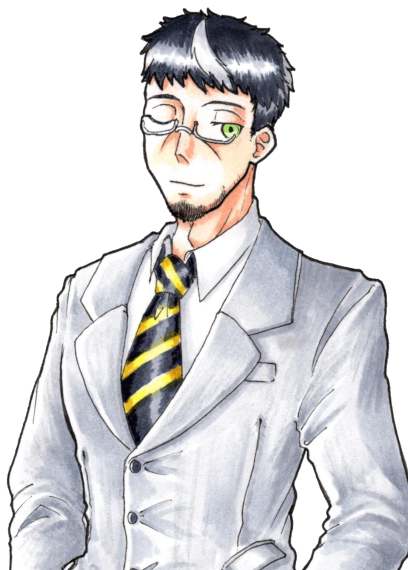
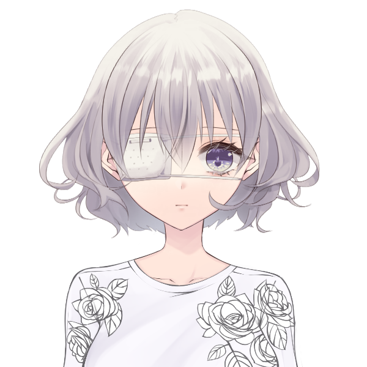
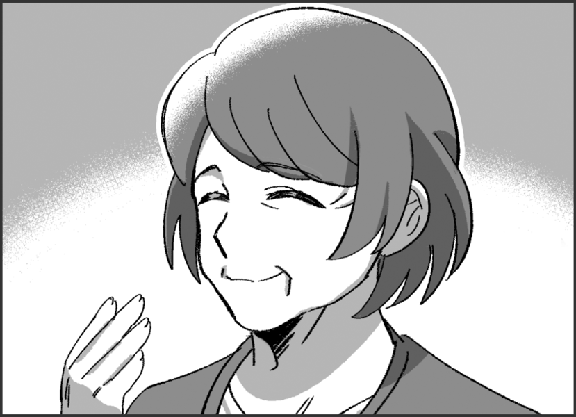
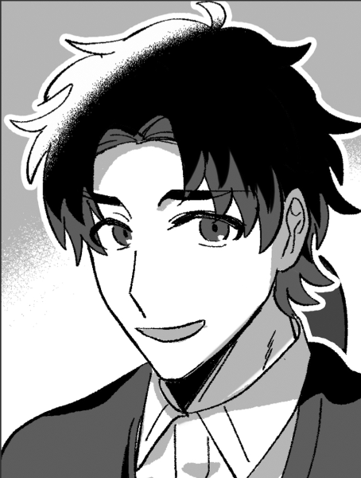
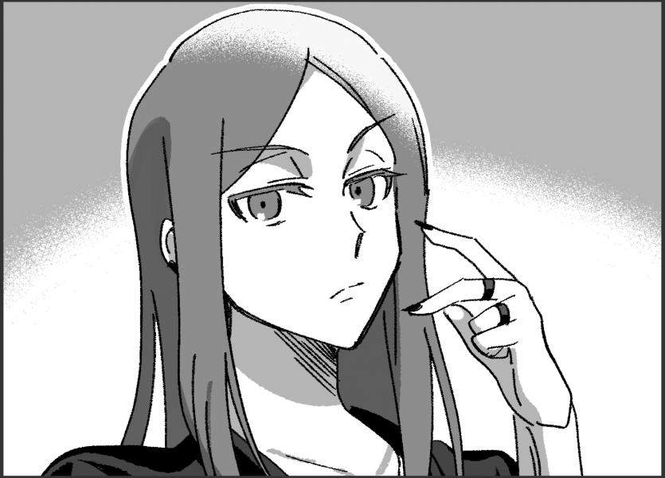
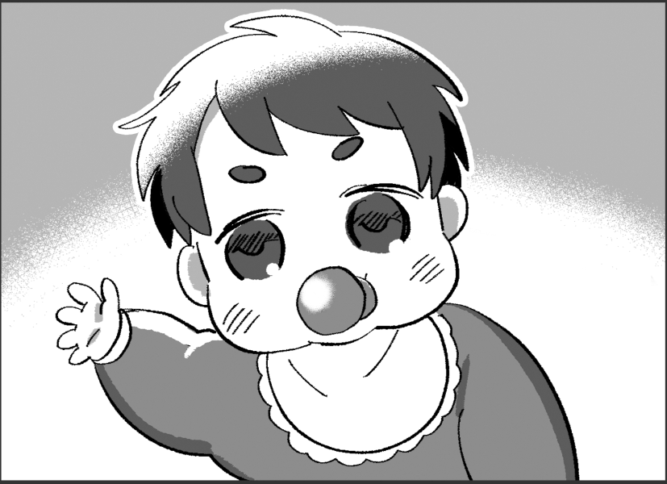

メインログ / 雑談ログ
キャラシート
父親： 巨肩矢委人 (キャラシート) PL：がぶらす母親： フランベルジュ (キャラシート) PL：雅
長男： ヴォルグ (キャラシート) PL：灸
長女： クリスタ=フォン=グラスマン (キャラシート) PL：ふろずん
次女： 雲峰詩音 (キャラシート) PL：めい
目次
■プリプレイHO&PC紹介
■オープニングフェイズ
01 本物の偽物
■ミドルフェイズ
02 月曜日、新しい生活の始まり
03 薄雲団地の住人達
04 午後のティーパーティー
05 夕飯、そして家族会議
06 遊ぼう薄雲ランド！
プリプレイ
■共通ハンドアウト
ワークス / カヴァー:自由 / 自由
ロイス:"パパラッチ"
推奨感情:P 自由 /N 自由
諜報専門の FH エージェント、通称 ” パパラッチ ”を UGN が取り逃がしたのが数週間前の話。
彼が逃げたと思われる薄雲市に潜入し”パパラッチ ” を見つける為、キミ達は敵にバレぬように家族を装って引っ越す事になる。
GM : では、始めに自己紹介から！まずお父さんどうぞ
巨肩 矢委人 : はーい！簡潔にということなのでできるだけ簡潔に

巨肩 矢委人 :
名前は巨肩矢委人(おおかたやすと)、年齢は17！
見た目は大人で中身は少年…だけど大人びてはいる子
よくチルドレンの教官と間違われるよ
でもやっぱり子供ではあるから、色々拙いところはある
カバーしてあげてほしいなって
巨肩 矢委人 :
ビルドについて
クライマックスに万色の檻で大殴りする殴りオルクス！
妖精の手もあるぜ
途中で武器が一個買えると嬉しいです
巨肩 矢委人 : 【ゆとシート】、【キャラクター登録所】
GM : 老けてるけど若いお父さん…調達についてはあとで1つ注意点がありますが全然できると思う！
GM : じゃあ次はお母さんどうぞ～
フランベルジュ : はーい！自分は更に簡潔に

フランベルジュ :
名はフランベルジュ、性は捨てた！
年齢は数百歳！Dロイス『古代種』の力でずっと幼い外見のまま生きてきました。一応UGN側で働いてるらしい。
フランベルジュ : 言動も幼いけど、どこか外見と不相応で物騒なことを口走ったりします。怖いね。
フランベルジュ :
そして現在はラウレスアレアという場所でお偉いさんやってます！詳しくはここを見てね！
https://lisp-trpg.sakura.ne.jp/upload/upl/_Mf7jA8rjFGw2SZWxZ7g/00499.html
フランベルジュ : シンドロームはピュアのソラリス。薬物の力で敵の精神を蝕み、デバフをかけるぞ！
フランベルジュ : 「そんなお母さんだよ！よろしくね！」
フランベルジュ : 【キャラクターシート】
GM : ありがとう！逆に見た目若いけど古代種でもうこの時点で雰囲気が危うい…
GM : 次は長男さん！
ヴォルグ : はーい

ヴォルグ :
名前はヴォルグ、年齢は32歳
雪女伝説のレネゲイドビーイングです！
元はFH寄りの情報屋、今は色々あってUGNに所属しています。
ヴォルグ : ぼんやりしているように見えて自分の損得で動き、好きな事をして好きな物を食べて生きてる。人生(?)楽しければなんでもよし！なタイプ
ヴォルグ :
シンドロームは氷特化のサラマンダーとブラム＝ストーカー
わざと攻撃を受けてカウンターをとったり自らの体力を削って戦うゾンビアタッカータイプです！
ヴォルグ : 【キャラクターシート】
GM : お兄ちゃん(32歳)おるね…お父さんがしっかりしてるけど未成年やから支えてあげてほしい…紹介ありがとう！
GM : じゃあ今度は長女さん！
クリスタ : よくってよ！

クリスタ : クリスタ=フォン=グラスマン！ 齢は15！
クリスタ : ドイツ出身の高校1年生の御嬢様ですわ！
クリスタ : 自身が貴族である事に誇りを持っていて、いつも自分磨きに余念がない女性ですの！
クリスタ : 特に"美"に関する意識の高さについては、トップモデルのソレと肩を並べるレベル！
クリスタ : それはそれはイロイロなコトを我慢して"美の頂点"への階段を昇っているのですッ！
クリスタ : ……そうした"努力"を続けてきた影響で、プライドの高いレディになっていますの！
クリスタ : また自他共に厳しいので孤高な人ですが、今回は疑似家族ができるということで！！ どういう関係になるのか愉しみですわ！！
クリスタ :
戦闘では「Dロイス：秘密兵器」等で取得したEXレネゲイド※を駆使して戦います！
※レネゲイドに感染した物品
クリスタ : RC技能で≪インビジブルハンド≫による範囲攻撃を行なう他、装甲諸々のおかげで合計43点のダメージ軽減ができますの！
クリスタ : 自分の身体は守って当然よね、だって手入れした肌が傷付くなんて許せないもの！！
クリスタ : ……そんなところですわ！
クリスタ : 【キャラクターシート】
GM : ああ、お嬢様！ご紹介ありがとうございます、一般家庭生活でのお嬢様の奮闘に期待していますわ…！
GM : 最後になりました、次女ちゃんどうぞ！
雲峰詩音 : はい！

雲峰詩音 : 雲峰詩音（くもみねしおん）、16歳のUGNチルドレンです。
雲峰詩音 : ≪急速分解≫で触れたものを灰に出来るけど、その代わりに常に周りが灰塗れになるところから、コードネームはシンデレラになりました。
雲峰詩音 : 対抗種のDロイスを持っているキャラで、オーヴァードは触れた箇所が火傷するような痛みを伴って灰化します。
雲峰詩音 : フレーバー設定だからHPダメージは無いけど、PCにも影響あるのでこのキャラに触る時には覚えといてもらえたらなって思います。一応服の上の部分ならギリ大丈夫です。
雲峰詩音 : 性格としては心に壁を作っていてあまり人と深く関わろうとしない暗い奴です。与えられた任務を成功させることだけ考えて生きてます。
雲峰詩音 : ビルドはモルフェウス/バロールのRC型で、≪砂の刃≫で灰を操って戦います。
雲峰詩音 : あとは≪孤独の魔眼≫で範囲攻撃の対象を自分一人に変更したり、≪時の棺≫で判定失敗にさせたりも出来ます。
雲峰詩音 : 以上で！
雲峰詩音 : 【キャラクターシート】
GM : 悲しい設定しとる…この卓通して人とちょっとずつでも触れ合っていってほしいね
GM : ではでは、今回はこの5人でやっていこうと思います。DX3rd『オーヴァード家族物語』始めていきます！
メインプレイ
シーン1 本物の偽物
GM : オープニングは全員登場です！
巨肩 矢委人 : 1d10＋29(1D10+29) ＞ 4[4]+29 ＞ 33
フランベルジュ : 1d10＋32(1D10+32) ＞ 7[7]+32 ＞ 39
ヴォルグ : 1d10+45(1D10+45) ＞ 7[7]+45 ＞ 52
クリスタ : 1d10+45 侵蝕率初期値でも一番ですわ～～～～(1D10+45) ＞ 10[10]+45 ＞ 55
雲峰詩音 : 1d10+33(1D10+33) ＞ 1[1]+33 ＞ 34
UGN支部 会議室
GM : とある夏の暑い日、君たちは本部エージェントである本分 英二(ほんぶ えいじ)に呼ばれ、UGN支部の会議室へと呼び出されていた。
GM : だが、君たちは任務のため呼び出しを受けたというだけでまだその内容は知らされておらず、その場には本分英二の影の形もない。
クリスタ : ……その代わり、適度に冷房が効いた会議室のテーブルには、紅茶がふたつ並んでいた。
クリスタ : ふたつの紅茶を挟んで向き合うのは、ふたりのオーヴァード。
クリスタ : ──ひとりは、まるで御伽の国から来たプリンセスのような、それはそれは美しい少女。
クリスタ : 髪は金糸、肌は真珠、瞳は水晶。 ここに吟遊詩人がいたなら、そのように謳っただろう。
クリスタ : 「(……時間には可能な限りのヨユウをもって来たけれど、呼び出し人の姿はなし)」
クリスタ : 「(代わりに待ちあわせ場所にいたのは、矢鱈と背の高い男が一人、と)」
クリスタ : 「(……このワタクシをよびだしておいて失礼)」
クリスタ : 「(というか！ こんな背の高い日本人いますの！？ ソファが小さく見えますわよ！？)」優雅に紅茶を啜りながら、目の前の巨漢を観察する
ヴォルグ : クリスタの視線を感じつつ紅茶を飲んでいる、声を掛けようかとも思ったが今は他の面子を待った方がいいだろうと判断し、素知らぬフリをしている様子
ヴォルグ :
「（待たされるのは慣れてるが…気まずいな。）」
そっ…と視線を合わせないようにしながら
巨肩 矢委人 : ふと、規則正しいノックの音がする
クリスタ : 「……？ 本分様の御到着かしら？」チラ、と扉に目をやる
ヴォルグ : 心なしかホッとした様子で扉を見る
巨肩 矢委人 :
「失礼致します」
身長にして約180cmという長身のスーツの男が入って来る
クリスタ : ガシャン、とそこそこ大きな音を立ててティーカップを置く
クリスタ : 「(また巨体のオジサマ！？！？)」
ヴォルグ :
「！」
僅かに目を丸くして大きな音を立てたティーカップとクリスタを交互に見る
巨肩 矢委人 : 「！？…ええと、どうかしましたか？」
クリスタ : 「……いえ、なんでも」平静を装う
クリスタ : 「あなたは……本分様から言伝でも預かってきたのかしら……？」呼びだされたのは自分だけだと思っているので、遣いのエージェントだと勘違いしている
巨肩 矢委人 : 「？ ええと、失礼致しました。UGNチルドレン、"オーリーオーン"巨肩矢委人、到着致しました。自分は本部からの伝言は託かってはいませんが…」
クリスタ : 「UGNチルドレン？」
クリスタ : 「(……ああ、いえ、聞き間違いよね、聞き間違いだわ)」
クリスタ : 「それでは、あなたはどうして此処に？」
巨肩 矢委人 : 「はい、自分はエージェント・本分に召集を受けました」
クリスタ : 「……あなたも、本分様から召集を？」
クリスタ : 「では、あなたも？」ヴォルグ君に視線を移し
ヴォルグ : 「俺もエージェント・本分から召集を受けた。人数以外の内容は聞いていないがな…」
クリスタ : 「…………」
クリスタ : クリスタはごくごくごくと紅茶を一気に飲み干して、叩きつけるようにカップを置きます。
クリスタ : 「(どういう人選なの！？！？！？！？)」
クリスタ : 「(この麗しいワタクシと、あの巨漢二人がバディってコト！？！？！？！？！？)」
巨肩 矢委人 :
「(何か言いそうだけど何も言わないな…)」
固唾を呑んで見守っている
ヴォルグ :
「…ということはあと２人だな。」
落ち着きのない様子を暫く眺め、軽く咳払いをして漸く口を開いたかと思えば手帳を確認しながら呟く
クリスタ : 「あと二人！？ まだいるの！？」思わず声を出す。 巨漢が更に二人まとめて出てくる様子をイメージしているらしい。
巨肩 矢委人 : 「…？人数は私含めて5名という連絡は受けていたような…詳細は伝達されていませんが…」
クリスタ : 「……ワタクシのところに、そのような連絡はありませんでしたわ」
巨肩 矢委人 :
「んん…！何か考えが…」
苦しいフォロー
ヴォルグ :
「（伝達ミスか…？）」
手帳の伝達内容にも軽く不信感を抱きつつ
雲峰詩音 :
三人がそうしていると、部屋の片隅に異変が起きる。
縦横2m程度の空間が灰色に染まり、砂のようにサラサラと崩れて穴が空いたのだ。
ぽっかりと空いたその穴の中から、一人の少女が姿を現す。
雲峰詩音 :
「……失礼します」
≪ディメンジョンゲート≫を使い、空間を超えて部屋の中に入って来る。
クリスタ : 「……！」
クリスタ : 「(いきなり出てきて吃驚しましたが、女性です…！ 女性ですわ…！！)」一瞬だけ驚くが、すぐに胸を撫でおろす
雲峰詩音 : 「えっと……」 部屋の中を見渡して、本分がいないことを確認
雲峰詩音 : 「わたしは、任務に呼ばれて来たのだけど……」
巨肩 矢委人 : 「エージェント本分から招集を受けた方ですか？」
雲峰詩音 : 「はい……」 頷く
クリスタ : 「(しかし陰気な方ですわね……、しかも怪我人じゃありませんの……、本分様は本当に何を考えてらっしゃるのかしら……)」
巨肩 矢委人 : 「でしたら…まだご本人が到着していないようですので、おそらく待機になるかと思われます」
雲峰詩音 : 「そうなんですね……分かりました」
ヴォルグ :
後からきた２人を見ながら席を立ち、ソファを指し示しながら
「その場で待つわけにもいかないだろ、紅茶でも飲むか？」
雲峰詩音 :
「あ……えっと、はい。じゃあ、お願いします」
ソファの方に移動する。その場から離れると空間に空いた穴は自動的に元に戻った。
巨肩 矢委人 :
「あぁ、ありがとうございます。では自分も失礼して…」
自分もソファへ移動しよう
フランベルジュ : そんな和やかな雰囲気に水を差すように、扉の向こうから『パタパタ』『ガラガラ』と騒がしい音が聞こえる。
フランベルジュ : その騒音は扉の前で止まり、扉が開かれた。
フランベルジュ :
「おーまーたーせー！わっ、もうみんな揃ってる！」
大きなスーツケースを引いて、元気よく部屋の中へ入る。
雲峰詩音 : 「……！？え……」 肩を小さく震わせてそちらを見る
巨肩 矢委人 :
「おお…」
すごい方が来たなぁという反応
ヴォルグ :
スーツケースとお土産袋を抱える少女を見て
「…観光でもしてきた？」
フランベルジュ : 「そうなの！久しぶりの日本だから、行きたい所がたくさんあって……」
巨肩 矢委人 :
「ん？ええと、今からここは会議で使用するんですが…」
間違えて来た説を思い浮かべる
フランベルジュ :
「あっ、紅茶飲んでる！丁度お土産でクッキーを買って来たの、一緒にどうぞ！」
ぱぱっと缶に入ったクッキーを取り出して
雲峰詩音 : 「いえ、あの……あなたは……？任務で来たエージェント……のようには見えない、ような……」
フランベルジュ : 「あ～、迷い込んだ子供って思ってるでしょ～？私はちゃーんと本分くんに呼び出されてきてるのよっ」
クリスタ : 「(巨漢……、少女……、女児……)」
クリスタ : 「……これは、悪い夢、かしら」
雲峰詩音 : 「えっ……そ、そうなの」
ヴォルグ :
はいはいと慣れた様子で追加の紅茶を並べながら
「オーヴァードには良くあることだ。」
巨肩 矢委人 : 「なる、ほど……？(この間習った古代種か…？あるいは純粋に年齢が低いだけなのか…)」
フランベルジュ :
「そうそう、それと自己紹介ね！」
「私の名はフランベルジュ！コードネームは"ドレッドフル"、いつもはラウレスアレアってところでお仕事してるの。遊びに来る時は連絡を頂戴！」
ふんすっ、と胸を張って自己紹介
クリスタ : 「ラウレスアレア…！？ 本当にあんなところで仕事をしているっていうの…？」
巨肩 矢委人 : 「丁寧にありがとうございます。申し訳ありませんが、ラウレスアレアというのは…？」
ヴォルグ : 「そりゃまた遠方から…」
ヴォルグ : 矢委人にラウレスアレアの簡単な説明をします。
クリスタ : 「……軽い説明でも十二分に理解できたと思うけれど、遊びに行くのは冗談のつもりでも止めた方がいい場所よ」
巨肩 矢委人 : 「ええ、自分が行ったところで何がどうなるような場所ではなさそうですね…そこで仕事をしていらっしゃると言うことは、相当なキャリアを積んで…？」
雲峰詩音 : 「でも幼く見えるけれど、UGNチルドレンなの……？」
フランベルジュ :
「私の庇護下なら大丈夫。手を出す人がいたら…それは命知らずさんね？」
「ううん。UGNエージェントよ？これで数百年は生きてるんだからっ♪」
再びエヘンッと胸を張って
フランベルジュ : 「あっ、キャリアらしいキャリアは調べても出てこないと思うよ。そういう役職なの、私」
雲峰詩音 : 「数百年……もしかして、古代種のオーヴァードかしら……」 小声で呟く
巨肩 矢委人 : 「数百…となると、古代種と呼ばれるレネゲイドを有しているんですね。なるほど…いえ、納得しました。……これで全員が揃いましたか」
ヴォルグ :
「揃ったみたいだな…伝達ミスがなければ。」
部屋にいる人数を軽く数える
クリスタ : 「これで全員？ そうかしら？」
クリスタ : 「……最重要人物がひとり遅れているようだけれど」
フランベルジュ :
「ああ～、本分くんがいなーい！」
部屋をぐるりと見回して
GM : と、そこで廊下の方から近づいてくる足音がする。

本分 英二 : 「どうもどうも、遅れてすみません」
本分 英二 : 扉を開けてバタバタと入ってくる一人の男。瓶底メガネにヨレヨレの白衣、本分英二その人だ。
クリスタ : 「……あら、ウワサをすれば」
クリスタ : 「随分と重役出勤でしたわねぇ、本分様？」キッと刺すような視線を飛ばす
フランベルジュ :
「やっほー、本分くん。道端でお婆ちゃんでも手助けしてたのかな？」
笑顔で出迎える
本分 英二 :
「いやぁ、それがここに来る途中で犬の尻尾を踏んで怒らせてしまいまして！運が悪いこともありますよね」
ヘラッと笑ってみせる
クリスタ : 「犬の尻尾……ねぇ……」
雲峰詩音 : 「それは……よく分かりませんけど、わたし達も今さっき揃ったところなので、気にしないでください」
クリスタ : 「いえ！ いいえ！ 気にしてもらわないと困ります！」
クリスタ : 「ワタクシの一分一秒は貴重なのですから！」
雲峰詩音 : 「そうなの……？でもあなたの時間の価値なんてよく分からないわ、ごめんなさい」
クリスタ : 「………………」
フランベルジュ :
「あははっ！そうだよね。人の価値感なんてそう簡単にわからないよね！」
ケラケラと笑いを零して
クリスタ : 「──ああ、そう。 もういいわ、怒る気も失せた」
巨肩 矢委人 : 「(この方々と作戦行動か…彼女らもプロだ、流石に真面目にやってくれるだろうけど…頭が痛いな…)」
ヴォルグ :
"あーあ…"と言いたげな顔で少女達を見る
「…流石に任務の用件は忘れていないよな？」
ヴォルグ : こじれる前に話を逸らしてしまおうと説明を促す
クリスタ : 「……そうね、この取り留めのないメンバーが集められた事情等について説明を」
本分 英二 : 「はい！今回皆さんには任務の依頼があって集まっていただきました」
本分 英二 : 「このメンバーが集められたのには深い深ーい訳があるんです。早速任務の詳細からお話させていただきましょうか」コホンと咳払いを1つする
雲峰詩音 : 「お願いします」
本分 英二 : 「えー……まず、この日本に“パパラッチ”というコードネームのFHエージェントがいまして」
本分 英二 : 「そのパパラッチがUGNから機密情報を盗み逃走。それを取り逃がしたのがつい先日のことです」
雲峰詩音 : 「……じゃあ、わたし達はそのFHエージェントを倒して情報を奪い返せばいいのでしょうか……」
本分 英二 : 「その通りです！いやぁ、理解が早くて助かります」
フランベルジュ : 「ふーん、なんだか普通の任務だね。やっぱり殺しておいた方がいいの？」
巨肩 矢委人 :
「普通の任務……先ほど人選に深い理由が、と仰られていたので、少し勝手が違うのでしょうか？」
と先を促そう
ヴォルグ : 「わざわざ外部からも召集を掛けたんだ、思ったより簡単じゃなさそうだな…？」
雲峰詩音 : 「……やむを得ない場合はそうなるかもしれないけど、基本的には確保した方が良いと思うわ……ドレッドフル」 話を妨げないように、フランベルジュに小声で言う
フランベルジュ :
「そっか、優しいね！」
ひそひそ
雲峰詩音 : 「優しいとか、そういうのじゃないと思うけど……」
本分 英二 :
「そうなんです。重要なのはここから先でして～…」
巨肩君、ヴォルグくんに答えて
本分 英二 : 「そのパパラッチですが、薄雲市に所属するとある団地に逃げ込んだ可能性が高いことが分かってます！」
雲峰詩音 : 「居場所の見当はついているんですね……それなら話が早そう」
ヴォルグ :
「薄雲市か…」
FHの考える逃げ場らしいなと頷く
本分 英二 : 「それが簡単に行かない理由があるんです！」ヴォルグさんはご存知ですかね、と続けつつ
本分 英二 : 「まず、何故パパラッチがその団地に潜んでいる可能性が高いかという根拠からお話しますが…」
クリスタ : 「続けて？」
本分 英二 : 「えー…パパラッチには そのですね、特殊な癖がありー……」
本分 英二 : 「所謂下着泥棒としても知られている変態です」
巨肩 矢委人 :
「………はぁ」
呆れたというか驚いたというか…の顔をする
フランベルジュ : 「変態さんだーっ！」
雲峰詩音 : 「…………」
ヴォルグ : どう反応すべきか困った顔をしている
クリスタ : 「……それで？」軽蔑の表情を隠さず
本分 英二 : 「はい、パパラッチの逃げたと思われる方角と、最近下着泥棒が発生しているという情報からパパラッチはその団地を根城にしている可能性が高いと判断された、というわけです！」
巨肩 矢委人 : 「(アホ…？)」
本分 英二 : 「そこでー……」
本分 英二 : 「君たちには一般人にもパパラッチにも怪しまれないよう、目立たぬように団地に一週間『家族として』潜入任務をしてもらうことになりました！」
本分 英二 : いかにも名案といった風な顔をしながらとんでもないことを口走る本分。
クリスタ : 「ああ、なるほどそれで」
クリスタ : 「────はあ！？！？！？！？！？！？」
巨肩 矢委人 : 「…はぁ？」
フランベルジュ :
「わあ、家族！」
キラキラと笑顔を浮かべて
ヴォルグ :
「……ん？」
唐突な任務の内容に疑問符を浮かべて固まる
雲峰詩音 : 「…………か、ぞく？」 スカートの裾から、サラ……と灰が零れる
本分 英二 : 「はい！皆さんには家族のふりをして件の団地に潜入していただきます。もちろん周囲にはバレないように」
クリスタ : 「そんなの言いなおさなくても分かってるわよッ……！！」
巨肩 矢委人 : 「そのう、何が何だか…」
雲峰詩音 : 「家族……」 体の周りに灰が漂い始める
ヴォルグ : 「人選はこれで合ってるのか…？」
フランベルジュ :
「わあ、とっても素敵ね！それでこの5人が……」
改めてみんなをじっくりと見回して
巨肩 矢委人 : 「まぁ、そうですね…この中に変身能力をお持ちの方が…？自分はそういったものはさっぱりなんですが…」
本分 英二 : 「ええ。皆さんになら素敵な家族を演じていただけると思ってお呼びした次第です、はい！」
クリスタ : 「……ふざけているのかしら？ 本部エージェントの判断とは俄かには信じられないのですけど」
ヴォルグ : 「本人は至って真面目の様だが…」
巨肩 矢委人 : 「話が…見えてきませんね…」
巨肩 矢委人 : 「いや、もうすでに全容が見えている…？」
フランベルジュ :
「私は賛成だよっ！"ファミリー"じゃない家族を作るのとっても楽しみ！」
機嫌よく足をぱたぱたさせて
雲峰詩音 : 「……あの、別に団地に潜入しなくても、薄雲市のUGN支部を拠点にして調査を進めればいいんじゃないでしょうか……？」
本分 英二 : 「雲峰さんの意見は最もだと思います！ですが、それがそうもいかない事情がありまして……」うんうんと頷きながら
クリスタ : 「……事情？」怪訝な顔で
雲峰詩音 : 「……？」 首を傾げる
本分 英二 : 「単刀直入に言いますと、存在しないんですねーUGN支部が。向こうの警察とUGNとの間に軋轢がありまして…このような事件に発展していてもこちらからの介入が難しいんです」
雲峰詩音 : 「あぁ、なるほど……」
雲峰詩音 : 「……じゃあ、分かりました。その……家族、の設定で潜入します」
クリスタ : 「少しはマトモな事を言うかと思ったら、アナタまで何を言い出しますの！？！？」
雲峰詩音 : 「だって……そうするしかないなら仕方ないわ。それに、本部のエージェントの判断なら不可能ではないということだと思うから」
ヴォルグ :
「それで、仮住居は手配してあるのか？それぞれ役割は？」
あっさりと受け入れた様子で
巨肩 矢委人 :
「ええ…？こういった任務ってよくあるものなんですか…？」
あまりにも素直に聞き入れる人が多い！
ヴォルグ :
「さぁ…？俺は初めてだが、なかなか楽しそうじゃないか？」
肩を竦めてみせる
フランベルジュ :
「うんうん。たまにはこういう任務も良いんじゃないかなっ♪」
賛成派の人達に頷く
本分 英二 : 「部屋は手配済みです！どういう家族設定で行くかは皆さんで話し合ってください」
クリスタ : 「話し合う！？ それ以前の問題でしょう！！」ダン、と机を叩いて立ちあがる
クリスタ : 「この任務に乗り気なアナタ達！ 今一度、此処に集められたメンバーを御覧になって！？」
巨肩 矢委人 :
「(すごい勢いだ…)と、言いますと…」
周囲を見回してみる
雲峰詩音 : 「……確かに、家族で通すには難しそうな気もするけれど」
雲峰詩音 : 「嫌ならやめればいいと思うわ。嫌々手伝われて足を引っ張られても困るし、あなた一人位ならいなくても多分問題ないと思うから」
クリスタ : 「(この女～～～～～～！！！！！！)」
クリスタ : 「……はぁ、よくよく聞いてくださるおばかさん？」息をはいて怒りを鎮め
クリスタ : 「あのね、ワタクシは感情的な忌避感などでそう言っている訳じゃないの」
雲峰詩音 : 「そうなの」
クリスタ : 「そうなの」
クリスタ : 「だって、それ以上に大きな問題がひとつあるでしょう？」
雲峰詩音 : 「……？」
クリスタ : 「それはね」
クリスタ : 「あまりにもワタクシが美しすぎる！！！！！！」
クリスタ : 「という深刻な……」
巨肩 矢委人 : 「ん…？」
雲峰詩音 : 「……どういう意味？何を言ってるのかよく分からないわ」
フランベルジュ :
「顔はとっても綺麗だよね～、私も負けてないと思うけど！」
《麗しの容貌》のぷにぷにフェイス
ヴォルグ :
話半分に聞き流しながら
「…母親役は無理そうだな、とはいえ後のふたりも若すぎるか。」
巨肩 矢委人 : 「その…容姿が美しい…という点では…否定は決してしませんが、それとこれとにどういった問題が…？」
クリスタ : 「……おばかさんは分からなかったようですから、嚙んで含めるように丁寧に教えてさしあげましょう」
クリスタ : 「ワタクシ、優しいので」
クリスタ : 「──あのね？ ワタクシが美しすぎるせいで、アナタたちと血が繋がっているなんてムリがありすぎるでしょう？ 人種だって違うわ？」
雲峰詩音 : 「……あぁ、そういうこと」
巨肩 矢委人 : 「人種という点でなら、確かに。髪色は染めているという言い訳が効くと思いますが…」
雲峰詩音 : 「じゃあ、やっぱりあなたはやめた方が良いと思うわ。そうすれば何とかなるってことなのよね？」
巨肩 矢委人 : 「いえ、それは…あくまで我々5人を作戦に召集した以上、我々判断での離脱は選択肢として無いのではないでしょうか」
雲峰詩音 : 「……駄目か。じゃあ、どうすればいいんだろう……」
巨肩 矢委人 :
「と、言うような問題があるのですが…エージェント・本分、問題無いのですか？」
本分さん見よう
ヴォルグ :
「？」
（あまり違いが分からない…）と言いたげな顔で一同の顔を眺めている
本分 英二 : 「人種についてはハーフという設定でいかがでしょう！僕も1人だけ海外の方だと不自然だと思ってたんです。でも、フランベルジュさんとかヴォルグさんとかもいますし」屈託のない笑顔で笑ってみせて
本分 英二 : 「それにほら！クリスタさん、目の色だって雲峰さんとよく似ていますし並んだら姉妹に見えてきませんか？」うん、見える見える！と一人納得したように頷いている。
巨肩 矢委人 :
「ハ、ハーフ…！確かに通らない理屈ではありませんが…！………そう、ですね……本部エージェントである本分さんがそう仰る以上、その作戦で問題は無いの……でしょうか…」
自信なさげ
ヴォルグ :
「美人…？がどう影響するかは分からないが、それなら母親役か父親役どちらかに海外の人種を配属すべきだろうな。」
エージェント・本分の言葉に頷きながら
巨肩 矢委人 :
「ええ、そうですね。母親役を希望される方はいらっしゃいますか？」
既に作戦に取り込まれている
フランベルジュ :
「はーい！はいはーい！私っ！」
ピョンッ！と腕を伸ばす
クリスタ : 「…………」母親役をしようという童女を見て
クリスタ : 「紅茶、御馳走様」
クリスタ : 「これから私はマッサージに……」ふらりと疲れたように出口に向かう
雲峰詩音 : 「分かった、それじゃ……」 見送る構え
フランベルジュ :
「わーっ！待って待って！」
出口に先回り
ヴォルグ :
「……」
困ったように口元に手を当てて考えている
クリスタ : 「はあ……あのねえ……」
クリスタ : 「……まずは本分様が言った『ワタクシとその女の瞳が同じ色』という話だけど」
クリスタ : 「深紫と薄藤を、同じ"紫"で括らないでもらえるかしら」
クリスタ : 「何より似ても似つかないわ」
雲峰詩音 : 「あなたの方が美人だから？」
クリスタ : 「その通りよ、少しは……」
雲峰詩音 : 「じゃあ、不細工に見えるように変装するのはどう……？」
クリスタ : 「いいえ、やはりバカでしたわ、この子……」
雲峰詩音 : 「良いと思ったんだけど……駄目か……」
クリスタ : 「宝石を泥水で覆うほどの愚行ですわ」
クリスタ : 「──それと、そこの子供が母親になるという話」
クリスタ : 「古代種だかなんだか知らないけれど、もう意味が分かりませんわ」
フランベルジュ :
「ふふ、そうだよね。よくも知らない相手と家族になれ。だなんてちょっと無理があったよね。」
首をかしげてニコニコ
クリスタ : 「いえ、ワタクシは"ハロー効果"でも言われている通り、人間は見た目が90％だという話を……」
ヴォルグ :
「一旦、自己紹介でもして見極めるか？」
名前も年齢も知らないだろう、と提案してみる
フランベルジュ : 「そうっ！まずはお互いをよく知るところから始めましょう？思い返してみれば、私しか名乗ってないし！」
フランベルジュ :
「ね、だからもう少しお話していかない？お顔の良い人？」
クリスタ嬢を見上げるようにニッコリと微笑んで
クリスタ : 「……はあ」
クリスタ : 「仕方ないですわね、もう少しだけワタクシの時間を恵んでさしあげましょう」再びソファに座り
フランベルジュ : 「ありがとう！優しい人だって信じてたわ！」
ヴォルグ :
「…どうも。じゃあまずは俺からだな」
ソファに座った姿を見て穏やかに礼を言うと自己紹介を始める
ヴォルグ : 「コードネームは“フェンリル”、名前はヴォルグだ。言い忘れていたがレネゲイドビーイングでな…"家族"というものは役割以外よく分かっていない。」
クリスタ : 「レネゲイドビーイングね、それを聞いて腑に落ちたわ」
クリスタ : 「……だって、明らかに日本人の体格じゃありませんもの」
雲峰詩音 : 「何センチあるの？」
ヴォルグ : 「最後に測った時は確か…210…？だったな」
雲峰詩音 : 「大きい……」
巨肩 矢委人 : 「210cm…規格外ですね…なるほど、レネゲイドビーイング…」
フランベルジュ : 「おっきい狼さんね…。うん、それじゃヴォルグくんもよろしくね！」
ヴォルグ :
「ああ、宜しく」
次は誰が紹介する？と順番に眺めて
フランベルジュ :
「それじゃあ改めて私から！」
コホン、と軽く咳払い
フランベルジュ : 「コードネームは"ドレッドフル"、名前はフランベルジュ！数百年前に古代種に感染しちゃってからずっとこの見た目なの、わあ大変。」
フランベルジュ : 「今回はラウレスアレアから緊急来日！みんなと仲良くできれば良いな！」
雲峰詩音 : 「さっきも少し聞いたけど、本当に古代種なの……？年齢的には母親でもいける……の、かしら……」
フランベルジュ : 「任せてっ、人をまとめる役割には慣れているの！家族は初めてだけどね？」
巨肩 矢委人 : 「よろしくお願いします。あくまで"年齢的には"では…ですね。それでも離れすぎてはいますが…」
クリスタ : 「……この際ですから、ひとつ気になっていたコトを尋ねてもよろしいかしら？」
フランベルジュ : 「よろしくてよ！」
クリスタ : 「あなた、ラウレスアレアから来たと言っているけれど出身は別でしょう？」
クリスタ : 「一見して下品にも見える振る舞いの節々に垣間見える、その育ちのよさ」
クリスタ : 「──何処の"家"の出？」
フランベルジュ :
「わあ、そんなこと聞いて来る人ホントに久しぶり！」
両手で頬を押さえ、オーバーなリアクションを見せる
フランベルジュ : 「そう、私も昔は貴族だったの。でも覚醒したら気味悪がられて絶縁されちゃった！あははは！」
クリスタ : 「……そう」
クリスタ : 「それは失礼な事を聞いたわね、スナオに非礼を詫びるわ」
雲峰詩音 : 「え……」 詫びている様子を見て少し驚く
フランベルジュ :
「ううん。気にしないで？私の事を知ろうとしてくれて、とっても嬉しいわ！」
「こそこそ調べようとしてくるのは別だけど（小声）」
フランベルジュ : 「それじゃあ、貴女のことを教えて？一番目立っていたから早く知りたいの！」
クリスタ : 「ええ、いいでしょう」失礼な視線を投げている女が約一名いますわね、と内心おもいつつ
クリスタ : 「ワタクシの名は、クリスタ=フォン=グラスマン！」
クリスタ : 「ドイツの名家、グラスマン家の正統なる血統を引く"貴族"ですわッ！！」
雲峰詩音 : 「お嬢様なのね……」
クリスタ : 「ええ、だから高貴なるワタクシの時間は貴重なのです」
クリスタ : 「せいぜい言葉を交わしてもらえる事に感謝なさい？」
雲峰詩音 : 「それはあんまり分からない」
クリスタ : 「この子はまたッ……！！」
ヴォルグ :
「まぁまぁ」
続けて、と言いながら
フランベルジュ :
「よろしくね！貴族仲間だね！」
きゃっきゃ
クリスタ : 「現役貴族であるワタクシとアナタは仲間では……」
クリスタ : 「というか、よろしくってなんですの！？ よろしくって！？」
クリスタ : 「ワタクシ、まだ疑似家族になるつもりはありませんわよ！？！？」
巨肩 矢委人 : 「その判断をするために自己紹介をする、という話でしたね。次は自分でよろしいですか？」
雲峰詩音 : 「あとは……わたしもまだか……。大丈夫です」
巨肩 矢委人 :
「では自分が。挨拶が遅れて申し訳ありません、コードネーム”オーリーオーン”、巨肩矢委人と申します。現在はUGNチルドレンに在籍しています」
行儀よく、お辞儀をするでしょう
雲峰詩音 : 「…………？？？」
雲峰詩音 : 「あ……UGNチルドレンの、教官……ってこと？ですよね……」
ヴォルグ : 「チルドレン…ということは、幾つだ…？」
巨肩 矢委人 :
「はい、数えて17、教官に間違われた回数は…最初は友人間で共有して楽しんでいましたが、もう数えていません」
苦笑い
クリスタ : 「はあ！？！？！？！？！？ 17！？！？！？！？」
フランベルジュ : 「すごーい、もう成人してるのかと思っちゃった！ある意味で私と逆だね！」
雲峰詩音 : 「み……見えない……」
巨肩 矢委人 : 「そうですね…一応、変異種のレネゲイドを有していますから、その影響かと検査したんですが……ただの体質、もとい特徴でした」
ヴォルグ : 「ふむ、同世代だと思っていたが…かなり若年層が固まっているな…」
クリスタ : 「……ねぇ、悪い魔女に老化魔法でもかけられたんじゃないの？」
巨肩 矢委人 : 「いえ、生まれて一度も悪い魔女にお会いしたことはないですね…遠隔から干渉されているならまだしも…」
クリスタ : 「そう……同情するわ……可哀想ね、あなた……」
雲峰詩音 : 「そうかしら……。驚いたけど、老化してるわけじゃないなら可哀想ではないと思うけれど」
巨肩 矢委人 : 「そうですね、幸い…自分で言うのもなんですが、真面目ぇ…と呼ばれる性格をしているので、あまり苦労をしたことはありません」
フランベルジュ : 「大変だね～。でも私、かっこいいと思うな！イブシギン？だっけ？そんな感じ！」
巨肩 矢委人 : 「いぶし銀…ですか、ありがとうございます」
ヴォルグ : 「大人びて見えるのはこの仕事においてメリットと捉えて良いだろうな…、改めてよろしく。」
巨肩 矢委人 : 「はい、よろしくお願い致します」
本分 英二 : 「自己紹介、大事ですよね！いやぁ、僕もうっかりしてましたすみません」
本分 英二 : 「それでは、次に役割分担の方をー……」
フランベルジュ : 「ちょっとー！まだ1人残ってるよー！」
ヴォルグ : エージェント・本分を見ながら詩音を手で指し示す
クリスタ : 「あらあら、これまた可哀想ですわね……あまりに存在感がないから……」
雲峰詩音 : 「……そうね。わたしは影が薄い方だと思うから、仕方ないわ」 あまり気にしていない
クリスタ : 「(……えっ、煽ったのに何！？ 何なの、この子のメンタリティ！？)」
雲峰詩音 : 「……じゃあ、えっと」
雲峰詩音 : 「雲峰詩音。コードネームは“シンデレラ”で、16歳のUGNチルドレン」
雲峰詩音 : 「あとは……」
雲峰詩音 : 「…………」 続けようとするが、不安を表わすように周囲に灰が舞い散っていく
雲峰詩音 : 「以上よ」
クリスタ : 「はあ……？ 本当に何なの……？？？？」
クリスタ : 「っていうか、さっきから灰を撒きちらしてるのアナタね！？ やめて頂戴！？」肌が汚れるから！
巨肩 矢委人 :
「確かに、先ほどから灰が…雲峰さんがこれを？」
肩の灰を払って
フランベルジュ :
「わあ、灰かぶり姫ってことね！もう少し話してくれても大丈夫だよ！」
ぽんぽんと灰を払う
雲峰詩音 : 「……ごめんなさい。でも、勝手に出てしまうの。出来る限り抑えたり、隠すようにするから……」 申し訳なさそうに目を伏せる
巨肩 矢委人 :
「不可抗力でしたか。であれば問題ありませんね」
気にしない気にしない
ヴォルグ :
「何か気になることがあれば予め聞いておきたい、関係上かなり密な任務になりそうだしな。」
申し訳なさそうな様子を宥めるように聞いてみる
雲峰詩音 : 「……いえ、他に気になることは……無いわ」 逡巡してからそう言う
雲峰詩音 : 「何を言えばいいか、分からなくて……少し悩んだだけ」
クリスタ : 「……ああ、そう」言いたくないならいいわ、のメンタリティ
ヴォルグ :
「そうか、何か思い出したら遠慮なく言ってくれ。」
思い付かない様子に無理強いはせず疑似的でも家族だしな、と頷く
雲峰詩音 : 「……えぇ」 頷く
クリスタ : 「それより、その灰は"勝手に出てしまう"らしいけど」
クリスタ : 「それって、自身のレネゲイドコントロールがキチンと出来ていないってコトじゃない？」
クリスタ : 「アナタみたいな人とチームを組んで大丈夫なの？」
フランベルジュ :
「本分くんが選んだエージェントだし…大丈夫……なんじゃ………ない………かなぁ………？？？」
徐々に首が傾いていく
巨肩 矢委人 :
「私が言っては説得力が無いかもしれませんが、そこはチルドレン…エージェントの候補生ということでどうか。無論、その立場に甘んじる意図はありませんが」
同じチルドレンやし庇いたいなって
巨肩 矢委人 :
「先ほども、エージェント・本分の提案した作戦にすぐに肯定の意志を表しましたし…今までも、作戦自体は問題無く成功させてきたんですよね？」
雲峰さんに確認するように
雲峰詩音 : 「……そうね。戦闘をする分には、問題はないから……」
クリスタ : 「ふぅん……？ 戦闘をする分には、ねぇ……？」
雲峰詩音 : 「迷惑をかけてごめんなさい。足は引っ張らないようにする、から……」
クリスタ : 「…………」
クリスタ : 「(これじゃあ、まるでワタクシがイジメてるみたいじゃない……！)」
クリスタ : 「はああ……申し開きをするなら"迷惑をかけてごめんなさい"ではなく"迷惑をかけないようにするから"って言いなさいよ……」思いなおして優しい御嬢様に軌道修正する
雲峰詩音 : 「……分かった。出来るだけ、迷惑をかけないようにする」 こくんと頷く
フランベルジュ : 「うんうん。前向きなのは素敵なことだね！一緒にがんばろっ！」
雲峰詩音 : 「えぇ。よろしくお願いします」
本分 英二 : 「すみません、飛んだ失礼を……今度こそ皆さん自己紹介終わりましたかね？」5人の様子を確認しつつ
本分 英二 : 「では、本題に移っていきましょうか！」
雲峰詩音 : 「いえ。役割分担……でしたっけ」
クリスタ : 「ああ、そろそろ皆様に役を割り振る……」
クリスタ : 「って、ちょっとお待ちになってくださる！？！？！？！？」
フランベルジュ :
「わあっ」
びっくりして跳ねる
雲峰詩音 : 「叫ぶのが好きね、あなた」
クリスタ : 「好きで叫んでませんわよッ…！！」
巨肩 矢委人 : 「まだ何か…」
本分 英二 : 「はい、クリスタさん！どうかされました？」
クリスタ : 「一瞬だけ流されそうになりましたが、ワタクシは疑似家族になるなんて言った覚えはないのですけど！？」
本分 英二 : 「あれ、そうでしたっけ？すっかり馴染んでいたのでてっきり引き受けてくれるものかと」キョトンとした様子で
クリスタ : 「ぜんぜんまったく馴染んでませんわよッ……！！」
クリスタ : 「はあ……はあ……、普段、大きな声を出さない分、ムダに疲れましたわ……」
巨肩 矢委人 : 「恐らく、美しさとは少し遠いものでしょうからね…」
クリスタ : 「──あのね、本分様！」
クリスタ : 「人選に関する問題は、いったん棚に上げておくとして……」
クリスタ : 「このワタクシが、疑似とはいえ下民と家族になるなんて！」
クリスタ : 「それも、わざわざ変態に接触しなければならないなんて！」
クリスタ : 「相応の報酬がなければ、まったく割に合いませんわ……！！」
本分 英二 : 「相応の報酬！なるほどなるほど…では、報酬があれば話は別ということですね？」
クリスタ : 「え……？ まあ……、些か現金な気もするけれど、そうなるかしら……？」
本分 英二 : 「ふむ、わかりました！」大きく頷いて
本分 英二 : 「それでは、可能な限り皆さんの要望に沿った報酬を用意させていただきたいと思います。これでも本部エージェントですから」いかがでしょう？と
クリスタ : 「な……」
クリスタ : 「(待ちなさいクリスタ、焦ってはいけないわ……)」
クリスタ : 「(ここで法外な報酬を要求したら、代わりにワタクシという人間の価値を貶めてしまうコトになりかねない……)」
クリスタ : 「──そういうコトならば、遠慮なく要望を言わせていただきましょう」
クリスタ : 「ひとつは日本に点在する、手付かずの"遺産"に関する情報」
クリスタ : 「もうひとつは"遺産探索局"への口利き」
クリスタ : 「……そんなところね、この二つの報酬は用意できるかしら？」
本分 英二 : 「なるほど、いいでしょう！そちらの二つ、任務が終わる1週間後までに僕が手配しておきます」
クリスタ : 「ま、本当に？」
クリスタ : 「(この方、本部エージェントだったんですのね……)」
本分 英二 : 「ええ、それはもちろん！任務を遂行しパパラッチを確保した報酬としてお約束しましょう」
クリスタ : 「……そういうコトなら、その話、受けてさしあげましょう」
クリスタ : 「日本支部は人材不足のようだし？ 困っている人を助けるのは、貴族の義務ですし？」
雲峰詩音 : 「義務というなら、報酬なんていらないって言いそうなものだけど……」
クリスタ : 「黙らっしゃい……！！」
雲峰詩音 : 「分かった」 黙る
クリスタ : 「反論してきたり、従順になったり、この子なんなの本当に……」
フランベルジュ : 「ふふ、結構仲良しさんだよねー？」
巨肩 矢委人 :
「(そうだろうか…)」
疑わし気
本分 英二 : クリスタの言葉にうんうん、と頷いて
本分 英二 : 「他の皆さんも何か報酬の要望があれば後ほど僕の方に伝えてください。不公平なのはよくないと思うので！」
雲峰詩音 : 「わたしは特には……いつもUGNからは必要な分しか受け取っていないし……」
クリスタ : 「(ガラスの靴とか望まないのね)」
フランベルジュ : 「私は特に………あっ、一つあったかも！」
フランベルジュ : 「私からは、"もし私の役職に収まる人がいたら、その時はもう少し待遇を改善して"って所かな？控えめに言ってあまり褒められた環境じゃないよ～？」
ヴォルグ : 「特段ないが、折角だからこの仕事が終わったら相棒と食事にでも行かせて貰うか…ふたりとも満腹になれる程度あれば十分だ。」
巨肩 矢委人 : 「自分は特に何も。こういった経験もまた今後の力にできればと考えています」
クリスタ : 「こんなおかしな任務に就くっていうのに無欲ですわね」
巨肩 矢委人 : 「まぁなんというか、特別大きい望みもないのが現状で…給金も、学生の身には余る程度に頂いていますから」
クリスタ : 「望むモノがない人生なんて、無意味だと思いますけれど」
クリスタ : 「ま、下民に説いたところで、それこそ無意味でしょうね」
巨肩 矢委人 : 「いやぁ、はは…手厳しいですね…人並に欲はあると思うんですが…」
クリスタ : 「……その"人並"というのが面白くない、と言っているのよ」
クリスタ : 「──それはさておき、望みは出揃ったようね？ 本部エージェント様？」
本分 英二 : 「はい！フランさんとヴォルグさんの要望もこちらで対応しましょう」
本分 英二 : 「では、改めて……この5人での薄雲団地潜入任務 よろしくお願いします！」
雲峰詩音 : 「はい」
ヴォルグ : 「改めて宜しく。」
巨肩 矢委人 : 「はい、よろしくお願いします」
フランベルジュ : 「ラジャー！みんなもよろしくっ！」
クリスタ : 「こうなっては致し方ない…、やるからには全霊を尽くさせてもらいますわ…！」
雲峰詩音 : 「……じゃあ、役割分担はどうするの？わたしは何でもいいけれど……」
巨肩 矢委人 : 「フランベルジュさんが母親に…立候補されていましたよね？」
フランベルジュ : 「ええ！私が母親役をするわっ！」
クリスタ : 「待った！」ダァン
フランベルジュ : 「わあっ！こ、今度何かなクリスタちゃん！」
クリスタ : 「何かも何もないでしょう！」
クリスタ : 「その見た目で母親はムリがありすぎるッ！！」
フランベルジュ :
「ムムッ…痛い所を突かれたわね。」
うーん、と腕を組みながら首をかしげる
雲峰詩音 : 「じゃあ、厚底ブーツでも履く？」
巨肩 矢委人 : 「シークレットブーツでどうにかなるものでもないような…ううん、しかしそれでは、クリスタさんか雲峰さんが母親になるんですよね」
ヴォルグ : 「交代するか？確かに２人なら少なくともフランベルジュより年齢には上に見えるが…」
クリスタ : 「……生憎、ワタクシもおばかさんも、母性というモノとは無縁のようですけど」
雲峰詩音 : 「そうかしら……。わたしはやれと言われたら頑張ってみるけれど」
巨肩 矢委人 : 「そうですね…このような感じですから、最も積極的な方にお任せしたいんですが…」
フランベルジュ : 「ふふ、なら私ね！認知ぐらいならエフェクトでどうにでも出来ると思うし、誤魔化しは効くと思うの！」
クリスタ : 「でもターゲットはオーヴァードでしょう？ 認知操作なんて効くかしら？」
フランベルジュ :
「ムムムッ、それもそうね。うーーん……」
更に考える素振り
雲峰詩音 : 「……ドレッドフルは、どうして母親役をしたいの？」
フランベルジュ : 「私？私はね～……むか～し家族が欲しかったな～ってことを思い出したの。だから子供とかじゃなくて、親になってみたいな～って。」
フランベルジュ : 「子供扱いは十分味わったしね！」
雲峰詩音 : 「そう……。じゃあ、そんなにやる気があるならやってみても良いんじゃないかしら……」
クリスタ : 「……気持ちは分からないでもないけれど、それは無責任というモノじゃなくて？」
クリスタ : 「任務内容はさておき、重要任務よコレ」
雲峰詩音 : 「そう……？親になってみたいと考えていたなら、母親らしい振る舞いの仕方はわたし達よりも既に把握出来ているかもしれないわ」
雲峰詩音 : 「見た目は幼いけど、こういう大人が絶対にいないという訳ではないと思うし……。もし疑われたら、周りがカバーすれば良いんじゃないかしら……」
クリスタ : 「カバーねぇ……」
巨肩 矢委人 : 「モチベーションも任務遂行の重要なウェイトを占める要素だとは思いますが…如何でしょうか？」
ヴォルグ : 「いいんじゃないか？本人のやる気が一番だしな。」
フランベルジュ :
「ありがとう詩音ちゃん。クリスタちゃんの言うことも尤もだと思うわ…。」
「でも、責任はちゃーんと持つよ！一時でも母親の肩書きに恥じない働きをしてみせます！」
フランベルジュ : 「矢委人くんとヴォルグくんもありがとねっ！」
クリスタ : 「……そう」
クリスタ : 「多数決を取るなら賛成多数、みたいね」
クリスタ : 「それなら仕方ない……今回はワタクシの方が折れて差しあげます……」
クリスタ : 「──できるだけターゲットとの接触を避ければ、それで済むハナシでしょうしね」
フランベルジュ :
「！！ありがとう、クリスタちゃん！精一杯頑張るねっ！」
眩しさを感じさせる満面の笑みを向ける
クリスタ : 「……別に、礼を言われるコトはしてませんわ」
雲峰詩音 : 「……じゃあ、母親役はそれで良いのね。他も決めましょう」
クリスタ : 「次は父親選びかしら？ 今度はどちらが選ばれても、違和感なく務める事ができそうね」
ヴォルグ :
「順当にいけば俺が父親か……？」
身長差で考えたのかそう呟きながら周りを見る
ヴォルグ : …が。ふと矢委人・クリスタ・詩音の３人が目に入り何かを考えるように黙ってしまう
巨肩 矢委人 : 「…？」
フランベルジュ :
「体格と年齢的にもそうかな～？うーん、パパさんか～……」
矢委人とヴォルグくんを交互に見つめて
ヴォルグ : 黙っている間、どうやら頭の中で"姉妹喧嘩に挟まれて戸惑っている矢委人"の姿を想像しているようだ、暫くすると首を横に振って真面目な様子で言葉を訂正する
ヴォルグ : 「……いや、ここは長男でいこうか。」
雲峰詩音 : 「長男……？どうして？」
フランベルジュ :
「おお～、長男…くん……？」
訝しんでいる顔
ヴォルグ :
（素直に理由を答えるわけにはいかないか…）
「両親・兄妹でそれぞれ別行動をする場合も考えてな、キャリアの長い人間が一人入っていたほうが安心だろ？」
巨肩 矢委人 : 「なるほど…ああそういえば、クリスタさんはイリーガルなのでしょうか？キャリアという言葉で気になったのですが」
クリスタ : 「ええ、その通り」
クリスタ : 「……だからといって、くれぐれも見縊らないでくださいましね。 ワタクシ、ひたすら美しいだけでなく、それはそれは強いですから」
巨肩 矢委人 : 「はい、もちろん見縊ってなどはいません。ヴォルグさんの発言で、所属が気になっただけですので」
クリスタ : 「なら良いのだけれど」
雲峰詩音 : 「……じゃあ、フェンリルが長男だとして……あなたが父親役をやることになるけれど、いいの？」 矢委人を見て
巨肩 矢委人 :
「そう、ですね……はい、問題ありません。知識、経験共に乏しいので、拙いものにはなりますが…」
歯切れが悪い
雲峰詩音 : 「分かった……。でもきっと、見た目ならおかしくはなさそうよね……」
フランベルジュ : 「うんうん、お父さんと長男…どっちもお似合いね！」
クリスタ : 「見た目なら、ね」
クリスタ : 「……ちょっと失礼、確認させてもらうわ」
クリスタ : クリスタは身を乗り出し、ヴォルグ君の顔をまじまじと観察しはじめる。
ヴォルグ : 「…？」
クリスタ : 「ふぅん」気が済んだのか、ゆっくり離れる
クリスタ : 「……ボディガードなら悪くない顔だけど、ワタクシの兄と呼ぶには、目付きが悪すぎるんじゃないかしら？」
ヴォルグ :
「悪いが生まれつきでな。」
突然の指摘に少し驚くがあっさりした態度で肩を竦める
クリスタ : 「いえ、ここで贅沢は言わないわ」
クリスタ : 「むしろワタクシに顔を褒められるなんて、光栄に思いなさい？」
ヴォルグ :
「？ そりゃどーも…？」
話が読めていない様子で素直に頷く
巨肩 矢委人 : 「まぁ…目つきの話であれば、父親であろうと兄であろうと変わりませんからね。顔立ちは難しいところです」
巨肩 矢委人 : 「では、次は姉妹関係について決定しましょうか。ヴォルグさんは長兄が確定するんですが」
クリスタ : 「そんなの、もう決まってるじゃない」
クリスタ : 「──ワタクシが姉っ！ ハイ、決定っ！！」
雲峰詩音 : 「え……？どうして？」
フランベルジュ : 「詩音ちゃんに隙すら与えぬ決定…！」
クリスタ : 「だって、そうでしょう？」
クリスタ : 「ワタクシの方が威厳があるもの！」
雲峰詩音 : 「そうかしら……？」 不思議そうに左目だけで見つめてる
巨肩 矢委人 :
「雲峰さんに異論が無ければ問題無いのですが、威厳があると姉…になるのでしょうか…？」
不思議そうに
フランベルジュ :
「でもどっちがお姉さんか、って言われたら……クリスタちゃん……かなぁ？」
ムムムと悩む素振り
クリスタ : 「でしょう？ 自信、身長、その他諸々を鑑みても、ワタクシが姉の方がしっくり来る！！」
ヴォルグ :
「…だそうだが。」
確認するように詩音を見る
巨肩 矢委人 : 「そうですね…自分やヴォルグさんを見て今更ではありますけど、身長等は実際…」
フランベルジュ :
「威厳のお姉ちゃん、豊満な妹ちゃんね…うんうん……」
勝手に納得している母
雲峰詩音 : 「最初に言った通り、わたしは何でも良いわ。だから妹でも大丈夫よ」
クリスタ : 「では決定ね！ これからアナタの事は"シオン"と呼ぶから」詩音ちゃん
クリスタ : 「ワタクシの事は"お姉様"と呼びなさい？ いいわね？」
雲峰詩音 : 「お姉……様？どうして様をつけるの？」
クリスタ : 「ワタクシが高貴な存在だから！ 当然でしょう？」
雲峰詩音 : 「それはよく分からない……。姉貴とかでも良いんじゃないかしら」
巨肩 矢委人 : 「姉貴…！？」
クリスタ : 「絶対、ダメ！」
雲峰詩音 : 「高貴の文字が入ってるから別に良いと思ったのだけど……」
フランベルジュ : 「姉貴！ヤクザさんが目上の人に使うっていうアレね！……ちょっと違った？」
ヴォルグ : 「それは姉御じゃないか？」
巨肩 矢委人 : 「姉貴、は男勝りであったり、男子が使うイメージがありますね。ではクリスタさんはヴォルグさんのことをお兄様と呼ぶのでしょうか」
クリスタ : 「それぞれお父様、お母様、お兄様、と呼ぶつもりですけれど？」
雲峰詩音 : 「じゃあ、わたしもお姉様と呼んだ方が自然なのかしら……」
クリスタ : 「そうよ！ 高貴の"貴"が入ってるのは魅力的な気もするけれど、姉貴だとニュアンスが変わってきてしまうし……！！」
クリスタ : 「そもそも、アナタはワタクシと違って日本人でしょう！？ しっかり言葉の機微に気を払ってくださる！？」
雲峰詩音 : 「分かった、出来るだけ気を付けるわ……お姉様」
クリスタ : 「ああ、ええ……分かれば、いいのよ……？」急にスナオに呼ばれたので戸惑う
巨肩 矢委人 : 「自分は皆さんを呼び捨てにしたり、ため口を効いたりする必要がありますね……なかなか慣れない」
フランベルジュ :
「私も呼び捨てでいくね！それにしてもお母様…お母様かあ……えへ……」
その響きを噛みしめるように
フランベルジュ : 「……うん！それじゃ改めてよろしくね。パパ、ヴォルグ、クリスタ、詩音っ！仲良しファミリーを築いていきましょっ！」
雲峰詩音 : 「…………」 こくんと頷く
ヴォルグ : 「ああ宜しく、母さん。」 頷く
巨肩 矢委人 : 「あー、苗字は改めて決めなければですが…そうですね、いや、そうだな。俺からもよろしく」
クリスタ : 「ええ、これから一緒に仲良く……」
クリスタ : 「アレ！？ いつのまにか目的がすりかわってますわ！？！？」
フランベルジュ : 「あっ！そうだ任務任務っ！しっかり者のお姉ちゃんだね！」
クリスタ : 「さ、先行きが不安ですわね……」
本分 英二 :
「話纏まったみたいですね！」
ヌッと輪に入り込んできて
本分 英二 : 「ところで、家族を装うのならば共通の姓が必要になると思うのですがそちらはどうします？」
雲峰詩音 : 「新しく何か決めた方が良いのかしら……」
フランベルジュ : 「そうだね。確かにそれは必要かも…」
フランベルジュ :
「この中の誰かから取っても良いけど～……何か案がある人～～！！」
ピッと手をあげて
ヴォルグ : 「元々苗字はもっていないからな…俺は何でも。」
巨肩 矢委人 :
「では…例えば、俺の苗字をそのまま用いるのは問題がありそうだから、何か変形をさせたりとか？」
口調の練習
クリスタ : 「じゃあ、高嶺(タカミネ)は如何かしら？」
雲峰詩音 : 「どうして高嶺？」
フランベルジュ : 「タカミネ……その心は！」
クリスタ : 「もちろんワタクシが高嶺の花……」
クリスタ : 「ではなく」
クリスタ : 「巨肩の"巨"から同じ意味の"高"に変換、あとは雲峰の"峰"から同じ意味の"嶺"に変換」
クリスタ : 「それぞれ日本名の二人から着想を得たカンジですわね」
雲峰詩音 : 「峰が同じだと思ったら、そういうこと……。良いんじゃないかしら」
フランベルジュ :
「ふんふん……なるほど！ママもクリスタの案に賛成っ！」
手元のスマホで意味を調べながら
巨肩 矢委人 : 「うん、良い案だと思う。名前としてまとまっているし、クリスタが重視している高貴さ…もあるように感じるな」
ヴォルグ :
「俺も賛成だ。」
心なしか嬉しそうに
雲峰詩音 : 「流石ね、姉貴」
クリスタ : 「お姉様、でしょう……？ もしかして記憶まで灰になるのかしら……？ このおばかさん……？ 」ギリリと怒りを抑えながら
雲峰詩音 : 「ごめんなさい、お姉様。高貴さって言葉に引っ張られて……」
クリスタ : 「これからは！ そういうボロが！ 出ないようにしなさい！！」
クリスタ : 「出るのは灰だけで結構よッ！！！！」
雲峰詩音 : 「分かったわ」
巨肩 矢委人 : 「まぁ、そんなところも愛嬌だと思ってな。じゃぁ俺は高嶺矢委人になるのか。間違えないようにしなければ」
クリスタ : 「はああ……では、ワタクシは高嶺クリスタ……」
クリスタ : 「いえ、高嶺紅林栖、という事に致しましょうか」
雲峰詩音 : 「日本人っぽくなったわね……」
ヴォルグ : 「確かに、ここは日本名が無難か…」
フランベルジュ : 「あっ、日本名に直すのイイネ！私も何か…えーっと……」
巨肩 矢委人 : 「ん、ハーフ…つまりは国際結婚の体で行くのだったら、無理に当て字をする必要は無いと思うが」
フランベルジュ :
「……そっか！パパ頭良い！」
グッと親指を立てて
雲峰詩音 : 「それもそうね……」
巨肩 矢委人 : 「クリスタはどうする？一応案は出してもらったが、そのままでも問題無さそうだ」
ヴォルグ : 「確かに…俺はフランに合わせるとしよう。」
クリスタ : 「いえ、ワタクシは"紅林栖"にしておきますわ、クリスタという名前には知名度がありますから」ドイツではだけれど
巨肩 矢委人 : 「なるほどな。そういうことなら紅林栖で行こうか。ではそういうことで良いかな？みんな」
雲峰詩音 : 「大丈夫よ」
フランベルジュ : 「オッケー！」
ヴォルグ : 「問題ない。」
クリスタ : 「ええ、先に進みましょう」
ヴォルグ :
「苗字は決まったようだ、"高嶺"…で構わないか？」
確認をとるようにエージェント・本分へ視線をうつす
本分 英二 :
「高嶺ですか……ふむふむ、なるほど。いいですね～、それでいきましょう！」
腕で大きくOKサインを示して
本分 英二 :
「それでは、これが薄雲市と団地の資料…それから玄関の鍵です！」
それらの物品を押し付ける勢いで巨肩くんに渡す。
本分 英二 : 「任務の期間は明日からの1週間を想定、大型の家具等は既に搬入済みですのでご安心ください！」
本分 英二 : 「それと、先程言ったように薄雲市は警察とUGNの仲が悪く、警察との協力は望めないです。警察にUGNであるということもバレないように過ごすようにしてくださいね！」
本分 英二 : 「警察が先にパパラッチを下着泥棒として捕まえてしまってはますます時間のロスになるので注意してください！」
本分 英二 : 「くれぐれもUGNであることはバラしちゃだめですよ！」
本分 英二 : 「皆さんの検討に期待しています！」と順番に手を取ってぶんぶんと握手していく。
GM : ……こうして君たち5人の奇妙な潜入任務、もとい“家族生活”が幕を開けたのであった。
シーン2 月曜日、新しい生活の始まり
GM :
では、お待たせしましたミドルシーンです！
ここからが本当の家族だ
GM : 全てのシーンで全PC任意登場、ただし必ず一人は相談して登場すること。また、薄雲市ではUGNとして目立った行動ができないため調達可能と言及のないシーンでは調達が不可となっています。ご了承ください。
GM : 引っ越してくるシーンです、ここは全員登場推奨します。ダイスどうぞ！
巨肩 矢委人 : 1d10+33(1D10+33) ＞ 8[8]+33 ＞ 41
フランベルジュ : 1d10＋39 そーい！(1D10+39) ＞ 10[10]+39 ＞ 49
ヴォルグ : 1d10＋52(1D10+52) ＞ 3[3]+52 ＞ 55
高嶺紅林栖 : 1d10+55(1D10+55) ＞ 7[7]+55 ＞ 62
雲峰詩音 : 1d10+34(1D10+34) ＞ 6[6]+34 ＞ 40
薄雲団地 101号室
GM : 君達がこれから過ごす事になる薄雲団地は鉄筋コンクリート造の5階建て・2棟からなる小規模な団地だ。
GM : 薄雲市全体の治安が年々悪化していることや、一年ほど前から「下着泥棒」なども頻発し始めた事から空室が生まれ、今回君たちが引っ越す事ができた。
GM : 昼間、キミ達が指定された部屋──101号室へと赴き、事前に受け取っていた鍵で入るとそこには本分が言っていた通り既に大方の家具などが運び込まれていた後だった。
GM : 中はリビング、ダイニング、風呂トイレのほか、大きい部屋が一つと小さめの部屋が三つある。
GM : 布団などはまとめてダイニングにドンと置かれている。また、食料の類は一切置かれていないようだった。
フランベルジュ :
「THE・日本の団地！ドラマで見た事あるような間取りだ～！」
色んな部屋をガチャガチャ見て回っている
雲峰詩音 : 「ちゃんと掃除されているのね。もっと埃が積もってるかと思ってた」 そう言いながら部屋に入っていくが、足下に灰が零れて床が汚れていく
巨肩 矢委人 :
「ああ、思ってたよりずっと綺麗で安心した。部屋数は足りるかな」
きょろきょろと見回してみる
ヴォルグ :
「部屋は合計で４つみたいだな」
屋内を見回り簡単に数えながら
高嶺紅林栖 : 「部屋は４つ、ね……」
高嶺紅林栖 : 「ひとつひとつの部屋は狭いけれど、まあホテルだと思えばガマンできるかしら」
高嶺紅林栖 : 「──それよりアナタ達」
高嶺紅林栖 : 「どうして、ここにアナタ達も入ってきているの？」
雲峰詩音 : 「……？どうしてって……」
巨肩 矢委人 : 「ここに住むんだろ？」
フランベルジュ :
「え～、なんでって……ねーパパ？」
探索中の空き部屋からひょっこり顔を覗かせて
ヴォルグ : 「何故って…鍵を貰っただろ？」
高嶺紅林栖 : 「……鍵は貰いましたし、仕方ないので此処で寝泊まりするつもりではありますけど」
高嶺紅林栖 : 「それとアナタ達がここにいるのに、何の関係が？」
高嶺紅林栖 : 「──ほら、此処はワタクシの部屋でしょう？ 早々に出ていってくださいまし？」
雲峰詩音 : 「……まさか、一人で住むと思っていたの？家族を装っているのに……？」
ヴォルグ :
「……」
どう説明したらよいものか考えているようだ
フランベルジュ :
「……なるほど！紅林栖はこの一室が一人の部屋だと思っていたのね！」
クスクスと笑って
巨肩 矢委人 :
「！そうか、そういうことか…！いや、そうじゃないんだ紅林栖…」
合点がいったように
高嶺紅林栖 : 「……？」
雲峰詩音 : 「別々の部屋に住む家族なんて不自然でしょう……？みんなこの部屋で暮らす……はずよ」
高嶺紅林栖 : 「いえ、だから」
高嶺紅林栖 : 「この階を一家族で使うのではなくて？ 一人一部屋で」
雲峰詩音 : 「…………」 ぽかんとしてる
フランベルジュ : 「………貴族が、染みついているよ～……！」
ヴォルグ :
「紅林栖、悪いが…このフロアが家族共有の"家"になる、日本の一般家庭はこの広さも多いんだ。」
携帯でさっと家族ドラマの日常シーンを探すとその画像を紅林栖に見せながら
フランベルジュ : 長男のセリフにうんうん頷いている
高嶺紅林栖 : 「…………」
高嶺紅林栖 : 「……………………」
高嶺紅林栖 : 「…………………………………………」
高嶺紅林栖 : 「狭すぎですわ……！？！？！？！？！？」
高嶺紅林栖 : 「こんなウチの馬小屋以下の空間に、5人で！？！？！？！？！？」
高嶺紅林栖 : 「しかも、ずっとアナタ方のすぐ傍で、寝食を共にしろと！？！？！？！？！？！？！？！？！？！？」
雲峰詩音 : 「……。お姉様、声が大きいわ……」 両耳を手で押さえてる
ヴォルグ :
「………」
真横で叫ばれて耳がｷｰﾝとしている様子
巨肩 矢委人 :
「これから住むんだから、そう悪く言うものじゃないよ」
宥め宥め
フランベルジュ :
「紅林栖、馬小屋はひどいよ～。」
まったくもうっ、と言った態度で
高嶺紅林栖 : 「事実を言ってッ！ 何が悪いッ！！」
雲峰詩音 : 「でも、そんなに狭くないと思うけど……」 大声から逃げるように部屋の隅っこに行っている
巨肩 矢委人 :
「ああ、子供それぞれに一部屋ずつと考えれば結構広いと思うよ」
そのように思う
フランベルジュ :
「うんうん。ちゃんと雨風が凌げる！電気も通ってる！水もある！個室までついてる！立派な住居じゃない？」
壁をぺんぺんと叩いて
ヴォルグ :
「寧ろ思ったより広いと思っていたが…慣れってやつは怖いな。」
フランの言葉に頷きながら
高嶺紅林栖 : 「ええ！ ええ！！ アナタ方の反応を見ている限り、下民なら十分と感じるのでしょうね！？」
高嶺紅林栖 : 「けれど、ワタクシは貴族！！」
高嶺紅林栖 : 「こんな我が家のベッドひとつ入らない部屋に寝泊まりするなど……」
巨肩 矢委人 : 「我が家のベッド流石に大きすぎないか？」
ヴォルグ : 「まぁまぁ、１週間だけのホームステイと思えばどうだ？」
フランベルジュ :
「キングサイズ？は流石に入らないよね～。バロールのエフェクトなら運んで来られる？」
そういう問題ではない
雲峰詩音 : 「我慢するしかないわ。我慢して」 灰が積もりまくった部屋の隅で三角座りしてる
高嶺紅林栖 : 「～～～～～～～～っ！！」
高嶺紅林栖 : 「ではアナタ方はワタクシに！ この備え付けのやっすいやっすいやっすい寝具で、自分たちと一緒に住まえと！！ そう仰るのね！？」
雲峰詩音 : 「そうよ」
ヴォルグ : 「仕事だからな」
フランベルジュ : 「イエス！」
巨肩 矢委人 : 「社会見学と思って」
高嶺紅林栖 : 「……」
高嶺紅林栖 : 「こんな任務、引き受けなければよかった……」力なく呟く
雲峰詩音 : 「今更任務を降りられても困るわ……」
ヴォルグ :
「この間にも本部が報酬を準備しているぞ。」
多分な、と呟きながら家具のチェックをしている
フランベルジュ : 「スメバミヤコ？って言うし、案外楽しいかもよ！」
雲峰詩音 : 「……でも、そうね。少しくらいなら、わたしが何とか出来るかもしれないけれど……」
フランベルジュ :
「……なんとかー？」
詩音ちゃんの方を見て
雲峰詩音 : 「わたしはバロールのシンドロームだから、空間を広くすることが出来るわ。だから一部屋くらいなら、何とか……」
高嶺紅林栖 : 「…………」少し考えて
高嶺紅林栖 : 「遠慮しておくわ」
雲峰詩音 : 「どうして？」
高嶺紅林栖 : 「アナタの作った空間、灰が舞いこんできそうだから」
雲峰詩音 : 「そうかも」
高嶺紅林栖 : 「……思った通り」
高嶺紅林栖 : 「それに、できるだけエフェクトは使わないに越した事はないでしょう？」
高嶺紅林栖 : 「……そんな事で違和感なんか残して『潜入失敗！』なんて事態になった暁には、いい笑いものよ」
雲峰詩音 : 「そうね……。じゃあ、文句言わないで我慢するしかないわ」
巨肩 矢委人 :
「実際、別にこれ以上の準備があるわけではないだろうからね」
うんうんと詩音ちゃんに同意するように
高嶺紅林栖 : 「……文句は言うけど、我慢するわ」
フランベルジュ : 「うんうん、一緒に頑張ろうね。紅林栖！」
高嶺紅林栖 : 「もうワタクシは此処にいる時点で頑張っているから」
高嶺紅林栖 : 「──いま頑張るべきなのは、アナタ達の方よ」疑似家族となった皆を見渡す
巨肩 矢委人 : 「…と言うと？」
フランベルジュ :
「……？私達？」
キョロキョロと周りを見回して
ヴォルグ : 「？」
雲峰詩音 : 「まだ何の調査もしてないのに頑張ってたのね……」 小声で呟く
高嶺紅林栖 : 「手始めにアナタ達！」
高嶺紅林栖 : 「スキンケア用品はどのメーカーのモノを使っているのかしら！？」
雲峰詩音 : 「すきん……けあ……？」
巨肩 矢委人 :
「スキンケア……？」
詩音ちゃんと同じ言葉を発してしまう
ヴォルグ : 「特に何も使っていないが…？」
フランベルジュ : 「えーっと、最近は韓国系の化粧水とか軽く使っててー……あとはエフェクトで！」
高嶺紅林栖 : 「は～～～～……」
高嶺紅林栖 : 「論外！(シオンちゃんに)」
高嶺紅林栖 : 「論外！！(ヤストくんに)」
高嶺紅林栖 : 「論外！！！(ヴォルグくんに)」
高嶺紅林栖 : 「ズル！！！！(フランちゃんに)」
フランベルジュ : 「なんで～！？」
雲峰詩音 : 「論外、三回言う必要あった？」
巨肩 矢委人 :
「え、俺は男だから別にいいんじゃないのか…？」
美容のびの字も知らぬ男
高嶺紅林栖 : 「男だから、別にいいですってぇ……！？」
高嶺紅林栖 : 「男子高校生は皮脂の量が多いでしょう！？ 肌が荒れやすいでしょう！？！？」
高嶺紅林栖 : 「むしろスキンケアは必要でしょう！？！？！？」
巨肩 矢委人 : 「一応ニキビの薬は塗ってるがそういうことではないのか…？」
高嶺紅林栖 : 「アナタねぇぇぇ……」
高嶺紅林栖 : 「『どうせ後で入院すれば治るし、骨折でもなんでもケガしていいわ』と思う人間がいる！？！？」
高嶺紅林栖 : 「そういうコトよ！？！？！？」
巨肩 矢委人 :
「わ、悪い…わからない…俺には…」
気圧されている
雲峰詩音 : 「任務に何も関係無いし、どうでもいいんじゃないかしら……」
フランベルジュ :
「ちょっと例えが極端だけど、言いたいことはわかるよ～。」
うんうん頷いてる
高嶺紅林栖 : 「この際！ 分かっても分からなくてもいいわ！ けどね！ このワタクシと疑似家族になるからには、これからはしっかりとスキンケアしてもらいますから！！」
巨肩 矢委人 : 「教えてくれるなら…俺も尽力する…よ」
ヴォルグ :
「俺もスキンケアについてはよく知らないが、買い出しのついでにそれも見てみるか。」
近くのドラッグストアを調べながら頷いて、"詳しいんだろ？"と素直に頼っている様子
フランベルジュ :
「わぁ、ねえねえ。ママにお化粧も教えてもらってもいい？」
興味津々
高嶺紅林栖 : 「……ええ、勿論、一から十まで教えてあげる」
高嶺紅林栖 : 「けど、そのためにドラッグストアなんて行く必要ないわ」
雲峰詩音 : 「やっぱりスキンケアなんていらないと今の一瞬で思い直したのかしら……」
高嶺紅林栖 : 「そんな訳ないでしょう！？！？！？！？」
雲峰詩音 : 「だって、買いにいかないって……」
高嶺紅林栖 : 「はあ……アナタといると、ストレスで肌ツヤが悪くなるわ……」
高嶺紅林栖 : 「あのね、ドラッグストアに置いてあるような低クオリティな品物、このワタクシが紹介する訳ないでしょう？」
巨肩 矢委人 : 「まぁ…普段から良いものを使ってるんだろうな」
高嶺紅林栖 : 「ええ、ええ！ ですから今回は特別に！」
高嶺紅林栖 : 「普段からワタクシが使っているモノを、人数分用意しましたわ！！」
ヴォルグ : 「通販みたいだな。」
高嶺紅林栖 : 「ツーハン……？ トゥーハンド……？ 二丁拳銃の殺し屋のコードネームか何か……？」
高嶺紅林栖 : 「まあ、それはさておき」言いながら手にしていたバッグを机に置いて、
高嶺紅林栖 : そこから数十本の紫のガラス瓶を取りだした。
フランベルジュ :
「それは～？」
ガラス瓶を見つめる
雲峰詩音 : 「毒かしら……」
フランベルジュ : 「ほんと？ママも毒出せるよ！」
高嶺紅林栖 : 「どういう思考回路をしていたら、このタイミングで"ワタクシが毒を出してくる"という考えに至れるんですの！？」
雲峰詩音 : 「何となく毒っぽい色をしていたから……」
高嶺紅林栖 : 「紫は高貴な色でしょう！ ほら！ 古くは日本でも位の高い人間が身につけていたりしたでしょう！ 確か！！」
雲峰詩音 : 「さあ……。よく分からないわ」
フランベルジュ : 「聞いた事あるかも～。それでそれで、中身は一体なにかしら？」
高嶺紅林栖 : 「……化粧水、美容液、乳液等、基本的なスキンケア用品ですわよ」
高嶺紅林栖 : 「肌との相性もあるので、いくつか種類を揃えておきましたわ」
雲峰詩音 :
「それ、絶対使わないとダメ……？」
三角座りしたままどうでも良さそうに、床に積もった灰を指でなぞって猫の絵を描いている
高嶺紅林栖 : 「ダメ！！！！！！」
ヴォルグ :
「このどｋ…スキンケア用品はいつ使えばいいんだ？」
興味深そうに眺めながら
巨肩 矢委人 :
「詩音もこっちに来なさい、話を聞こう」
こっちに呼ぼう
フランベルジュ : 「うんうん。なんだか灰の領域ができちゃってるよー。こっちおいで～。」
雲峰詩音 :
「……分かったわ。お……おとう……、お父、様……お母……様」
ぎこちなく呼びながら立ち上がり、そちらへ向かう
高嶺紅林栖 : 「もう……どうして美しくなるコトを嫌がる必要があるって言うの……」
雲峰詩音 : 「だって、任務に関係無いから……」
高嶺紅林栖 : 「さっきもそんなコト言ってたけど、それは大間違いよ」
雲峰詩音 : 「そうかしら……」
高嶺紅林栖 : 「あのね、まずワタクシ達が行う必要があるのは、カンペキな疑似家族を作るコトでしょう？」
雲峰詩音 : 「そうね」
高嶺紅林栖 : 「家族、というのは統一感が大事なの」
高嶺紅林栖 : 「ワタクシだけ美しすぎて浮いてはいけない」
高嶺紅林栖 : 「だから、家族全員を美しくする必要がある」
高嶺紅林栖 : 「……分かった？」
フランベルジュ : 「理屈はともかく、やりたいことはわかったよ！」
巨肩 矢委人 : 「こうやって交流をするのも、家族らしくあるために必要なことかもしれないしな」
雲峰詩音 : 「…………」 納得したような納得してないような目で見て
雲峰詩音 : 「……多分……」 微妙な返事をする
高嶺紅林栖 : 「そう、それならいいわ」
高嶺紅林栖 : 「……それじゃあ、このスキンケア用品の正しい使い方のレクチャーは後に回すとして」
高嶺紅林栖 : 「肌以上に大事な『第一印象』を決める"服装"と"髪型"についても、考えていかないとね」
雲峰詩音 : 「まだあるのね……」
高嶺紅林栖 : 「当たり前でしょう！ このメンバーで家族を偽装するのは大変なんだから！！ できる手は尽くさないと！！」
ヴォルグ :
「ご尤もだ。」
スキンケア用品を眺めながらやる気満々だなと言いたげな声で
高嶺紅林栖 : 「では！」どこからか黒縁メガネを取り出し着用して、

高嶺紅林栖 : 「ワタクシによる"エレガントファミリープロデュース作戦"を開始いたしましょう！！」謎の作戦の開始を高らかに宣言する。
高嶺紅林栖 : 「まずは"お父様"！」
巨肩 矢委人 :
「あ、はい」
服装くらいは大丈夫だと思っていたので不意打ちを喰らう
高嶺紅林栖 : 「アナタ、思った以上に父親役が堂に入っているわ！ 40代にしか見えないもの！！」
巨肩 矢委人 :
「ん、おお、ああ」
褒められると思ってなかったけど複雑な気持ち
高嶺紅林栖 : 「でもね」
高嶺紅林栖 : 「──エレガントさが足りない！！！！」
巨肩 矢委人 : 「…エレガント、さ。申し訳ないんだが、こう…具体的にどう…というのも教えてもらって良いか…？」
高嶺紅林栖 : 「いいでしょう」
高嶺紅林栖 : 「……そうね、ワックスでヘアスタイルを整えるとか」
高嶺紅林栖 : 「あとは高級そうな腕時計を身に着けるとか、小物でエレガントさを演出するのはいかがかしら」
巨肩 矢委人 :
「腕時計か……ちなみに紅林栖はどれくらいのものを想定してる…？」
おずおずと
高嶺紅林栖 : 「腕時計には詳しくないけれど」
高嶺紅林栖 : 「日本円換算で300万のモノならそれなりに見えるんじゃないかしら？」
巨肩 矢委人 : 「300…！」
高嶺紅林栖 : 「？」なにかおかしなコトを言ったかしら、という風な顔
雲峰詩音 : 「……もう、300円で良いんじゃないかしら」
巨肩 矢委人 : 「それは置時計も買えないよ詩音…」
フランベルジュ : 「あのね紅林栖……それはきっとパパのお財布にトドメを刺す額だと思うわ……！」
巨肩 矢委人 : 「そもそも流石にそこまでの貯金は無い…と…いやどうだったかな…ともかく、流石に購入できない」
高嶺紅林栖 : 「そう？ でも別に300万円のソレを買え、と言ってる訳ではないから」
高嶺紅林栖 : 「要するに"高級感"さえあれば、それでいいのだし、極論、300円の腕時計でも"それらしく"見えれば構わないわ」
雲峰詩音 : 「……それなら、なんとか……なりそう？」 矢委人を見て
フランベルジュ : 「R-shockとかオススメって聞いた事あるよ～。長く使えるんだって！あとかっこいい……らしい！」
巨肩 矢委人 : 「俺の審美眼だけが少し不安だけど、良いものを取り繕ってみるか…R-syockだな、少し調べてみよう」
ヴォルグ :
「高い買い物だな…」
財布事情によっては少し助けてやろうと考えながら
高嶺紅林栖 : 「ふふ、夫婦なかよく探すコトね？」元貴族のフランなら審美眼はあるでしょう、と考えながら
高嶺紅林栖 : 「──さて、次は"お母様"！」
フランベルジュ :
「はいっ！」
ﾋﾟｼｯと
高嶺紅林栖 : 「……アナタはそもそも身長の問題があるけど、それは棚に上げるとするわ」
高嶺紅林栖 : 「まず瞳のカラーが一人だけ違うから、カラーコンタクトを用意した方がいいでしょうね」
高嶺紅林栖 : 「ワタクシたち姉妹のカラーに合わせて、紫がベストだと思うわ」
フランベルジュ :
「ふんふん。紫の瞳ね……」
どこからか取り出したメモ帳に書きこむ
高嶺紅林栖 : 「……それと服装ね、今のだとゴスロリ過ぎるし」
高嶺紅林栖 : 「夏らしいキャミワンピに……半袖カーディガンをはおって……サンダルを履いてもらおうかしら……」
フランベルジュ : 「……とっても清楚で素敵なコーデね！私もこの服はどうかと思っていたから、コーディネートしてくれるなんてママ大助かり！」
高嶺紅林栖 : 「そう？ でもワタクシも日本のファッション事情にはまだまだ疎いから、詳しくはシオンに……」
高嶺紅林栖 : 「ああ、ダメだったわ、ファッションとか知らないわ絶対」
フランベルジュ :
「それなら教えてあげてね、紅林栖。きっと素敵なコーディネートをしてくれるのでしょう？」
優しく微笑んで
雲峰詩音 : 「わたしは別に、教えて貰わなくてもいいけれど……」
高嶺紅林栖 : 「シオンはワタクシが選んだ服を着なさい」
巨肩 矢委人 : 「選択肢は無し、か…」
ヴォルグ : 「制服のまま、という訳にもいかないだろうしな…」
雲峰詩音 : 「制服を着てれば十分だとわたしは思っていたけど……だめなの？」
高嶺紅林栖 : 「制服は確かに可愛いわ」
高嶺紅林栖 : 「年を取ると着れなくなるし、今のうちに着るというのは間違いじゃない」
高嶺紅林栖 : 「……でも、それとこれとは話が別」
高嶺紅林栖 : 「アナタには、このワタクシの妹になってもらうのですから！ 制服しか着ないなんて、そんなズボラな真似は許しませんわ！！」
雲峰詩音 : 「……分かったわ。服装にこだわりなんて無いし……全部お姉様が選んで」
高嶺紅林栖 : 「スナオでよろしい」真顔で(人を従える優越感ッ！ たまりませんわッ！！)と思っている
高嶺紅林栖 : 「……では話を戻すわね」
高嶺紅林栖 : 「お母様もお父様と同様に、小物でエレガントさを演出する必要があるわ」
フランベルジュ : 「パパは腕時計なら……私は何になるのかな？」
高嶺紅林栖 : 「ブランドモノのバッグとかイヤリング、そんなところね」
巨肩 矢委人 : 「ネックレスとかもどうだろう？」
高嶺紅林栖 : 「いいじゃない？ お父様の好みも聞いて選びなさいな、夫婦ですものね？」
フランベルジュ :
「そうね、パパにも選んでもらわなきゃっ！」
ちょっと弾んだ声色
巨肩 矢委人 : 「俺か…どうだろうな…あまりゴテゴテはさせないようにしないと…」
フランベルジュ : 「楽しみにしてるわっ♪」
フランベルジュ :
「えーっと、アクセサリーと、小物……あとはちょっとヘアスタイルとか……。」
再びメモに向き合ってかきかき
高嶺紅林栖 : 「大人の女性らしいヘアスタイル……今まであまり考えた事はなかったけれど……」
高嶺紅林栖 : 「そうね、もうちょっとパーマをかけると大人っぽくなるんじゃないかしら」
フランベルジュ :
「パーマね！選択肢の一つに入れさせてもらうわ！」
親指を立てて見せる
高嶺紅林栖 : 「まあ、最高なのはワタクシのサイドテールのような縦ロールだと思うけれど」
フランベルジュ :
「下げる感じもヨシ、と…。ふむふむ。」
漏らさず書き留め
雲峰詩音 : 「お母……様にそういうドリルは似合うのかしら……」 二人の髪型を見比べて
巨肩 矢委人 : 「似合わないことは…無さそうだけど…まぁ二人同じ髪型も中々…いや、仲良し親子だとあるのか…？わからない…」
高嶺紅林栖 : 「──ドリル？」
高嶺紅林栖 : 「誰が、ドリルですって……？」
雲峰詩音 : 「お姉様の髪が……」 指をさす
高嶺紅林栖 : 「ワタクシのこの縦ロールは、ドリルなんかじゃない……！！」シオンに詰め寄り、向けられた指をはたき落とす。
高嶺紅林栖 : 「そんな無礼なコトを言ったのは、アナタで二人目よ……！ ああ！ 下賤の者はどうして皆こうなのかしら……！！」
ヴォルグ :
また始まった、と言いたげな顔で姉妹を眺めている
「ヘアスタイルで変えてみるのもアリだろうな、買い出しのついでに調達しよう。」
雲峰詩音 : 「くるくるしてるから……。よく分からないけど、ごめんなさい」
高嶺紅林栖 : 「安っぽい謝罪ひとつで、何でも許されると思わないで……！」
高嶺紅林栖 : 「アナタはいちいち、癇に障るコトばかり言って……！ ワタクシはいい加減、堪忍袋の緒が切れましたわ……！！」何故か逆鱗に触れてしまったらしい、クリスタの憤怒は収まる気配がない。
高嶺紅林栖 : 「"ドリル"なんて呼んだ報いよ! 桜の木の下に穴を掘って埋めてあげる！！」
高嶺紅林栖 : 「日本の昔話通り、灰を撒いたら花が咲くのか、本当にたのしみッ……！！」
雲峰詩音 : 「いいけど、やるなら任務が終わった後にして欲しいわ……」 すすすと移動してヴォルグの後ろに隠れる
高嶺紅林栖 : 「こら、逃げるなッ！！」逃げ先のヴォルグ君に詰め寄る
ヴォルグ :
「まぁまぁ」
隠れる詩音を見たあと紅林栖を宥めながら
フランベルジュ : 「こらこら～、妹をイジメちゃ駄目よっ！」
高嶺紅林栖 : 「妹を？ イジメている！？」
高嶺紅林栖 : 「いいえ！ 違います！！ これはワタクシの貴族としての誇り……！！ 敬愛するお母様譲りのヘアスタイルを貶められて、黙っていられるものですかッ……！！」
雲峰詩音 : 「……母親と同じ髪型、なのね」
巨肩 矢委人 : 「…だそうだ。さっきはよくわからないと言っていたけど、理由は理解できたかい、詩音」
雲峰詩音 : 「えぇ、そうね……」
雲峰詩音 : 「……ごめんなさい、貶めたつもりは無かったの。もう二度と言わないから……許してもらえないかしら……」 ヴォルグの背の影から顔を出して
高嶺紅林栖 : 「…………」
高嶺紅林栖 : 「ダメ、許さない」
高嶺紅林栖 : 「……でも、それで今は収めてあげる。 この態度で居続けるのは美しくないから」
雲峰詩音 : 「……ありがとう、お姉様」
高嶺紅林栖 : 「…………」
高嶺紅林栖 : 「……気を取りなおして、次に進むわ」
高嶺紅林栖 : 「次は"お兄様"ね」
ヴォルグ :
「俺か？」
予想外とでも言いたげな声で返事をする
高嶺紅林栖 : 「当然、アナタにも問題はあるわ」
高嶺紅林栖 : 「……一番はその目付き」
高嶺紅林栖 : 「普通の人生を送ってきた人間の目じゃないのよ、アナタ」
ヴォルグ : 「人間じゃないしな。」頷く
高嶺紅林栖 : 「そういう問題じゃ……！！」
高嶺紅林栖 : 「いえ、いいわ……ここツッコんでも疲れるだけよワタクシ……」自分に言い聞かせるように呟く
高嶺紅林栖 : 「──簡単な対策として、まず前髪を下ろしなさい」
ヴォルグ :
「む、構わないが…少し邪魔だな…」
若干不満そうに前髪に触れるが仕方ないかと頷く
高嶺紅林栖 : 「アナタは"兄"と呼ぶにはムリがある年齢だけれど、それで多少は若く見えるハズよ」
高嶺紅林栖 : 「……他に目付きの鋭さを和らげるには、メガネが効果的ね」
ヴォルグ :
「矢委人…父さんが付けているものだな？」
チラリと矢委人を見やると自分のこめかみのあたりを指でトントンと示す
巨肩 矢委人 : 「ああ、そうだな。ヴォルグには何色が合うかな…」
高嶺紅林栖 : 「家族としての統一感、という面でも一役買ってくれると思うから、お父様とお母様と選んでくださいな」
高嶺紅林栖 : 「……他には、もっと夏らしく若々しい服を選ぶコト」
ヴォルグ : 「服に関しては…まだ少し肌寒くないか？」
高嶺紅林栖 : 「……正気？ 日本の夏はヤバいですわよ？」
フランベルジュ : 「昔はまあまあだったけど、今はとーっても厳しいらしいよ…！怖いね…！」
巨肩 矢委人 : 「そうだな、なんというか…特色があるというか、湿気があるにしてもそれも独特というか…とにかく、暑いぞ」
ヴォルグ :
「どうやら俺は人間より体感温度が低いらしくてな、この服でも今は丁度いいんだ」
自らのコートを指差して
ヴォルグ : 「まぁ、今より少し薄手なら耐えられるか…違和感のない服を探してみよう。」
高嶺紅林栖 : 「……自身のレネゲイドコントロールができていないメンバーが二人もいるとは」
巨肩 矢委人 : 「そこはコントロールというより、特性に近いんじゃないか？RBということだし」
雲峰詩音 : 「ごめんなさい……」 さっきからずっとしょぼんとしてる
フランベルジュ : 「まあまあ。そこはカバーしていきましょう？ね？」
ヴォルグ :
詩音を暫く見たあと紅林栖に向き直って
「サラマンダーのコントロールは苦手だがこれでも歴は長いんでね、役に立てる筈だ。」
ヴォルグ :
「ひとまず髪と…眼鏡と…服装だな。」
指折り数えながら復証をする
高嶺紅林栖 : 「……ええ、任せたわ」シオンちゃんの方をチラ、と見て罪悪感を感じるけど、悪いのはあの子の方じゃない、と思い直す。
ヴォルグ :
「ならワックスは暫くいらないな、父さんに貸すことにしよう。」
少し節約になる、と言いながらあっけらかんと
フランベルジュ : 「ママとお買い物に行く必要がある人もいるよね！張りきっちゃお！」
巨肩 矢委人 : 「ああ、それじゃぁありがたく頂戴しよう。ほとんど使ったことないんだがどれぐらい手に取るんだ？これって…」
ヴォルグ :
「試しに使ってみる？まずこれを…」
矢委人に手招きをするとワックスの使い方を教え始める
巨肩 矢委人 :
「結構取るんだな、こういうのって風呂の時とか…」
うんぬんかんぬん
高嶺紅林栖 : 「……最後に"シオン"」一際低いトーンで言った後、シオンちゃんの顔を見る
雲峰詩音 : 「……なに？」 顔を上げる
高嶺紅林栖 : 「……」
高嶺紅林栖 : 「(こうして見ると、素材は悪くないのよね……)」
高嶺紅林栖 : 「(でも……手入れをしないおかげで台無し……)」
高嶺紅林栖 : 「(砕けて曇ったガラスみたい……)」
高嶺紅林栖 : 「キチンと磨いたら、ビー玉かガラス細工ぐらいにはなるのに……勿体ない……」そう漏らす
雲峰詩音 : 「……？何が勿体ないの？」
高嶺紅林栖 : 「……なんでもないわ」無意識に口から漏れた言葉に驚きつつ、それを表情には出さない。
高嶺紅林栖 : 「いい？ 任務達成までの一週間、アナタはワタクシの所有物、そう思いなさい？」
雲峰詩音 : 「え……？どうして？妹だから？」
高嶺紅林栖 : 「いいえ」
高嶺紅林栖 : 「──それがワタクシがアナタに課す"贖罪"だから、よ」
雲峰詩音 : 「…………」
雲峰詩音 : 「贖罪……」
雲峰詩音 : 「……そう、ね」 目を伏せて何かを想うようにして
雲峰詩音 : 「贖罪なら……仕方ないわね。分かったわ……」
高嶺紅林栖 : 「急に物分かりがいいのは気になるけれど、分かったのなら結構」
高嶺紅林栖 : 「侮辱された件については、謝罪の言葉だけでは許せなかったし」
高嶺紅林栖 : 「いろいろ指示しなければいけない都合上、そうした上下関係があった方が動きやすいもの」
雲峰詩音 : 「そう……」
雲峰詩音 : クリスタちゃんにP連帯感/N悔悟でロイスを取ります。表に出てるのはNの方で
system : [ 雲峰詩音 ] ロイス : 3 → 4
高嶺紅林栖 : 悔悟、家族のコトとか含まれてない……？ 激重ロイス取られちゃった……
雲峰詩音 : 含まれてます！
高嶺紅林栖 : ヒェ～～～～ッ
高嶺紅林栖 : では、私はシオンちゃんにP慈愛/N嫌悪でロイスを取ります。 表に出てるのはNの方で
system : [ 高嶺紅林栖 ] ロイス : 3 → 4
雲峰詩音 : わぁい、この姉妹仲が悪い！でもPが慈愛なの嬉しい
高嶺紅林栖 : (嫌いだけど)なんか放っておけないわね、くらいの慈愛の気持ちを持ってる姉
GM : では、ここで買い出しに出かけたという体でお買い物兼調達をして頂きましょう
GM : フレーバーで買いたいもの、そしてアイテムとして調達したいもの(こっちは難易度も書いてくれると助かる)を宣言し、判定が必要ならばそのままダイス振っちゃってくださいな！
雲峰詩音 : 了解！
フランベルジュ : 了解でっす！
ヴォルグ : はーい
ヴォルグ : 眼鏡と服をフレーバーで買いますー
巨肩 矢委人 : 自分も良い感じの時計買っちゃお
雲峰詩音 : UGNボディアーマー購入します！難易度12！砂の加護使っていきます
system : [ 雲峰詩音 ] 侵蝕率 : 40 → 43
雲峰詩音 : 6dx(6DX10) ＞ 10[2,3,5,6,9,10]+8[8] ＞ 18
高嶺紅林栖 : つええですわ！？
雲峰詩音 : 取れましたわー！
GM : ゲットですわ！やったね
フランベルジュ : つよい！
雲峰詩音 : クリスタちゃんから服貰うから、中に着込む形で装備します。装甲値+8
フランベルジュ : ナイフ調達しまっす！難易度は6！
フランベルジュ : 7dx＋1(7DX10+1) ＞ 9[2,2,4,6,6,8,9]+1 ＞ 10
GM : いいね！良い感じのナイフが買えましたわ
フランベルジュ : よしっ、あとはフレーバーで服とかアクセとか食材とか買って帰りますわっ！
ヴォルグ : デザートも買おう
高嶺紅林栖 : タマゴとサーモンと野菜類はキチンと揃えてくださいましね
フランベルジュ : よろしくてよお姉さま。タンパク質は大事ですのね。💊👍
高嶺紅林栖 : 高タンパク質の食事は重要ですわ～サラダチキンよりサーモンですわ～
雲峰詩音 : あ、あとわたし食糧でもファッションでもないけどフレーバーであれ買います
高嶺紅林栖 : クリスタが載ってる写真集…?
GM : あれ
雲峰詩音 : お風呂に浮かべるアヒルのおもちゃ買います。以上で
フランベルジュ : かわいい
ヴォルグ : かわいい
高嶺紅林栖 : なんで！？！？！？！？
巨肩 矢委人 : かわいい
雲峰詩音 : 灰で汚れるからお風呂好きなんですよ
ヴォルグ : 兄と末っ子めっちゃ好きなもの買うやん…
GM : かわいすぎるね…？諸々了解です
高嶺紅林栖 : ワタクシはリンゴ酢とリンゴジュースを家から送ってもらいまして(フレーバー)
高嶺紅林栖 : 自動巡回ソフトを調達しますの
高嶺紅林栖 : 3dx 難易度5！ このグラスマン家の令嬢であるワタクシが調達できないモノなどこの世に(3DX10) ＞ 9[1,1,9] ＞ 9
高嶺紅林栖 : ありませんのよ～～～～(調達成功)
GM : エレガント…
高嶺紅林栖 : 以上ですわ！
GM : はいさ！他のみんなも大丈夫かな？
雲峰詩音 : 大丈夫！
フランベルジュ : ばっちし！
ヴォルグ : OK
巨肩 矢委人 : おけおけ
GM : 了解！ではここで一旦シーンエンド
シーン3 薄雲団地の住人達
GM : さっきのシーンに続き家に帰ってきたあとです、登場どうぞ
巨肩 矢委人 : 1d10＋41(1D10+41) ＞ 8[8]+41 ＞ 49
フランベルジュ : 1d10＋49 ヤーッ(1D10+49) ＞ 2[2]+49 ＞ 51
ヴォルグ : 1D10+55(1D10+55) ＞ 3[3]+55 ＞ 58
高嶺紅林栖 : 1d10+62(1D10+62) ＞ 9[9]+62 ＞ 71
雲峰詩音 : 1d10+43(1D10+43) ＞ 10[10]+43 ＞ 53
薄雲団地 101号室
GM : 買い物から帰ってきた貴方達は、クリスタもとい紅林栖の指示に従い“それらしく”見えるように身なりを整える。
GM : クリスタの叱咤が幾度となく飛び、作業が難航しつつもひと段落したところで、貴方達はダイニングの机の周りへと集まっていた。
高嶺紅林栖 : 「──ふうん、それなりに美しくなったのではなくて？」
高嶺紅林栖 : 「流石は、ワタクシね！」褒めるのはあくまでも自分自身…！！
フランベルジュ : 「ふふーん。いいでしょいいでしょ。」気にせず眼鏡ｸｲｸｲ
雲峰詩音 : 「そうかしら……？」 あんまりよく分かっていない様子で、机に置いたお風呂のアヒルを触っている
巨肩 矢委人 :
「腕時計、慣れないな…」
携帯見ちゃう派
ヴォルグ :
「エアコン止めちゃダメか？」
肌寒いのかどこかからタオルケットを持ってきて羽織っている
高嶺紅林栖 : 「ダメ、暑い」
高嶺紅林栖 : 「……でもまあ、家だけなら厚着しててもいいんじゃない？」
ヴォルグ :
「耐えきれなかったらそうしよう。」
なるべく風のあたらない所へ避けながら
フランベルジュ : 「もこもこになっちゃっても良いよ～。毛布とかいるかな？」
巨肩 矢委人 : 「難しいところだよな、冷暖房。オーヴァードだと特にそこらへんの幅が大きくなってくるだろうから」
ヴォルグ :
言われて思い出したように寝室から毛布を引っ張ってくる
「変装は初めてだからな…自分で調整出来れば一番良いんだが。」
雲峰詩音 :
「……温度を上げるくらいなら、いいんじゃないかしら」
エアコンのリモコンを勝手に操作し、温度を一度上げる
高嶺紅林栖 : 「…………」無言でエアコンのリモコンを奪い、温度を戻す
雲峰詩音 : 「あ……。お姉様、返して」
高嶺紅林栖 : 「各自で服装を調整すればよいのだから、お兄様の自分勝手に付き合う必要ないの！」特大ブーメラン
雲峰詩音 : 「でも、毛布がいるくらい寒いんじゃ、お兄様が風邪引くんじゃないかしら……」
高嶺紅林栖 : 「そんなヤワじゃないでしょう！ ここまで大きな人間、母国でも見た事ないわよ」
雲峰詩音 : 「そう……？」 ヴォルグの顔を見上げる
ヴォルグ : 「一週間ぐらいなら大丈夫だろ、毛布を被ればちょうど良さそうだ。」 詩音と目が合うと頷きながら
高嶺紅林栖 : 「ほらね」
雲峰詩音 : 「……分かったわ」 頷き返す
高嶺紅林栖 : 「……まったく所有物の自覚があるのかしら、この子は」呟く
GM : そんな会話を交わしつつ、机の上に置かれたものに目をやる。
GM : そこには律儀に用意された洋菓子の詰め合わせが数点と「情報収集を円滑に進める為ご近所へ挨拶にいくように」と書かれた紙が置かれていた。
GM : これを見た貴方達は隣の部屋──102号室に「戸成」と表札がかかっていたことを思い出します。
雲峰詩音 : 「……そういえば、これはいつ行くの？」 指をさす
フランベルジュ : 「ご近所さんに挨拶するんだよね～。こういうのは出来るだけ早めがいいよ！」
巨肩 矢委人 : 「今日にも行った方がいいだろうが…そういえば俺の職業とかも決めてなかったな…どうするか。聞かれた時に応えられないのは不味いだろうし…」
雲峰詩音 : 「じゃあ、それが決まったら行くのね」
フランベルジュ : 「そうだね。ママは～……専業主婦？で大丈夫かな？」
フランベルジュ : 「パパは何が合ってるかな。無難に行けばサラリーマンだけど…誰か案がある人！家族会議！」
雲峰詩音 : 「タクシー運転手……？」 何となく提案
ヴォルグ : 「ハーフの設定だろう？適当な海外の会社にすれば詮索もされ難いんじゃないか？」
高嶺紅林栖 : 「サラリーマンもタクシー運転手も、ワタクシ達の恰好と見合わないと思うわ」
巨肩 矢委人 : 「ううむ…正直俺は…こういう時に提示すべき職業を知らないというか…どうだろう。海外に絡む職業の方が皆の説明にもなるだろうか」
フランベルジュ :
「っていうことは～…。外商とか～…少し手取りの多そうな～……」
色々な職業を頭に巡らせて
高嶺紅林栖 : 「美容品メーカーの外商でいいんじゃない？ うちにも来てたわよ、日本の会社」
雲峰詩音 : 「お姉様、美容品好きね」
高嶺紅林栖 : 「それはそうでしょう、どんな可能性を秘めた原石も磨かなければ価値はないもの」
巨肩 矢委人 : 「美容品メーカーか…それで良いが、紅林栖も知っての通り俺はそういうの疎いから…ぼろが出そうだったらカバーしてほしいかな」
高嶺紅林栖 : 「ええ、もちろん！ そのつもりで"美容品メーカーの"と追加した訳だしね」
フランベルジュ : 「さっすが紅林栖。パパのカバーも完璧ね！」
ヴォルグ :
「ビジネスの情報はある程度持っているな…俺も出来る部分はカバーに入ろう。」
手帳をざっと流し見ながら
高嶺紅林栖 : 「……ま、ボロが出ないように、基本的には"外商"とだけ言うのがいいでしょうけど」
巨肩 矢委人 : 「なるほど、外商…」
雲峰詩音 : 「お父……様は、それで大丈夫なの？」
巨肩 矢委人 : 「ん？ああ、特にこだわりはないから大丈夫だよ。詩音は何かあるかい？」
雲峰詩音 : 「いいえ。運転手って言ったけど、特に考えがあるわけじゃなかったし」
雲峰詩音 : 「決まったのなら、早く行きましょう」
フランベルジュ :
「善は急げ、ねっ！」
椅子からぴょんっと降りる
高嶺紅林栖 : 「──挨拶をしにいくという事自体に異論はないのだけれど」
高嶺紅林栖 : 「プレゼントというのは、送る側の品格を試すモノでしょう？」
高嶺紅林栖 : 「こんな安い茶菓子を送ったら、安く見られないかしら？」
巨肩 矢委人 :
「これ安いのか？」
品物見てみよう
ヴォルグ :
「この団地では高すぎても見合わないだろう。」
個室に間違えるぐらいだし、と言いながら
フランベルジュ :
「贈り物は中身より気持ち……って聞くけど、あくまで社交辞令だからね！」
贈り物の中身を覗いて
フランベルジュ : 「一見そこまで悪い物でもなさそうだし、心配いらない…かな？」
高嶺紅林栖 : 「……そもそも、裕福な外商が団地に引っ越すコトにもムリがありましたわね、盲点でしたわ」
高嶺紅林栖 : 「まあ、そのあたりは仕事の都合とでも言うとして」
高嶺紅林栖 : 「本当にいいんですのコレで？ ワタクシの知る"挨拶"の品物と言えば」
高嶺紅林栖 : 「それこそフランス産のボルドーワインとか……」
雲峰詩音 : 「そんなの、普通送るのかしら……」
フランベルジュ : 「シャトー系が好きな人とか多いよね～。今は手元にないけど…そもワインラックもないし～……」
巨肩 矢委人 : 「ワインか…父親役とは言え、俺が楽しめないものを人に送ってもな…と、思うんだが」
高嶺紅林栖 : 「……そうね、確かに、日本の文化についてはアナタ達の方が詳しいでしょうし」
高嶺紅林栖 : 「ここは任せるといたしますわ」
フランベルジュ : 「ジャパニーズ・ワビサビ…！」
雲峰詩音 : 「じゃあ、結局これで良いのね……」 玄関へと向かっていく
高嶺紅林栖 : 「ええ、少し不安ですけれど」溜息と共についていく
フランベルジュ :
「ゴー！お隣さん、良い人だといいな～」
ウキウキしながら外へ
ヴォルグ : 毛布を玄関の隅に置いてついていく
巨肩 矢委人 :
「さて、家族としてのファーストインプレッション…上手くいくと良いが」
覚悟を決めるように
薄雲団地 廊下
GM : 一抹の不安を抱えながらも、手土産を持った貴方達は101号室を出て隣の102号室の前までやってくる。
GM : インターホンを鳴らすと、「はいはーい」と返事があった後に中から中年女性が顔を覗かせる。
戸成 秋子 : 「あら、今日から引っ越してきたお隣さん？」
フランベルジュ :
「初めまして！お隣に引っ越して来た高嶺家だｙ……ですっ！」
砕けた口調を正して挨拶
巨肩 矢委人 :
「はい、高嶺と申します。よろしくお願い致します。こちら、つまらないものですが…」
これで合ってる…？合ってる…？という視線を他に送りつつ
ヴォルグ : （合ってる。）とバレないように僅かに頷きながら
高嶺紅林栖 : 「(シミとシワだらけ！ ワタクシの圧勝ですわね……！ こうはなりたくないものですわ……！！)」相手と自分の顔を比べて、心でマウントを取ってます
雲峰詩音 : 皆の後ろの方でこくこく頷いている。
戸成 秋子 :
「あらまぁ、ご丁寧にありがと～」
密やかに行われてるやり取りには気付かず、相好を崩して差し出された包みを受け取る。
戸成 秋子 :
「私は戸成秋子(となり あきこ)って言うのよ、よろしくね～」
明るく愛想の良さが伺える笑顔を浮かべながら彼女は名を名乗る。
戸成 秋子 :
「高嶺さん御一家ね。貴方がご主人？みなさんのお名前、教えてもらってもいいかしら」
矢委人に言ってから、他の面々の顔を見渡して
フランベルジュ :
「よろしく～……お願いいたしますっ！私はフランベルジュ、この方の妻です！」
ﾍﾟｺﾘと軽く頭を下げる
巨肩 矢委人 :
「はい、高嶺矢委人と申します。三人も、自己紹介を」
促そう
ヴォルグ :
「…長男のヴォルグです。」
慣れない様子で軽く咳払いをして
高嶺紅林栖 : 「ワタクシは長女の紅林栖と申しますわ」柔和な笑みを浮かべて
高嶺紅林栖 : 「どうかよろしくお願いいたします」スカートの裾を広げて、膝を折る
雲峰詩音 : 「……。詩音です」 クリスタの真似をして、スカートの裾を摘まむ
GM : それぞれの名前を復唱しながら、うんうんと頷く戸成だったが……
戸成 秋子 :
「あら……？」
突然、貴方達の顔をまじまじと見つめ始める。
雲峰詩音 : 「……？」 見つめ返す
フランベルジュ :
「？ 何か？」
首を軽く傾げて
高嶺紅林栖 : 「いくらワタクシが美しいからといって、そうマジマジと見つめられると、いささか照れてしまいますわ？」
戸成 秋子 : 「あらやだ、今言おうと思ってたのよ！よく見たらこんなにも美男美女揃いで、おばさん羨ましいわ～って」
戸成 秋子 : クリスタの言葉に大袈裟に驚いた反応をしてからまた笑顔を見せる。
高嶺紅林栖 : 「オーホッホッホッ！ いえいえ、それほどでも、ありますけれどねっ！」と緊張したそぶりも見せずにおどけてみせる
フランベルジュ : 「ふふっ♪ ええ、ええ。私達の可愛い自慢の子供達ですっ！」
ヴォルグ : ぽかんとした様子で詩音を見下ろす
雲峰詩音 : 「……？」 あまりよく分かってない顔で見上げてる
巨肩 矢委人 : 特に何も言わず微笑んでおこう
戸成 秋子 : 「まあ、元気があっていいわ～。奥様は海外からいらっしゃったの？日本語お上手ねぇ」
フランベルジュ : 「はいっ！日本語は難しいけれど、面白い言葉がたくさんあって覚えるの楽しかったです！」
フランベルジュ :
「えーっと…。騒がしい家族かもしれないけど、よろしく……お願い、しますっ！」
慣れない敬語でぎこちない
戸成 秋子 :
「偉いわね～、おばさん英語とか全然できないから尊敬しちゃうわ」
感嘆するように言ってみせて
戸成 秋子 : 「いいえ～こちらこそ。賑やかなのは大歓迎よ。ここの事で何かわからないことがあったらなんでも聞いてちょうだいね」
フランベルジュ : 「わぁ～！ありがとう……ございますっ！まだまだ知らないことが多いので、甘えに行っちゃうかも……ですっ！」
雲峰詩音 : 「……あの、それなら……質問があるんですけど」
雲峰詩音 : 「戸成さんは、ここに一人で住んでいるんですか？」
戸成 秋子 :
「ええ、そうよ。子供もいたんだけどみんな大きくなったら出ていっちゃうじゃない？寂しいわよねぇ」
悲しさを微塵も感じさせない雰囲気でそう答える。
雲峰詩音 :
「そうなんですね……。だから、賑やかなのが大歓迎って……」
この部屋には一人だけ、と記憶していく
戸成 秋子 : 「そうなのよ。だから、こうやって挨拶しに来てもらえて嬉しいわ」
雲峰詩音 : 「…………」 一週間でいなくなるとは言えないな、と少し悪く思う
巨肩 矢委人 :
「お力になれるのでしたら幸いです、これからよろしくお願いしますね」
柔和な笑顔を浮かべて
戸成 秋子 :
「ええ、よろしくお願いします」
戸成も笑顔で矢委人に返す。
戸成 秋子 : 「高嶺さんはこれからご挨拶周りかしら？でもこの時間、他の住民たちはまだみんなお仕事から帰ってなくていないかもしれないわねぇ…」悩ましげに
戸成 秋子 : 「……あ、そうだわ！お菓子のお礼におばさんがここに住んでいる人達について簡単に紹介しましょうか」
戸成 秋子 : どんな人かわかっていた方が挨拶もしやすいでしょ、と
高嶺紅林栖 : 「あら！ 親切にどうも！ とてもありがたいですわ！」
巨肩 矢委人 : 「ありがとうございます、是非ともお願いします」
フランベルジュ : こくこくと頷いて
戸成 秋子 : 「ええと……そうね、まずは」
GM : 戸成はこの団地の住人の何人かについて簡単に紹介をしてくれる。その中でも君達が気になったのは以下面々である。
GM : 203号室、「鳩ヶ谷一家」父母息子の家族。息子はまだ幼稚園にも通えないほど幼くかわいいらしい。
GM : 505号室、「宝田 ショウヤ」外資系の会社に勤めるサラリーマン。若くてイケメンであり、愛層のいい好青年。
GM : 405号室、「美野島 沙里」こもりがちの地味な女性。なかなか家から出ることがなく、何の仕事をしているか不明。
GM : 「あぁほら」と戸成に声を掛けられ団地の下を見ると、ちょうどゴミ出しをしていた女……美野島に、仕事帰りなのかスーツを着た男……宝田が声をかけていた。
雲峰詩音 : 「あの人達……？」 見下ろそう
フランベルジュ :
「んん～…？」
背伸びして覗こうとする
巨肩 矢委人 : 「あの方々が…」見ていよう
ヴォルグ : 示された通り階下を見下ろす
高嶺紅林栖 : 「お父様以上に仕事ができそうな男と、シオン以上に陰気そうな女ね？」
雲峰詩音 : 「わたし、そんなに陰気……？」
高嶺紅林栖 : 「ええ、陰気」今更？ という風な顔
雲峰詩音 : 「じゃあ、そうなのかも……」
巨肩 矢委人 :
「待ちなさい、詩音はそう陰気ではないし、そもそも人様を陰気だなんて評するものじゃないよ」
諫める諫める
高嶺紅林栖 : 「二コリとも笑わないのだから、そう見られても仕方ないんじゃないかしら？」
ヴォルグ :
外であることを思い出したように紅林栖と詩音を見ると話を逸らそうと戸成へ向き直って
「有難うございます、住んでいる方々への挨拶はまた後ほど。」
フランベルジュ :
「…っとと。戸成さん、ありがとう！」見下ろすのをやめて
「紅林栖と詩音もそこまでよ。そういうのは後で話しあいましょ？」
高嶺紅林栖 : 「……ふん」
雲峰詩音 : 「分かったわ」
雲峰詩音 :
「……あの、お父様。……あ、ありがとう……」
矢委人を上目遣いに見上げて、ぎこちなく庇ってくれたお礼を言う
巨肩 矢委人 :
「ああ、どういたしまして、詩音」
親子なんだから撫でるくらい自然だろ…平気だろ…多分…って思いながら軽く頭ポンポンを試みる
雲峰詩音 : 「……！？」
雲峰詩音 :
手が迫ってきた瞬間、ビクッと震えて一歩下がる。
一瞬、灰色の髪に指先が掠りかけた矢委人は、チリッと熱いものに触ったような痛みをほんの少しだけ感じるだろう。
巨肩 矢委人 :
「？……？？ああ、ごめん詩音、嫌だったか…？もう16だしな…」
避けた意図が読めないし、何の痛みかもわからなかったので(静電気…？)とか思いつつ
雲峰詩音 : 「……っ、いや、あの……」 視線を泳がせて
雲峰詩音 : 「……び、びっくり……しただけ……」 目を伏せて、怯えているように声を震わせる
高嶺紅林栖 : 「……？」
フランベルジュ :
「……？……そうねー、詩音も年頃なのかなー？」
訝しみつつ、今は軽く流す
ヴォルグ :
「………」
訝しむものの今は流した方が自然だろうと判断をする
GM : 貴方達がそうして話していると、階段を上がってくる足音が聞こえる。
GM : 振り返ると子供連れの夫婦に気づくだろう。

鳩ヶ谷 雅人 :
「戸成さん、どうもこんにちは」
赤ちゃんを抱いた気の優しそうな男性が戸成に声をかける。
戸成 秋子 : 「あら～鳩ヶ谷さん！こちら、今日引っ越してきた高嶺さん！」
鳩ヶ谷 雅人 :
「ああ、そういえば今日越してくるんでしたっけ」
雅人は貴方達に向き直って
鳩ヶ谷 雅人 : 「どうも、鳩ヶ谷雅人です。203号室に住んでます。こっちは妻のアカネと息子のルイです」

鳩ヶ谷 アカネ :
「……どうも」
ぺこりとお辞儀をする。
巨肩 矢委人 :
「ああ、ご丁寧にどうも。本日越してきた、高嶺矢委人と申します」
こちらも礼をしよう
フランベルジュ :
「妻のフランベルジュです～」
ぺこぺこ
ヴォルグ : 「長男のヴォルグです」
高嶺紅林栖 : 「長女の紅林栖ですわ」再び膝折礼をする
雲峰詩音 : 「……し、詩音、です」
鳩ヶ谷 雅人 : 「大所帯ですね！この団地では珍しいなぁ」
雲峰詩音 : 「そう……なんですか……？」
高嶺紅林栖 : 「ま、この人数で住まうには手狭だものね」
巨肩 矢委人 :
「紅林栖は手厳しいなぁ…」
苦笑いをしている
鳩ヶ谷 雅人 :
「そうだね。家族連れは以外と少なくて…… 」
詩音に答えて
フランベルジュ :
「希少な家族連れ仲間、ということですね！」
ニコニコと人懐っこい笑顔を向けて
鳩ヶ谷 雅人 :
「はい！ルイも小さいし子育てもまだまだ不慣れでお恥ずかしいですが、仲良くしてくださると嬉しいです」
抱っこした赤ん坊の背中を撫でながら
巨肩 矢委人 :
「こちら、つまらないものですが…受け取っていただけたら幸いです」
お渡しィ
鳩ヶ谷 雅人 :
「ああ、これはどうもありがとうございます。洋菓子でしょうか、妻が好きなんです」
受け取った箱を確認して笑顔を見せる。
鳩ヶ谷 アカネ :
「……ありがとうございます」
またぺこりとお辞儀して
雲峰詩音 : 「……あの、何歳位……なんですか？赤ちゃん……」 小さいと聞いて気になる
鳩ヶ谷 雅人 : 「ルイはまだ生まれて4ヶ月なんだ。歯も生えてないくらいだよ」赤ちゃんが珍しいのかな…と思いつつ
鳩ヶ谷 雅人 : 「抱っこしてみる？」と詩音に笑顔で尋ねる。
雲峰詩音 : 「え……。あ、あの、えと……でも……っ」
雲峰詩音 : 「……じゃ、じゃあ……抱っこします」 少し悩むが、近付いておずおずと両手を出す
鳩ヶ谷 雅人 : 「えっとね、じゃあまずここを……」と雅人が説明しながら詩音にルイの背中に手を添えさせる。
GM : と、そこでルイは驚いたように泣き始めてしまう。
雲峰詩音 : 「えっ……」 ビクッと震えて
鳩ヶ谷 雅人 :
「わわ…！ごめんね、慣れてない人だからビックリしちゃったのかな…」
慌てたようにルイを譲って宥める。
雲峰詩音 : 「い、いえ……。こちらこそ、びっくりさせてごめんなさい……赤ちゃん……」
雲峰詩音 :
「抱っこは、あの……やめておきます……」
少しだけ残念そうに言うが、下手に抱っこせずに済んで安心してるようにも聞こえる声で
鳩ヶ谷 雅人 : 「そっか……本当にごめん、僕から提案したのに」申し訳なさそうな顔をしてから
鳩ヶ谷 雅人 : 「……あ、そうだ！せっかくですから、明日うちでお茶でもいかがでしょうか？お菓子も頂きましたし、詩音ちゃんには申し訳ないことをしてしまったので…」
鳩ヶ谷 雅人 : 「さっきも話ましたけど、この団地は一人でお住まいの方が多くて家族連れが少ないので、せっかくなら仲良くなりたいなと」
鳩ヶ谷 雅人 : ルイも家で落ち着いてる状態なら怖がらないかもしれないし……と
雲峰詩音 : 「わたしは、そんな……気にしてないけれど……」 どうする？と皆を見る
巨肩 矢委人 :
「よろしいんですか？そんな突然…」
明日とは言えね
フランベルジュ : 「もちろん私は賛成よ？ せっかくお誘い頂いたし、お互いを知る機会だもの！」
高嶺紅林栖 : 「ええ、願ってもないお誘いですわね、お母様」
ヴォルグ :
「折角なら、俺も子供は好きだし。」
フランに同意しつつ
鳩ヶ谷 雅人 : 「ええ、もちろん…！では、明日の午後2時頃にしましょうか。ちょうど今コーヒーとか飲み物を買ってきたところなので用意して待ってますね」
鳩ヶ谷 雅人 : コーヒー、粉ミルク等の入った買い物袋を見せて微笑む。
巨肩 矢委人 : 「では皆も賛成しているし、お言葉に甘えて。明日はよろしくお願いしますね」
雲峰詩音 : 「……また明日ね、赤ちゃん」 怖がらせないように、少し離れて小さく手を振る
鳩ヶ谷ルイ : 詩音ちゃんのことをジッと見つめて手を振るかのように手をパタパタさせている。
雲峰詩音 : ルイが手を振り返してくれたのを見て癒されたのか、ちょっとだけ口元に笑みを浮かべる。
鳩ヶ谷 雅人 :
「はい、こちらこそ！では、また明日」
ルイの背中を撫でながら
鳩ヶ谷 アカネ : 「よろしくお願いします。その……楽しみにしてます」小さく笑んでみせる。
フランベルジュ :
「はーい、また明日！…です！」
フリフリ振って見送る
GM : そうして鳩ヶ谷親子はその場を後にする。
高嶺紅林栖 : 「────ああ、ところで戸成様？」
戸成 秋子 : 「あら、なにかしら？」
高嶺紅林栖 : 「つかぬ事をお聞きしますけれど、アナタは早起きな方？」
戸成 秋子 : 「私は早起きよ～、毎朝近くの公園まで散歩に行ってるの！」
戸成 秋子 : 「でも突然どうしたの？」
高嶺紅林栖 : 「あら、本当！」
高嶺紅林栖 : 「いえ、もしよければなのですけれど、朝のランニングを御一緒したいと思いまして」
高嶺紅林栖 : 「ほら、ワタクシ達、この街に来てから日が浅いですから、ランニングコースも知らないですし」
高嶺紅林栖 : 「街についてお話しながら一緒にランニングがしたいな、と思ったのですわ」
高嶺紅林栖 : 「……いかがかしら？」
戸成 秋子 :
「まあ、ランニング！紅林栖ちゃんは毎日行くの？でも、おばさん若い人に付いていけるかしら…」
そう言いながらも興味はありそうな雰囲気
高嶺紅林栖 : 「ええ、ワタクシは日課で走っているけれど、健康のために行っているだけなので、ランニングの速度についての心配は要りませんわ」
戸成 秋子 :
「まあ、本当？それならお言葉に甘えてご一緒させてもらおうかしら」
パッと表情を明るくして
戸成 秋子 : 「コースなら任せて！私はもうここに住んで長いから……いつも散歩に行った時にランニングしてる人は見かけるし、どの辺がいいかはなんとなくわかるわ」
高嶺紅林栖 : 「(ランニングという接点を作る事で、お隣さんからの信用を得る事ができる……)」
高嶺紅林栖 : 「(さらにランニング中に情報収集もできる、と……一挙両得ですわね……)」
高嶺紅林栖 : 「本当？ では、コースはお任せしますわ！」
高嶺紅林栖 : 「明日の朝6時頃にお待ちしておりますわね！」
戸成 秋子 : 「ええ！私がチャイムを鳴らして御家族を起こしたら悪いし、時間になったらうちのチャイムを鳴らしてちょうだい」
高嶺紅林栖 : 「ええ、そのように」
高嶺紅林栖 : 「(この歳で独り身というのも寂しいでしょうし、ランニングに付き合うくらいはしてあげましょう……なんて優しいのかしらワタクシ……)」
高嶺紅林栖 : 「……明日がたのしみね、シオン？」
雲峰詩音 : 「え……？どうして？」
高嶺紅林栖 : 「察しが悪いわね」
高嶺紅林栖 : 「アナタもワタクシ達と一緒にランニングをするからでしょう」
雲峰詩音 : 「そうだったの……？でも、わたし七時まで寝るから行けないわ」
高嶺紅林栖 : 「何を言ってるの？ アナタには5時30分に起きてもらうわよ？」
雲峰詩音 : 「…………絶対起きなきゃダメ？」
高嶺紅林栖 : 「そうね、そうは言っても、すぐには起床時間は合わせられないでしょうから」
高嶺紅林栖 : 「このワタクシが起こしてあげる！ ワタクシのモーニングコールを受けられるなんて、光栄に思いなさい？」
雲峰詩音 : 「お姉様のモーニングコール……」
雲峰詩音 : 「……凄く声が大きそうだわ」 嫌そうな沈んだ声で
高嶺紅林栖 : 「失礼な事を言うわね……ちゃんと起きてくれたら静かに起こすわよ……」
雲峰詩音 : 「……分かったわ。頑張って起きるように……する……多分……」 自信無さげに声が小さくなっていく
ヴォルグ : （可哀想に…）と詩音を見ている
高嶺紅林栖 : 「お父様、お母様、お兄様もいかがかしら？ 気持ちいいですわよ、朝のランニング」
フランベルジュ :
「え、えーっと……楽しそうだけど、ママは朝ご飯つくるから～……」
基本夜型オーヴァード
フランベルジュ : 「それとは別に、戸成さんとはまたお茶会で交流を深めたいな～……？」
巨肩 矢委人 :
「それなら俺は行こうかな」
紅林栖に応対する感じで
ヴォルグ : 「早起きすると体調不良が…」と首を横に振って拒否
高嶺紅林栖 : 「……もうだらしないですわね、お母様とお兄様は」
高嶺紅林栖 : 「では、お父様とシオン？ 明日は早いので今日は早寝してくださいな？」
雲峰詩音 : 「……わたしだけ強制参加なのね」
高嶺紅林栖 : 「ええ、件の話もありますから」贖罪で所有物になった話
雲峰詩音 : 「……分かったわ」
巨肩 矢委人 : 「それじゃぁそういうことで。ママには外に出る用のドリンクとか頼めるかな。朝でも暑いだろうし」
フランベルジュ : 「はーい♪ 体に良い物を作っておくわねっ！」
戸成 秋子 : 「あら、奥様！お茶も大歓迎よ」
戸成 秋子 :
「それにしても、本当に仲のいい御家族ね～」
貴方達のやり取りを微笑ましそうに眺めていたところで
戸成 秋子 :
「……あ、そうだわ！ちょっとここで待ってて」
そう言って彼女は部屋の中へと戻っていく。
雲峰詩音 : 「……？何かしら」 言われた通りに待つ
GM : 1、2分すると彼女は戻ってきて
戸成 秋子 : 「ごめんねぇ、急に」と、手にした封筒を手渡してくる。
巨肩 矢委人 : 「？ これは何でしょう」
戸成 秋子 : 「それ。明後日近くの遊園地がアトラクションをリニューアルするとかで、地元民に優待チケットが配られてたのね？」
戸成 秋子 : 「おばさんが1人で遊園地に行くのもなんだから、せっかくだし御家族で行ってきて頂戴」
GM : 中を確認すると遊園地のチケットが5枚入っています。
雲峰詩音 : 「遊園地……？」 チケットを覗き込む
フランベルジュ :
「えっ、遊園地！？…ですか！」
眼をキラキラと輝かせるが、咄嗟に口調を整える
高嶺紅林栖 : 「あら……」遊園地って庶民はチケットで行くのね、の顔
ヴォルグ :
「遊園地…？」
見慣れない様子でチケットの絵を眺めている
戸成 秋子 : 「そう、遊園地！薄雲ランドっていうところなんだけどね、この辺では結構有名なのよ」
巨肩 矢委人 : 「おや、よろしいんですか？そんな、今日来たばかりだというのに…」
戸成 秋子 :
「ええ、もちろん。引っ越してきたばかりでお忙しいかもしれないけどよかったら楽しんできて頂戴」
柔和な笑みを浮かべてお父さんに
雲峰詩音 : 「遊園地……小さい頃に行ったような……あんまり覚えてない」 少し興味がありそうにしてる
フランベルジュ : 「（子供の頃はなかったけど）私も私も、もし時間ができたら是非行ってみたいわ！皆はどうかしら？」
雲峰詩音 : 「……でも……そう、ね……」 任務に関係が無いから行きたいとは言えない
ヴォルグ :
「行ってみたい。」
普段とは打って変わりそわそわとした様子で即答する
ヴォルグ : ”行こう"と言いたげに４人の顔を見ながら返答を待っている様子
巨肩 矢委人 : 「いいんじゃないかな。いやぁ、何から何まで申し訳ありません」
雲峰詩音 : 「……じゃあ、時間があれば……」
高嶺紅林栖 : 「そうね、時間があれば行きましょう」日本のテーマパークには興味がない訳ではないし
戸成 秋子 : 「ええ、ぜひ！名前は忘れちゃったけど可愛いマスコットもいてね、きっといい思い出になると思うわ～」
雲峰詩音 : 「…………」 雲に変な顔がついたマスコットを想像している
戸成 秋子 : 「……あらま！話に夢中になってたらもうこんな時間…お夕飯のお買い物に行かなくちゃ」
戸成 秋子 : 「それじゃあ、高嶺さん明日の朝ね～」
GM : 戸成もそそくさと部屋へと帰っていきます。
雲峰詩音 : 「……挨拶回りは、これで一旦終わり？」 戸成を見送ってから
フランベルジュ :
「家族をよろしくお願いします～！」ぺこりと一礼して見送る
「かな？挨拶できなかった人はまた改めて？」
ヴォルグ :
「ついでにまわっても良いんじゃないか？」
帰宅している様だし、と先ほど人気のあったゴミ捨て場を見て
高嶺紅林栖 : 「そうね、いなかった人達は先ほど帰ったみたいだし」
雲峰詩音 : 「そういえば、そうだったわね……」
巨肩 矢委人 : 「じゃぁこのまま向かおうか、これ以上遅くなっても悪いだろうからね」
フランベルジュ :
「りょーかいっ！」
ピッと敬礼
雲峰詩音 : 「わかったわ」
高嶺紅林栖 : 「……ああ、お父様？ 今度からは困った時に目で助けを求めるのはやめてくださいましね？」
高嶺紅林栖 : 「みっともないから」
巨肩 矢委人 :
「ううん…ではどうしようか」
顎を触って考えている
高嶺紅林栖 : 「あ、それ」
高嶺紅林栖 : 「それが良いのではありませんか？」
雲峰詩音 : 「困った時のサインってこと？」
高嶺紅林栖 : 「たまには察しがいいじゃないシオン」
高嶺紅林栖 : 「困った時は"顎を触る"という行動をサインにしたらいかが？」
巨肩 矢委人 :
「なるほど。ではそうしようか」
じゃぁ普段は触らないように気を付けないとと思いつつ
高嶺紅林栖 : 「ええ、それ以外は概ね良かったと思いますわよ」にこりと微笑む
巨肩 矢委人 : 「…ありがとう、紅林栖。俺の中の父親ってものの情報は本当に乏しいから、今後も色々指摘してもらえると助かる」
高嶺紅林栖 : 「はい！ ビシバシ行くので覚悟してくださいなお父様！」
巨肩 矢委人 :
「よし、それじゃぁ残りも渡しに行くか」
襟元を正して向かうぞ
GM : 貴方達はそこから順番にチャイムを鳴らし挨拶回りをして行く。
GM : 仕事からの帰宅にはやや早い時間ではあるが、この時間でも在宅している住人はおりある程度は手土産を渡すことができた。
GM : 貴方達が気になった宝田ショウヤ、美野島 沙里の部屋は留守なのか反応はなかった。
GM : ……貴方達が挨拶回りを終える頃には日が少し傾き始め、夕方と呼べる時間帯になっていた。
GM : ふと、どこの部屋からか夕飯を作る匂いがして鼻腔をくすぐる。
雲峰詩音 : 「……ご飯の匂いがする」
ヴォルグ : 「そろそろ夕飯時だしな。」
フランベルジュ : 「そっか、夕ご飯の時間だもんね！それじゃ一旦帰りましょっ！」
高嶺紅林栖 : 「そうね……、ムダに声を出したせいでお腹が空いたわ……」
雲峰詩音 : 「じゃあ大声、出さなければいいのに……」
巨肩 矢委人 : 「そういうわけにもいかなかったんだろう、こう、信条的に…」
高嶺紅林栖 : 「お父様は理解が早くて助かりますわ本当に……好き……」相対的に
フランベルジュ : 「ふふふ、仲良くなってきたわね～♪ なら今日の夕ご飯は元気の出るカレーが良いかしらっ！」
フランベルジュ : 「紅林栖はカレー食べられるー？」
高嶺紅林栖 : 「まあ、食べられないコトはないけれど……、ああ、今日からロッテンマイアーの組んだメニューではなくなるコトを忘れてたわ……」
巨肩 矢委人 : 「そうだね、普段どういったものを食べてるのかっていうのは正直予想が付かないけれど…フルコースとかそういうものは出ないかな、流石に」
フランベルジュ : 「しようと思えばできるよ～。ただし、時間とお金と手間はそれなりにかかりますっ！」
ヴォルグ : 「費用と手間は問題ないとして、時間がかかるのはちょっとな…」
高嶺紅林栖 : 「そもそも、ワタクシが毎日フルコースをたべているというのは誤ったイメージですわよ」
高嶺紅林栖 : 「考えてもみなさい？ そんな量を口にしてたら太るでしょう？」
巨肩 矢委人 : 「確かに(フルコースの量がどれくらいか知らないけれど)」
高嶺紅林栖 : 「……ワタクシにとって、食事とは美容のために摂るもの」
高嶺紅林栖 : 「普段は栄養を効率的に摂取するため一日五食、少量ずつ摂ることにしてますの」
高嶺紅林栖 : 「だから、そういうコトを考慮するとシーフードカレーが嬉しいわね」チキンカレーにしたいなら、脂質の塊である鶏肉の皮は取ってくださいましね、と付け加える
フランベルジュ : 「シーフードかあ……うんうん、そういうのにも覚えがあるよ！なら今日はシーフードねっ！」
高嶺紅林栖 : 「リクエストが通るのは嬉しいけれど、お母様に任せて大丈夫かしら……」身長を見て
ヴォルグ : 「家具に踏み台はなかったか…俺も手伝えば大丈夫だろ。」
ヴォルグ :
「ところで食後にホットケーキも焼いていいか？」
先ほどの買い出しで材料を買ったらしくワクワクと
フランベルジュ : 「！ 賛成賛成っ！」
雲峰詩音 : 「ホットケーキ……？って、晩御飯後に食べるものなの？」
巨肩 矢委人 : 「俺は朝食のイメージがあるかな」
高嶺紅林栖 : 「タイミング以前に、明らかなカロリーオーバーですわよ！！」
ヴォルグ : 「俺にとってはそっちが主食だな。」
フランベルジュ : 「夜に食べる甘味……罪だよぉ……」
巨肩 矢委人 : 「カレーの後のホットケーキが主食…？ヴォルグは甘いもの好きなのｋ…さっきも色々買ってたなそう言えば」
雲峰詩音 : 「……みんな、色々作るのね。コンビニで適当に買ったものを食べるのかと思っていたわ」
高嶺紅林栖 : 「ホットケーキが主食と言うのなら、せめてホットケーキだけになさい！！」
高嶺紅林栖 : 「ホットケーキ一枚あたりのカロリーは250kcal……！ 塔質量は30g……！！」
高嶺紅林栖 : 「両方とも口になんてしたら、絶対に太りますわ……！！！！」
ヴォルグ :
「？家族と同じものは食べるぞ？プリンもアイスも買ったし…」
キョトンとした様子で
高嶺紅林栖 : 「プリン……？ アイス……？」
巨肩 矢委人 : 「え、それも今日食うのか？」
ヴォルグ : 「？」ふたりを交互に見ながら頷く
フランベルジュ :
「さ、流石にママも全部は無理かも～…！ていうかむーりー！」
お腹ぽこぽこ叩いて
ヴォルグ : 「残ったら保存しておけばいいさ、まだ１日目だしな。」
巨肩 矢委人 : 「まぁ、もし量作るんだったらパンケーキは明日の朝でいいかな…」
高嶺紅林栖 : 「──お兄様は、糖質をとりすぎるリスクをまるで分かっていないわ！！」
高嶺紅林栖 : 「糖質の過剰摂取はね！ 老化物質AGEを生成！ 身体の広範囲で様々な老化を引きおこすコトに繋がるんですのよ！！」
ヴォルグ : 考えたこともない知識にハテナを浮かべながら紅林栖の話を聞いている、そしていつもの食事を思い浮かべながら
ヴォルグ : 「俺はいつもケーキをワンホールは食べるが…？」
巨肩 矢委人 : 「おお…これがレネゲイドビーイング…」
高嶺紅林栖 : 「信じられませんわ…」
高嶺紅林栖 : 「もう将来は骨スカスカになればいいですわよ」
フランベルジュ : 「わあ…ワンホール……」
雲峰詩音 : 「レネゲイドビーイングだから大量に食べるというわけではないと思うけれど……少し心配にはなるわね……」
雲峰詩音 : 「あと、食費の方は大丈夫なのかしら……」
巨肩 矢委人 : 「まぁ今回は…大丈夫だろう。心配しなきゃならないほど少ないわけではないだろうし」
ヴォルグ :
「本部に出して貰える分は甘えるつもりだ。」
ちゃっかりと開き直り
雲峰詩音 : 「……良いのかしら」
高嶺紅林栖 : 「……ダメだったら、次からブラックリスト入りするだけだから別にいいでしょう」
雲峰詩音 : 「それもそうね……」
GM : そんな会話を交わしながら帰路に着く高嶺一家……そして帰って早速夕飯の準備を始める。
GM : フレーバーですが誰かが料理を作るのなら、うまく料理が作れたか［芸術〈料理〉：難易度6］で判定することができます。振らなくてももちろん大丈夫！
雲峰詩音 : わたしは料理作らん！ここはママかしら
ヴォルグ : 長男も料理好きだから手伝おうかな
フランベルジュ : 任せなさい。1dxよ。
雲峰詩音 : まか…まか…
巨肩 矢委人 : やべ
雲峰詩音 : 母親の力、見せて貰おうか…
ヴォルグ : がんばれ…！
巨肩 矢委人 : イケイケ
フランベルジュ : やるぞ！やるぞ！やるぞ！やるぞ！
フランベルジュ : 1dx 目標は6！！(1DX10) ＞ 8[8] ＞ 8
フランベルジュ : ｯｼ
雲峰詩音 : うおー！！！
巨肩 矢委人 : ｳｫｰｰｰ!!
ヴォルグ : 料理上手！
雲峰詩音 : お前がママだ！！！！！
フランベルジュ : 見たか！！これが年の功！！
高嶺紅林栖 : 分の悪い賭けに、勝った……
GM : これは紛れもない料理上手な母
フランベルジュ : ということで、とても美味しいシーフードカレーが完成しました！！やったね！！
巨肩 矢委人 : 喜び 海鮮も火が通ってれば美味しく頂ける
薄雲団地 101号室
フランベルジュ : 「みんな～、カレーできたよ～！」
フランベルジュ :
時計の針は18時を過ぎ、あなたたちは絶妙な空腹感に襲われていた。
そしてフランはテーブルまで持って来た鍋の蓋を開けると、その中からは更に空腹を刺激する海鮮とスパイスの香りが部屋いっぱいに広がる。
ヴォルグ :
フランの後に続いて人数分のご飯を盛ったカレー皿とスプーンを持ってきてテーブルへ並べる、紅林栖の前には小盛りごはんの皿を置きながら
「食事を気にしていたからな、このぐらいで良いか？」
フランベルジュ :
「ヴォルグもお手伝いありがとっ！」
「そうね～、紅林栖は小盛りかしら？」
高嶺紅林栖 : 「あら、御気遣い痛み入りますわ」
巨肩 矢委人 :
「飲み物はとりあえず水でいいかな？まだ麦茶できてないんだ」
飲み物注いどこ！
雲峰詩音 : 「カレーなら、水で十分じゃないかしら……」
フランベルジュ : 「やっぱりカレーにはお水ね！…あとはラッシー？」
雲峰詩音 : 「……でもこれ、本当に作ったのね」 驚いたように鍋を見てる
フランベルジュ : 「ええっ！自慢じゃないけど美味しいと思うわ♪」
巨肩 矢委人 : 「別に自慢しても良いと思うけどな、カレーなんて特に人の色が出るだろうから」
雲峰詩音 : 「凄いわね……本当に母親みたい」
フランベルジュ :
「ありがとう、2人共♪ 味の感想も後で教えてね！次の料理も張り切っちゃうから！」
その言葉にニコニコとした顔を向ける
雲峰詩音 : 「分かったわ」 席に着く
ヴォルグ : 並べた皿にカレールーをよそうと自分の席に着く
フランベルジュ : 「よいしょっと。えーっと……日本では食べる前にする挨拶があるのよね。なんだったかしら？」
巨肩 矢委人 :
「ああその前に、俺と詩音はこれを付けようか？そう零さないとは思うけど、万が一があるから…」
渋い色のエプロンつけよう
雲峰詩音 : 「分かった、つけるわ……零したらダメそう」 怒っているクリスタの顔を思い浮かべながらエプロンを受け取ってつける
高嶺紅林栖 : 「ダメそう、じゃなくてダメですわよ！？ え！？ 少しでも迷ったのは何！？！？ 一般常識の範囲でしょう！？」
雲峰詩音 : 「あとで洗えば良いかと思ったの」
高嶺紅林栖 : 「洗ったところでキレイに取れる汚れじゃないでしょう…！！ お父様！これからも見張っていてくださいましね…！！」
巨肩 矢委人 : 「ああ、カレーは本当に落ちないから…気を付けような、詩音。エプロンを付けること自体、別に恥ずかしいことでもないし」
雲峰詩音 : 「気を付けるわ。ありがとう……お父様」
巨肩 矢委人 : 「よし、全部そろったかな？」
高嶺紅林栖 : 「ええ…、シオンの問題の対処に追われてカレーが冷める、なんてコトにならない内にさっさと頂くとしましょう…」
フランベルジュ :
「ママもおっけー！」
膝の上に手を置いて
雲峰詩音 : 「じゃあ、もう食べていいの……？さっき、挨拶するって言っていたけど……」
ヴォルグ : フランの真似をしながら矢委人を見て頷く
巨肩 矢委人 : 「(流石に、チルドレンの育成機関でも聞いたことはあると思うんだがな…)」
巨肩 矢委人 :
「それじゃぁ」
と、手を合わせる
雲峰詩音 : 「……？」 矢委人を見ながら手を合わせ
フランベルジュ : パパの真似をしてる
ヴォルグ : 手を合わせる
高嶺紅林栖 : 「……」同じように手を合わせる
巨肩 矢委人 : 「いただきます」
フランベルジュ : 「…！いただきま～す！」
ヴォルグ : 「いただきます。」
高嶺紅林栖 : 「いただきます」
雲峰詩音 : 「……いただき……ます」
雲峰詩音 :
「（……なんだろう、これ……久しぶりに、言ったような……）」
幼い頃、両親と一緒にご飯を食べていた頃の記憶をうっすらと思い出す
高嶺紅林栖 : 「──んん」隣のシオンの様子には気付かず、新品のスプーンでカレーライスを口に運ぶ
高嶺紅林栖 : 「……母国に出店していた日本カレー店を一度だけ尋ねた事があるのだけれど」
高嶺紅林栖 : 「それよりも美味しいわ！ 全く期待はしていなかったけれど、見直したわお母様！！」笑顔を見せる
フランベルジュ :
「いやった～！紅林栖から褒められちゃった！」
喜びを隠しきれていない
フランベルジュ :
「ありがとう紅林栖！明日からも頑張るわね！」
ふんすっ
高嶺紅林栖 : 「ええ、頑張って……いえ、コホン……」
高嶺紅林栖 : 「味はいいから栄養バランスの計算を頑張ってくださいな？」スナオに褒めるのは気恥ずかしかったのか、そんな文句をつける
フランベルジュ :
「らじゃー！紅林栖も美味しく食べられる料理、いっぱい作っちゃう！」
余程嬉しいのか、いつもより前向きに言葉を受け取る
高嶺紅林栖 : 「……おねがいね」
雲峰詩音 : 「……」 もくもくとカレーを食べているが、美味しいのか少し口元が緩んでいる
GM : 貴方達は明日のことや部屋割りのことなどを話しながら賑やかに食卓を囲み、ごはんを済ませていく。
GM : ちなみに部屋割りは大きな部屋が男性陣で他3つが女性陣？
雲峰詩音 : そういえばちゃんと決めてなかった！
フランベルジュ : そういえば！！どうする、パパとママ一緒に寝るか（？？？？？？）
雲峰詩音 : 家族なりきりガチ勢
ヴォルグ : 寒がりに引っ付かれて良ければ男相部屋でいいよ((
GM : じゃあそのあたりRPしつつ決めていってもらいましょうか…！
雲峰詩音 : 了解了解
フランベルジュ :
「……そういえばなんだけど～」
カレーで汚れた口の周りを拭きつつ、口を開く
フランベルジュ : 「部屋割りはどうするー？誰かこの部屋が良い～って人はいるかな～？」
雲峰詩音 : 「わたしはどの部屋でも良いわ」
フランベルジュ :
「ふんふん、パパとママは同じ部屋の方がいいのかな～？」
夫婦なら普通？と思いつつ
巨肩 矢委人 : 「ああ、俺はそういうイメージでいたけど…？」
ヴォルグ :
「そういう役割とはいえ流石に気を使わないか…？俺はリビングのソファで良いから１人１部屋使っていいぞ。」
ソファを指差しながら
高嶺紅林栖 : 「そうねえ……」
高嶺紅林栖 : 「夫婦同室の場合、大部屋に二人で寝るってコトになるのかしら？」
雲峰詩音 : 「そうなると思うけれど……大部屋だし」
高嶺紅林栖 : 「じゃあ、ダメじゃない」
巨肩 矢委人 : 「？？」
高嶺紅林栖 : 「──だって、ワタクシの部屋ですわよ、大部屋」
雲峰詩音 : 「そうなの……？」
フランベルジュ :
「わあ、もしかしたらと思ったけど」
慣れて来たママ
雲峰詩音 : 「……じゃあ、大部屋がお姉様で、後の三つはお父様とお母様とわたし、リビングのソファがお兄様……」
雲峰詩音 : 「あまり良くないんじゃないかしら……」
フランベルジュ : 「言いようのない混沌だよ～……」
高嶺紅林栖 : 「いえ！ むしろ当然でしょう！」
高嶺紅林栖 : 「ワタクシ、貴族ですわよ！ 特権階級ですわよ！！」
雲峰詩音 : 「貴族だから大部屋を一人で使うの……？」
ヴォルグ :
「なんだったらリビングが一番広いぞ？」
嫌味ではなく純粋な様子で交換する？と
高嶺紅林栖 : 「……リビングはプライベートスペースではないじゃない」
雲峰詩音 : 「そうね……リビングで寝るのはおかしいわ」
巨肩 矢委人 : 「大部屋を使うこと自体は別にいいが、一人で大部屋は少しな」
雲峰詩音 : 「ソファで寝て、疲れが取れなくて任務に支障が出るのは困るわ。大部屋を誰か二人で使う方が良いんじゃないかしら……」
高嶺紅林栖 : 「むう……」
高嶺紅林栖 : 「では一体、大部屋の使用権は誰が手にするんですのよ…！」
ヴォルグ :
「ここは公平に決めようか。」
どこかから紙を持ってくると細く裂きながら
ヴォルグ : 「くじ引きなら恨みっこなしだろ？」
フランベルジュ : 「あっ、それ良い！それなら平等ね！」
雲峰詩音 : 「わたしはお姉様が一人で大部屋を使わないなら、何でも良いわ」
高嶺紅林栖 : 「別にいいじゃない、ワタクシが一人で大部屋でも」
高嶺紅林栖 : 「……まあ、いいわ！ ここで引くのが貴族！！」
高嶺紅林栖 : 「ワタクシとシオンの二人が大部屋を当てるコトで、実質的にワタクシの一人部屋状態にしてあげましょう！！」
雲峰詩音 : 「わたし、追い出されるのかしら……」
高嶺紅林栖 : 「いいえ？ 可愛い可愛い妹に、そんな酷いコトする訳ないじゃない！」
巨肩 矢委人 : 「(怪しすぎる…)」
雲峰詩音 : 「そう……。それなら、安心したわ」
高嶺紅林栖 : 「ええ、ええ、安心なさい」
高嶺紅林栖 : 「部屋の隅に追いやるだけですから」
雲峰詩音 : 「…………。まあ、布団で寝れるなら……構わないわ」
フランベルジュ : 「こらこら～、ちゃんと同じ布団で寝させてあげなさーい」
高嶺紅林栖 : 「絶対にイヤ」
フランベルジュ : 「むむむ、頑固な長女ちゃん……」
雲峰詩音 : 「相部屋になるとまだ決まったわけじゃないし、話しても仕方ないわ……」
GM : では、ヴォルグくんが作ったくじ引きをみんなで引いた結果…
GM : 男性2人が相部屋、女性3人が個室の部屋割りに！無念お姉様…
高嶺紅林栖 : 「なっ……！？ このワタクシが、運とはいえ負けた……！？」
雲峰詩音 : 「よかった」
フランベルジュ :
「1人部屋～！」
くじをかかげて
高嶺紅林栖 : 「──いえ、改めて考えてみたら、誰かと相部屋とかイヤですし」
高嶺紅林栖 : 「これはこれでラッキーだったのかもしれませんわね」
ヴォルグ :
「一緒か、まぁこれなら順当か…？」
矢委人のクジを見ながら
巨肩 矢委人 : 「男性陣と女性陣で別れた感じだな。そうだな、これはこれで順当な感じがする」
高嶺紅林栖 : 「ううん、お父様とお兄様が相部屋ですか……」
フランベルジュ : 「ある意味で家族団らん……？」
雲峰詩音 : 「二人はそれで良いの？」
巨肩 矢委人 : 「俺はそれで全く構わないぞ？ヴォルグは平気そうか？」
ヴォルグ : 「俺は構わない、元々ソファで寝ても良いぐらいだしな。」
雲峰詩音 : 「それはダメ」
ヴォルグ :
「はいはい。」
有難うな、と言いつつ
高嶺紅林栖 : 「こういうところはハッキリと言うのね……」
雲峰詩音 : 「だって、疲れが取れないかもしれないから……」
フランベルジュ :
「人を思いやれる優しい娘ね。うちの子供達は良い子ばかりだね…」
うんうん、と頷いて
雲峰詩音 : 「優しい……というつもりでは、無いのだけど……」 任務のためだから、と困ったような照れたような
フランベルジュ :
「謙遜は無しだよ～」
軽く微笑んで返す
雲峰詩音 : 「…………」 どうしたらいいか分からず目を伏せてる
巨肩 矢委人 : 「よし、部屋割りは決まったな」
雲峰詩音 : 「……そう、ね。あとで自分の部屋に荷物を運んでおくわ」
ヴォルグ : このタイミングですが長男ホットケーキ焼きたいです（食後のデザート）
GM : カレーのあとに…了解です、ダイスどうぞ！目標値は6
ヴォルグ : 2dx 目標は6！(2DX10) ＞ 6[4,6] ＞ 6
ヴォルグ : よし！
GM : ぴったし！それなりに見栄えするパンケーキが焼けたかな
ヴォルグ : わーい
高嶺紅林栖 : 「部屋割りが決まったのはいいのですけれど」
高嶺紅林栖 : 「──その隣で、お兄様は何を焼いていやがりますの！？！？！？」
ヴォルグ :
「？？ ホットケーキだけど。」
突然のツッコミに少し驚きながら、フライパンはシュワシュワと耳障りのよい音を立てて黄金色の生地を焼いている
高嶺紅林栖 : 「そういうコトを聞いているんじゃありませんわよッ……！！」
高嶺紅林栖 : 「なんで食後にパンケーキを焼いているのか聞いているの！ ワタクシは！！」
高嶺紅林栖 : 「しかもデザートで済む量じゃありませんわよね！？」
ヴォルグ :
「焼くって言ってなかったか？……これは俺のぶんだから。」
皿に５～６段ほど積み重なったパンケーキをスッと避けつつ新しい皿を用意し
ヴォルグ :
「皆はどれぐらい食べる？」
イージーエフェクト《熱感知知覚》を使用しフライパンを眺める、温度が高すぎると判断したのか濡らした布巾でジュウウと冷ましてから新しく生地を流しいれる
雲峰詩音 : 「わたし……もうあんまり食べられないと思うわ……」 カレーでお腹一杯
巨肩 矢委人 : 「いやぁ…俺もいいかな…」
フランベルジュ :
「良いにお～い！私は～……1枚っ！」
デザートは別腹のママ
高嶺紅林栖 : 「…………」ぐう、とお腹が鳴る。 甘い匂いにつられて腹の虫が鳴ったらしい。
ヴォルグ :
「詩音と父さんのぶんは明日にするか…母さんは１枚で………」
何かを見定めるようにジッ…と紅林栖を見る
高嶺紅林栖 : 「──ちょっとシオン、お腹が鳴りましたわよ」視線を逸らす
雲峰詩音 : 「えっ……」 驚いてクリスタを見る
ヴォルグ :
「……紅林栖は２段な。」
キツネ色のふんわりとしたパンケーキを皿に２枚重ねるとバターやアイスを乗せて最後にメープルシロップをたっぷりとかける
ヴォルグ : ３人分の皿をテーブルに置くと甘い香りの湯気がふんわりと広がり食欲を誘う
巨肩 矢委人 :
「うわぁ…すごいな…」
カロリーとか胃へのダメージとかが
高嶺紅林栖 : 「わ、ワタクシは欲しいなんて言ってない……！ 一食分のカロリーを優にオーバーしてるじゃありませんの……！！」
高嶺紅林栖 : 「あ、ああ、分かりましたわ！ さっきのお腹の虫はお父様ね！！」
巨肩 矢委人 : 「俺？」
高嶺紅林栖 : 「ええ！ その糖質の塊はお父様に差しあげましょう……！ どうぞ遠慮せずに召しあがれ……！！」
雲峰詩音 : 「でも、お姉様のお腹から鳴っていたと思うけれど……」
巨肩 矢委人 : 「………まぁ、紅林栖も今絶賛頑張ってることだし…勿体ないし、いただいておこうか。美味しそうなのは間違いないしな」
高嶺紅林栖 : 「で、ではでは、そういうコトで…！ 御馳走様でした…！！」甘い誘惑から逃げるように自室に向かいます
高嶺紅林栖 : 「(助かりましたわ、お父様…！ ぐっどらっく…！！)」退散！！
ヴォルグ :
「そうか、残念だな…」
余分に焼いた分のパンケーキの粗熱をとりつつ紅林栖の背中を見送る
雲峰詩音 : 「でもお父様、食べれるの……？わたし、少しくらいなら食べるけど……」
巨肩 矢委人 : 「大丈夫か？あんまり無理はしてほしくないんだが…別に俺も、満腹だから控えようとしたわけじゃないし」
ヴォルグ :
「ああ 残ったら俺が食べるから、２人とも食べれるだけでいいぞ。」
そのつもりで作ったしな、と何層にも重ねたパンケーキをもくもくと平らげながら
フランベルジュ :
「もう食べてる！！ママもいただきまーす！！おいしっ！！」
ぽんぽん口へ運んでいく
雲峰詩音 : 「…………」 少し悩んでからフランを見て
雲峰詩音 : 「……じゃあ、本当にちょっとだけ……。どんな味か、気になるから……」
フランベルジュ :
「ほっへもおいひいよ～！（とってもおいしいよ）」
もごもごさせながらアピール
雲峰詩音 : 「……」 ナイフとフォークで一口分切り取ったパンケーキを口に運ぶ。
雲峰詩音 : 「…………」 無言でもぐもぐと口を動かし、呑み込んで
雲峰詩音 : 「………………甘いわ」 口元にほんの小さく笑みを浮かべる
ヴォルグ : 僅かに微笑む表情を見ると少しだけ満足そうに口元を緩め
ヴォルグ :
「…また作るから。」
今度はおやつかなと呟きつつ
雲峰詩音 : 「……ん」 二口目を食べながら頷く
GM : 食後のデザートを食べ終えると、貴方達は順番にお風呂へと入り一日の疲れを洗い流す。
GM : 引っ越し、買い物、それから挨拶回り……長い一日が終わろうとしていた。……貴方達は自室へと戻ると思い思いに夜を過ごし、明日の調査へと備えるのだった。
GM : という感じでシーンエンドになりますが、ロイスとかの処理があれば！
フランベルジュ : 巨肩矢委人くんにP連帯感/N偏愛で取得しますわ！表に出てるのP！
フランベルジュ : あとパパラッチの感情変更で、P執着/N不快感！表に出てるのはN！
system : [ フランベルジュ ] ロイス : 3 → 4
高嶺紅林栖 : 巨肩矢委人君にP有為/N無関心でロイスを取ります。 表に出てるのはPの方で
system : [ 高嶺紅林栖 ] ロイス : 4 → 5
ヴォルグ :
ロイスとろうかな…！
雲峰詩音ちゃんにP親近感／N不信感、表に出ているのはP
高嶺紅林栖ちゃんにP好奇心／N食傷、表に出ているのはP
system : [ ヴォルグ ] ロイス : 3 → 5
高嶺紅林栖 : 好奇心ってなんですの…！？ 尊敬か憧憬にしなさい…！！ って第三の壁を越えてキレてる御嬢様がいた
ヴォルグ : 構って遊んでる節がある…
高嶺紅林栖 : 絶世の美女が、玩具扱い…！！
巨肩 矢委人 :
クリスタちゃんに ✓信頼/脅威
ヴォルグ君に ✓感服/恐怖
とりま～す
system : [ 巨肩 矢委人 ] ロイス : 3 → 5
GM : みんな取れたね！仲良しだ…ではここでシーンエンド！
シーン4 午後のティーパーティー
GM : 次の日、高嶺一家は鳩ヶ谷の家にお邪魔します
GM : 登場する人はダイスどうぞ！
巨肩 矢委人 : 1d10＋49(1D10+49) ＞ 9[9]+51 ＞ 58
フランベルジュ : 1d10＋51(1D10+51) ＞ 4[4]+51 ＞ 55
ヴォルグ : 1d10+58(1D10+58) ＞ 7[7]+58 ＞ 65
高嶺紅林栖 : 1d10+71(1D10+71) ＞ 7[7]+71 ＞ 78
雲峰詩音 : 1d10+53(1D10+53) ＞ 8[8]+53 ＞ 61
薄雲団地 203号室
GM : 2日目。戸成さんとのジョギングを終え、それとなく近所で聞き込み等をしつつ迎えた昼下がり。
GM : 貴方達は鳩ヶ谷雅人に誘われ、彼らの部屋でお茶会をする事となっていた。
GM : 203号室に到着し、雅人に招き入れられて部屋の中へと入る。
GM : 中の造りはキミ達の部屋と全く同じものであった。貴方達が通されたのはリビングの隣の大きめの部屋だ。
GM : 「ちょっとお待ちください」と雅人が声をかけると、収納されていた大きめの円卓を設置し、さらに座布団を取り出して君たちを促す。
鳩ヶ谷 雅人 : 「散らかっていてすみません、そこに座ってください」
鳩ヶ谷 アカネ :
「いらっしゃい…ませ」
小さく会釈
鳩ヶ谷ルイ :
「あう〜……」
ルイは夫婦の間で積み木をにぎにぎして遊んでいます
フランベルジュ :
「お邪魔します～！ｴｰｯﾄ……お気遣いなく～！」
軽く会釈して座らせてもらおう
雲峰詩音 : 早起きして眠いのか、ちょっとうとうとしながら座布団に座ります。
巨肩 矢委人 :
「お邪魔します」
少し礼をして
高嶺紅林栖 : 「(……座布団)」
高嶺紅林栖 : 「(こう座ればいいのかしら)」シオンちゃんのマネして座ります
ヴォルグ :
「お邪魔します。」
空いている座布団を探すとそこに座りながら
鳩ヶ谷 雅人 :
「飲み物何飲みます？色々用意したんですよ」
昨日渡した手土産と雅人らが用意したであろうお菓子を開封してテーブルに置きながら聞いてくる。
GM : 飲み物はコーヒー、紅茶、それから数種類のジュースがある。頼めばアカネがコップに注いでくれるだろう。
雲峰詩音 : 「じゃあ……わたし、紅茶でお願いします」 眠気があるので
高嶺紅林栖 : 「ワタクシも紅茶で」
ヴォルグ : 「俺も紅茶で」
フランベルジュ : 「子供達と同じものでお願いします～！」
巨肩 矢委人 :
「では自分もそれで」
同じものを出してもらうと、出す側も楽なんじゃ
鳩ヶ谷 雅人 :
「みなさん、紅茶お好きなんですね…！」
にこにこしながら
鳩ヶ谷 アカネ :
「……どうぞ」
アカネはアイスティーを順番に用意したコップに注ぎながら貴方達に手渡していく。
雲峰詩音 : 受け取って一口飲んだりしてます。
フランベルジュ :
「ありがとう……ございます～！」
一口だけ口をつけて
ヴォルグ :
「いただきます」
コップを受け取りながら
高嶺紅林栖 : 「(……毒、は入っていないように見えるけれど)」チラ、と家族を横目で見る
雲峰詩音 : 「……美味しいわよ」 クリスタちゃんを見て
高嶺紅林栖 : 「……なら、いただくとするわ」冷えた紅茶に口をつける
高嶺紅林栖 : 「(茶葉も技術も低クオリティ……それに大量に淹れたせいで味が薄い……我が家で出される紅茶には遠く及ばないわね……)」それも庶民のモノだし仕方ないけれど、と笑顔を浮かべる
ヴォルグ :
「……」
アイスティーを飲みながら積み木で遊ぶルイを何気なく眺めている
鳩ヶ谷ルイ : きょとんとした顔でヴォルグくんの顔を見てる
鳩ヶ谷 雅人 :
「お菓子も召し上がってくださいね」
自身も飲み物を受け取りつつ
雲峰詩音 : 「お菓子……」 少し遠慮がちに手を伸ばして食べよう
巨肩 矢委人 :
「ありがとうございます、いただきます」
とりあえず一つもらおう
ヴォルグ :
「（こういう時には…どのぐらいで収めたらいいか分からないな…）」
少し戸惑ったあと１つだけ手に取って
フランベルジュ : 1つ取ってちょこちょこ齧ってます
高嶺紅林栖 : 「ええ、いただきますわ」テーブルの焼き菓子をひとつ手に取る
高嶺紅林栖 : 「(……とは言ったものの、できるだけ甘い物は口に入れたくないのよね)」
高嶺紅林栖 : 「…………」
高嶺紅林栖 : GM！ 口に入れるフリをしながら重力操作で家族に焼き菓子をあげたいです！
GM : 高度な事しとる…！！いいよいいよ
GM : じゃあRCで判定していただきましょう、目の前でバレないようになので難易度は8で！
高嶺紅林栖 : 7dx+6 RC！(7DX10+6) ＞ 9[1,2,3,4,7,8,9]+6 ＞ 15
GM : 完璧ですわ～！じゃあお姉様は鳩ヶ谷一家はもちろん他のPCにも気付かれず特定の誰かにお菓子を差し向けることができます
高嶺紅林栖 : ではカンペキな重力操作でシオンちゃんの手元に焼き菓子を送ります！
雲峰詩音 : 「……？」 手元に運ばれた焼き菓子を不思議そうに見てる
高嶺紅林栖 : 「(……アナタ、甘い焼き菓子が好きなのでしょう？ 今朝方、お父様とお母様に聞きましたわ)」小声
高嶺紅林栖 : 「(ワタクシの分を差しあげますから、さっさと口に入れてしまいなさい)」
雲峰詩音 : 「（……分かったわ）」 少し驚いてから、焼き菓子を食べる
高嶺紅林栖 : 「──ふう、美味しい菓子でしたわね」焼き菓子を食べたフリをして口元を拭う
雲峰詩音 : 「そうね……」 話を合わせる
鳩ヶ谷 雅人 :
「こちらで用意したものもあるので遠慮なく食べてくださいね」
雅人はお菓子や飲み物を手にする貴方達を見てうんうんと頷く。
雲峰詩音 : お礼を言うようにこくこく頷いて
雲峰詩音 : 「あの……」手でもぐもぐ動かしてる口元を隠しながら
雲峰詩音 : 「そういえば、鳩ヶ谷さんは……いつからこちらに……？」
鳩ヶ谷 雅人 : 「僕達？僕達は……ルイがお腹の中にいた頃からだから、10か月前くらい？1年は経ってないかな」
雲峰詩音 : 「……そうなんですね」
雲峰詩音 : 「（パパラッチの件はつい先日だから……この人達は違うのかしら）」
巨肩 矢委人 : 「なるほど、鳩ヶ谷さんも比較的最近なんですね」
鳩ヶ谷 雅人 : 「そうなんですよ。子供ができてからここに住むことを決めた、という感じですね」一軒家はまだ敷居が高くて…と頭をかいて苦笑しながら
鳩ヶ谷 雅人 : 「みなさんはどういった経緯で薄雲市に？矢委人さんの仕事の都合でしょうか」今度は逆に雅人が質問してきます。
雲峰詩音 : 「……そうだったかしら」 矢委人を見る
巨肩 矢委人 :
「はい、ウチは転勤の多い仕事でして…子供達には迷惑をかけます」
いやぁ…的な笑み
フランベルジュ : 「ふふふ、ママは色んなところを見て回れて楽しいよ～♪」
雲峰詩音 :
「色んなところに行くのは慣れてるから、気にしなくて良いわ……」
支部を任務で転々としているからか、嘘をついているようには聞こえないように言える
鳩ヶ谷 雅人 :
「そうなんですね…引っ越しが多いのは大変かもしれませんが、色々な所に行けると考えるとそれもまた楽しみになるのかもしれませんね」
親子の仲の良さが感じられる会話に目を細めて
鳩ヶ谷 雅人 : 「フランベルジュさんもお仕事先で出会われたんでしょうか…奥様はどちらの国から？」
フランベルジュ :
「私はフランスの生まれよ。そしてパパと出会ったのがドイツ！最初は子供と勘違いされて笑っちゃった～、あはは！」
記憶にない話
鳩ヶ谷 雅人 : 「本当ですか？ふふ、確かにフランベルジュさんは海外の方にしては少し若く見えますね。向こうの方は身長が高いイメージありますけど……」
鳩ヶ谷 雅人 : 自然と視線がヴォルグくんの方へと向かう。
鳩ヶ谷 雅人 : 「ヴォルグさんは凄い身長お高いですよね…もう成人されて、お仕事されてるんでしょうか？」
ヴォルグ :
「母とは逆に少しばかり発育が良かったようで…仕事はフリーランスでシステムエンジニアを。」
成人済みですが家族と一緒のほうが色々と都合が良くて、と少し恥ずかしそうに柔和な表情をする
鳩ヶ谷 雅人 : なるほどなるほど、と頷く。
雲峰詩音 : 「……」 焼き菓子をもぐもぐもぐして
雲峰詩音 : 「鳩ヶ谷さんは、何の仕事をしているんですか……？」 紅茶を飲む
鳩ヶ谷 雅人 :
「僕はね、銀行で働いてるんだ。今は子育て中だから早く帰らせてもらったりお休みももらってるけどね」
今日もそうなんだ、と
雲峰詩音 : 「銀行ですか……。確かに平日のお昼なのに、不思議だなって思った……」 とんがったコーンのお菓子を指に嵌めながら食べてる
ヴォルグ : 「（楽しそうな食べ方してる…）」と詩音の手元を見ている
鳩ヶ谷 雅人 : 「うん。アカネが専業主婦だからいつもは彼女がルイの世話を見てくれてるけど、1人じゃなかなか大変だからね」
雲峰詩音 : なるほど、とこくこく頷きながらルイくんを見たりしてる。
鳩ヶ谷ルイ : 4つ積み上がった積み木を見て満足そうにしている。
鳩ヶ谷 雅人 :
「詩音ちゃんと紅林栖ちゃんは高校生だっけ？この辺の学校に通うのかな」
ルイの頭を撫でつつ
高嶺紅林栖 : 「ええ、そのつもりですわ！ ……とはいえ夏休みが明けてから、というコトになるでしょうけれど」
雲峰詩音 : 「そう……なりますね。お姉様と一緒の学校……になると思います」
鳩ヶ谷 雅人 :
「一緒の高校なんだ！それなら心細くなくていいね。……そっか、学生は今夏休みか～」
すっかり縁遠いものになっちゃったなぁと
巨肩 矢委人 :
「もう羨ましく感じてしまいますねぇ、夏休み」
懐かしむ感じ なおまともに夏休みを過ごしたことは少ない模様
鳩ヶ谷 雅人 :
「ですねぇ……夏休みでしか味わえない楽しさとか雰囲気がきっとありますもんね」
同じく懐かしむように小さく笑って見せて
雲峰詩音 : 「（お父様、年齢的にはまだ学生なのに……）」 なりきっていて凄いと感じる
GM : お菓子と飲み物を楽しみつつ談笑していると、ルイくんの遊んでいた積み木がヴォルグの膝元へ転がってくる。
鳩ヶ谷ルイ : 遠くへ言ってしまった積み木を指を咥えて見ている。
ヴォルグ :
「…？」
転がってきた積み木に気づくと拾い上げてそっとルイの目の前に差し出してみる
鳩ヶ谷ルイ : 「！」積み木を受け取る。
鳩ヶ谷ルイ :
「……」
ジッと目の前に転がった積み木を見つめたあと
鳩ヶ谷ルイ :
「……う」
別の黄色い積み木を手に取ってヴォルグくんの方へと差し出してくる。
ヴォルグ : 不思議そうにその積み木を受け取るときょとんとした様子でルイの目を見つめ返し
鳩ヶ谷ルイ :
「あ～」
渡した積み木を見ながら手を差し出してバダバタさせる。
ヴォルグ :
「？？？」
バタバタする姿に少し驚き困惑したように受け取ったままのポーズで固まってしまう、返して欲しいのかと判断してもう一度差し出してみる
ヴォルグ : （合ってる…？）と言いたげに鳩ヶ谷夫妻の方を見つつ
鳩ヶ谷 雅人 :
「ルイ～、お兄ちゃんに遊んでほしいのか？」
よいしょとルイくんを抱えてフランちゃん達のいる方へ寄せながら
鳩ヶ谷 アカネ : クッキーを口に運びつつ、ヴォルグくんにこくこくの頷いてみせる。
ヴォルグ :
「…遊ぶ？」
確認するようにルイに声をかけてみる
鳩ヶ谷ルイ :
「ん！」
ヴォルグくんが積み木を持っている手にもう1つ積み木を乗せようとしてくる。
ヴォルグ : 手の上でうまく積み木が重なるように調整してあげる
ヴォルグ :
「……かわいい。」
緊張していた表情を僅かに緩めてポツリと呟く
高嶺紅林栖 : 「(……お兄様、子供好きだったのね、意外)」
GM : それでは、ここで貴方達は2つの判定ができます。
GM : わかりにくくなるから1つずつ処理しますね。1つ目、［知覚判定：難易度5］を1人1回振れます。判定どうぞ！
高嶺紅林栖 : 5dx+1 知覚！(5DX10+1) ＞ 9[3,5,6,7,9]+1 ＞ 10
雲峰詩音 : 4dx(4DX10) ＞ 10[1,2,6,10]+2[2] ＞ 12
フランベルジュ : 1dx＋1 そりゃー！(1DX10+1) ＞ 5[5]+1 ＞ 6
巨肩 矢委人 : 2dx きちぃぜ(2DX10) ＞ 6[6,6] ＞ 6
ヴォルグ : 3dx(3DX10) ＞ 10[2,9,10]+6[6] ＞ 16
GM : 全員成功！では、情報開示
GM :
［知覚判定：難易度5］
部屋の中はどことなく煩雑な感じだ。家具の趣味が無節操で、そのせいか生活感はやたらにある。また、果物が多く置かれているのに気づく。
GM : そして、2つ目［情報〈噂話〉判定：難易度6］も1人1回振れます。判定どうぞ！
フランベルジュ : 7dx ママにお任せ！(7DX10) ＞ 10[2,7,8,9,9,10,10]+7[5,7] ＞ 17
巨肩 矢委人 : 4dx パパもパパも(4DX10) ＞ 10[4,8,8,10]+3[3] ＞ 13
雲峰詩音 : 3dx(3DX10) ＞ 10[8,8,10]+1[1] ＞ 11
ヴォルグ : 2dx(2DX10) ＞ 4[3,4] ＞ 4
高嶺紅林栖 : 4dx+1 購入したアイテム自動巡回ソフトを使用してダイスをひとつ増やします(4DX10+1) ＞ 6[1,3,5,6]+1 ＞ 7
GM : ヴォルグくん以外いけとる！じゃあもう1つ情報を
ヴォルグ : 赤ちゃんに夢中だった！
GM : それは仕方ない…！(かわいい)
GM : 貴方達は会話中に雅人から気になる話を聞くことになる。
鳩ヶ谷 雅人 : 「そういえば、このマンション団地って妙に監視カメラが多いんですよね」
鳩ヶ谷 雅人 : 「下着盗難も相次いでいるようだから、それの対策かもしれないですけど…」
鳩ヶ谷 雅人 : 「管理人さんにも聞いたことないからわからないんですけど、引っ越しの時の説明ではそんなのきいたことなかったような…」
雲峰詩音 : 「最近監視カメラの数が増えたってことですか……？」
フランベルジュ : 「下着泥棒に対してにしては……少し過剰な気もするね～」
鳩ヶ谷 雅人 :
「そう。僕も何もこんなにたくさん必要ないんじゃないかなぁとは思うんですけどね…」
唸りつつ
巨肩 矢委人 : 「なるほど。下着泥棒やらというのは怖いですけど、どうしたんでしょうかね…」
雲峰詩音 : 「でも、それで早く下着泥棒が捕まるなら……良いとは思うけれど……」
雲峰詩音 : 「（UGNが追ってくることを見越して、監視カメラを設置して見張っている可能性とか……あるのかしら……）」
フランベルジュ :
「物騒なのことが起きなければいいね～…」
室外での動きを気を付けようと戒めつつ
フランベルジュ : 「……話は変わりますけど。もしかして鳩ヶ谷さんって……フルーツがお好き？」
鳩ヶ谷 雅人 : 「あ！それは……」ピクリと反応して
鳩ヶ谷 雅人 :
「……あはは、実は僕の好物なんです。甘いお菓子も好きなんですけど果物には目が無くて」
照れたように頬をかいて笑う。
フランベルジュ : 「あらあら、なら次のお茶会には果物を持ってこなきゃ！」
フランベルジュ : 「どんな果物がお好きなのかしら！」
鳩ヶ谷 雅人 : 「本当ですか…！この季節は桃とか美味しいですよね、あと葡萄も！」目を輝かせながら
鳩ヶ谷 アカネ :
「あなた……」
咎めるようにジーッと雅人を見て
鳩ヶ谷 雅人 :
「あ！いや…！すみません、お恥ずかしいところを……でも、そうですね。またぜひ遊びに来てください」
コホンと咳払いをしてからはにかんで
フランベルジュ :
「ええ、ええ。喜んで♪」
ニコリ、と笑顔で返す
雲峰詩音 : 「…………」 ふとヴォルグと遊んでいるルイが気になって、ふとそちらを見つめる
雲峰詩音 : 「……家の中だから、緊張したりしないのかしら」 昨日驚いて泣かれたことを思い出す
GM : すると、視線を感じたのかルイは顔をあげて詩音の方を見る。
鳩ヶ谷ルイ : 「………」
ヴォルグ : ルイの視線の先に気づいたのか詩音を見る
鳩ヶ谷ルイ : ルイはヴォルグにやったのと同じように目の前に落ちている積み木を拾うと詩音ちゃんの方へと差し出してくる。
雲峰詩音 : 「……くれるの？」 そう言って手を伸ばしかけて
雲峰詩音 : 「いや……でも、わたしはいいわ」 少し悩んでから、その手を引っ込める
鳩ヶ谷ルイ :
「う～」
では、手を引っ込められたのを見て詩音ちゃんの目の前に積み木をポイってします。
鳩ヶ谷 雅人 :
「こらこら、ルイ！おもちゃ投げちゃメッ…！！」
ルイくんを抱えて膝に乗せる。
鳩ヶ谷 雅人 : 「ごめんね、詩音ちゃん……」申し訳なさそうに
雲峰詩音 : 「……いえ。赤ちゃんですから」 積み木を拾って、ルイに手渡す
鳩ヶ谷ルイ : 積み木を受け取ると嬉しそうに積み木を持った方の手を振って遊んでいる。
雲峰詩音 :
「（冷静になってみたら、昨日のわたしは迂闊だったかもしれない。この子が生まれつきのオーヴァードだったかもしれないのに……）」
と、遊んでいるルイを悩むように見ている。
GM : そんな貴方の思い等露知らぬルイは無邪気にまた積み木遊びへと戻っていく。
GM : 楽しい時間はあっという間に過ぎまた日は傾き始める。
GM : ルイが遊び疲れてうとうととし始めたあたりでお茶会はお開きとなった。
GM : 貴方達はそのあとも少しだけ手分けしつつ調査や聞き込みを行い、101号室へと帰っていくのであった。
GM : シーンエンド。
シーン5 夕飯、そして家族会議
薄雲団地 101号室
GM : 貴方達は近所での聞き込みを終え自室に戻る。ちょうど昨日夕飯の準備を始めた時刻に近づいていた。
GM : 今日もフランちゃんがごはん作るのかな、メニューは何でしょう！
フランベルジュ : 今日は……にくじゃが！！
GM : にくじゃが！家庭的だわ…では、今日もフランちゃんそしてお手伝いのヴォルグくんが台所に立ち夕飯の支度をしていきます。
GM : このシーンでは、今日一日情報収集を行ったという体で情報判定をしていただいて、食べながらそれを回想しつつ情報共有したという形になります。
GM : 今日調査した項目としては以下の4つになります。
①戸成秋子について
<情報:噂話> 6
②鳩ヶ谷一家について
<情報:噂話> 6
③近くの遊園地について
<情報:噂話> 7
④宝田と美野島について
<情報:噂話> 8
GM : というわけで、ここで登場振ってもらって手分けして情報判定振っていただければと思います！
巨肩 矢委人 : 1d10+58(1D10+58) ＞ 10[10]+58 ＞ 68
巨肩 矢委人 : うおお
フランベルジュ : 1d10＋55(1D10+55) ＞ 7[7]+55 ＞ 62
ヴォルグ : 1d10+65(1D10+65) ＞ 5[5]+65 ＞ 70
高嶺紅林栖 : 1d10+78(1D10+78) ＞ 2[2]+78 ＞ 80
高嶺紅林栖 : カンペキな調整(キッチリ80%)
雲峰詩音 : 1d10+61(1D10+61) ＞ 6[6]+61 ＞ 67
GM : じゃあ順番に調べたい項目宣言してそのままダイス振ってください
高嶺紅林栖 : ③近くの遊園地について を調べます！ 実は遊園地が楽しみなのかもしれない
高嶺紅林栖 : 5dx+3 情報収集チームと自動巡回ソフトを使いまして(5DX10+3) ＞ 10[4,6,7,8,10]+5[5]+3 ＞ 18
高嶺紅林栖 : はい！ ヨユウですわ～！！！！
GM : もしかして遊園地すごく楽しみにしてましたお姉様…？
GM : 成功ですわ～！じゃあ情報開示しますね
情報〈噂話〉：7
薄雲市にある地元の遊園地「薄雲ランド」。
マスコットキャラクターはうすくもちゃん（雲に顔が書かれていて手足が生えているもの）
目玉のアトラクションは起伏の激しさが売りのジェットコースター。
リニューアルされたのはプールであり、若者が喜びそうな波の立つエリアやウォータースライダーが追加されている。
更衣室に下着が残されていることは自明であり、パパラッチも向かう可能性がある。
優待チケットは明日限りとなっている。
高嶺紅林栖 : 更衣室に下着が残されていることは自明であり、と来ましたか
GM : そうなんですね～…ぜひとも調査しに行って頂きたいですわ
GM : では、次の方！
巨肩 矢委人 : 5dx 鳩ヶ谷家について！(5DX10) ＞ 10[6,8,8,9,10]+4[4] ＞ 14
GM : みんな出目いいね…ではでは成功なので開示！
情報〈噂話〉：6
今日のお茶会でどこからか値踏みするような視線をキミたちは感じたが、それが一体どこからしたのかは分からなかった。
部屋に置かれた家具や嗜好品からどことなくちぐはぐとした違和感を覚えた。
GM : あと2つ、どんどん振っていきましょう！
フランベルジュ : ④宝田と美野島について を調べます！目標は8！
フランベルジュ : 8dx(8DX10) ＞ 10[2,3,4,4,6,7,10,10]+10[8,10]+5[5] ＞ 25
フランベルジュ : なんじゃあっ
GM : 強すぎない？
GM : お母さんコミュ力高い…では開示～
情報〈噂話〉：8
昨日少し遠めから見ただけなので二人の詳しいことについてはわからなかったが、どことなく美野島は宝田に話しかけられてうんざりとしているようだった。
宝田は団地の管理人と親しいらしいと噂があり、他にも女性からの評判はいいがどこか女好きの印象を受ける。
フランベルジュ : あらやだ、チャラ男ね（偏見）
GM : 顔が良くて仕事も出来そうなチャラ男ですよ…
GM : そして最後！戸成さんについてだね
ヴォルグ : ①戸成秋子について を調べます！まずは身近な人から
ヴォルグ : 2dx(2DX10) ＞ 10[1,10]+9[9] ＞ 19
GM : ？？？みんな出目バグってない…？
GM : 高嶺家、幸先がいい…情報開示します！
情報〈噂話〉：6
隣に住んでいる中年の女性。
夫は他界しており、数年前に成人した息子はすでに家を出ているらしい。噂好きだが人のいい隣人。
GM : ではでは、情報が出揃ったところで今日のにくじゃがの出来映えを判定しましょうか…！
GM : 判定は昨日と同じ［芸術〈料理〉：難易度6］で！
フランベルジュ : 侵蝕率であがった腕前を見せてやる！
フランベルジュ : 2dx にくじゃがーっ！！(2DX10) ＞ 8[7,8] ＞ 8
フランベルジュ : ふふふ、安定した味
GM : これは泣く子も黙る料理上手お母さんですよ…
GM : じゃあ、ほくほくに煮えた美味しいにくじゃががテーブルに並んで食べ始めたという場面を想定してRP、情報共有はじめて行ってもらいましょう。
フランベルジュ :
「今日は～にくじゃが～！ほくほくだから火傷に気を付けてね～」
良い匂いと共にほかほかと湯気が漂っている
雲峰詩音 : 「わかった、気を付けるわ」
ヴォルグ :
「分かった。」
席に着きながら
高嶺紅林栖 : 「ワタクシは肉少なめ芋多めで…、ジャガイモにはミカンと同程度のビタミンCが…」
フランベルジュ :
「そうなんだ！？それじゃ…ジャガイモは実質ミカン……」
とんちきな事を呟きながら
巨肩 矢委人 :
「そうだったのか…しらたきとか入ってるかな」
菜箸でにくじゃがの入ったお皿を混ぜてみる
ヴォルグ :
「へぇ、芋も炭水化物だと思っていたが問題ないんだな…」
初めて知ったと言いたげに
フランベルジュ :
「あるよ～、しらたきあるよ～。ちゅるちゅるしてて美味しいよねパパ」
よそいよそい
雲峰詩音 : 「ありがとう、お母様」 よそってくれたのを受け取って
高嶺紅林栖 : 「……え、何その長細のゼリーは」しらたきを見て
巨肩 矢委人 : 「ああ、しらたき知らないか」
高嶺紅林栖 : 「シラタキ……」ワタクシの学校の国語教師の名字と同じですわ…コレが由来なのかしら…、としらたきを見つめる
巨肩 矢委人 : 「こんにゃくってわかるかな。アレと大体原料は同じなんだけど」
高嶺紅林栖 : 「コンニャク」
高嶺紅林栖 : 「──ああ、分かりますわよ！ アレでしょう！！」
高嶺紅林栖 : 「タピオカを長方形に伸ばした石のようなゼリー」
ヴォルグ : 「合ってるようで違うような…」
雲峰詩音 : 「そんな例え方する人初めて見たわ」
巨肩 矢委人 : 「まぁ、そう…確かに芋だしな…」
フランベルジュ : 「たしかに似てるかな～…？でも紅林栖にはぴったりな食べ物じゃないかな、とってもカロリー低いし。お腹に溜まるし。」
高嶺紅林栖 : 「カロリーが低い…！ なるほど、タピオカと逆ですのね…？」
巨肩 矢委人 : 「食物繊維も多いって聞くしな。実際食事制限に向いてる食材とはよく聞く」
高嶺紅林栖 : 「──では明日から一週間はコンニャクを……」
雲峰詩音 : 「……出来るの？それ」
ヴォルグ : 「母さんならあるいは…」
フランベルジュ : 「こんにゃくステーキとか…？ちょうどお料理本に載ってたから、ママもちょっと興味があるわ！」
雲峰詩音 : 「こんにゃく……ステーキ……」 全然想像できない
ヴォルグ : 「パンケーキを毎食後焼いてもいいなら。」
高嶺紅林栖 : 「……いや、さらっとブッ込みましたけれど、交換条件にもなってないですわよソレ」呆れ顔
巨肩 矢委人 : 「食事の一切をカロリーで見ている…？まぁ、とりあえずおいておこうか」
雲峰詩音 : 「食べるなら早く食べましょう。話すこともあるんだし」
巨肩 矢委人 :
「そうだね、色々調べたこともあるし…それでは」
手を合わせる儀式
フランベルジュ :
「そうね！それじゃ……」
ﾊﾟﾝｯ
雲峰詩音 : 同じく手合わせます。
巨肩 矢委人 :
「いただきます」
すきやき判定：B＋
フランベルジュ : 「まーす！」
雲峰詩音 : 「……いただきます」
ヴォルグ : 「いただきます。」
高嶺紅林栖 : 「いただきます」
高嶺紅林栖 : 「……って、さらっと流されましたけれど、さっきのはジョークですからね！？ ワタクシがいないと、こんなにもツッコミが入らないモノなんですの！？！？」
高嶺紅林栖 : 「いくらカロリーが低いからと言って、ずっとコンニャクでは栄養が偏りますし、何よりもあきますからね！？！？！？」
雲峰詩音 : 「そうだったの……？本気で言っているのかと思ったわ」 きょとんとしてる
巨肩 矢委人 : 「まぁ…ちょっとバリエーションには疑問があったけど、ステーキは少し興味があったから」
フランベルジュ : 「そ、そんな……明日の朝から夜のメニューがこんにゃくで埋まってたわ……」
高嶺紅林栖 : 「…………」
高嶺紅林栖 : 「今度からジョークは控える事にしましょう……まったく通じませんわ……」
フランベルジュ :
「あは～、紅林栖が冗談を言うなんて以外だったからかしら！」
くすくすと微笑んで
高嶺紅林栖 : 「ワタクシだってジョークくらい嗜みますわよ……」
巨肩 矢委人 : 「さて…それじゃぁ情報の共有とすり合わせをぼちぼち始めていこうか」
高嶺紅林栖 : 「……そうね、気を取りなおして本題に入りましょう」
フランベルジュ :
「ほっほっ……おっへ（け）ー！」
じゃがいもが熱かったらしい
巨肩 矢委人 : 「俺からは…鳩ヶ谷家だな。皆も何となく気づいていたかもしれないんだが…ほら、家具がな」
巨肩 矢委人 : 「どうにもちぐはぐというか…統一感が無かったな。まぁセンスが…と言ってしまえばそれまでなんだが、少し気になった点だ」
フランベルジュ : 「確かに～、ちょっと違和感…？みたいなのあったかも」
雲峰詩音 : 「あれってそんなにセンス無かったのかしら。わたしにはよく分からなかったわ」 お肉をもぐもぐしてる
ヴォルグ :
「俺もよく分からなかったな…」
同じくもぐもぐしながら
高嶺紅林栖 : 「ワタクシは生活感を演出するために並べた家具、といった印象を受けましたわね」
巨肩 矢委人 : 「うんうん、とにかく、どうにも違和感がぬぐえなかった。それとお茶している間に感じた視線かな」
雲峰詩音 : 「視線？」
巨肩 矢委人 : 「我々を値踏みするようなものだね。これもやっぱり敵かどうかという点には結びつかないが…気になるものではあった。誰からの視線かはわからなかったが」
雲峰詩音 : 「……あの部屋に他に誰かいたのかしら。もしオーヴァードだったら、いくらでも潜めるかもしれないけれど」
高嶺紅林栖 : 「いずれにしても鳩ヶ谷家には警戒が必要そうね」
雲峰詩音 : 「普通の家族のように見えたけど……そうね。パパラッチがどこに潜んでいるのか分からないもの」
フランベルジュ : 「それじゃ、次はママから！」
雲峰詩音 : 「話して」
フランベルジュ : 「任せて！えーっと、美野島さんと宝田さんって覚えているかしら？」
ヴォルグ :
「確か…階下で話していた２人か。」
昨日のことを思い出しながら
フランベルジュ : 「そう！それでその美野島さん、宝田さんに話しかけられるのが鬱陶しく感じていたみたい……」
フランベルジュ : 「でもでも、宝田さん自体の評判は良いのよ。女性からだけど。」
フランベルジュ : 「団地の管理人さんとも親しいらしいのよね～」
雲峰詩音 : 「管理人……その人が監視カメラの数を増やしたのかしら……」
フランベルジュ : 「かもね～、管理人さんしか権限持ってないだろうし～…」
雲峰詩音 : 「管理人についても、また調べた方が良いかもしれないわね……」
雲峰詩音 : 「宝田については、女性に優しいとかそういうのだったら、もし接触するならこっちも女性の誰かの方が楽なのかも……」
フランベルジュ :
「女の人が好きそうだし、それも有りね…。要チェックっと……」
ﾒﾓﾒﾓ
高嶺紅林栖 : 「ワタクシはパスよ」
高嶺紅林栖 : 「嫌いだもの、調子に乗った小金持ち」
巨肩 矢委人 :
「ああ…苦手そうだね…」
納得の民
ヴォルグ : 矢委人の言葉に同意するように頷く。
雲峰詩音 : 「じゃあ、お姉様は積極的に調べたりしなくて良いわ」
雲峰詩音 : 「女性の方が楽かもとは言ったけど、別に男性には冷たいとかそういうわけでもないでしょうし……」 要するに調べるのは誰でも良い
フランベルジュ : 「そうだね～。男には塩対応なんて話も聞かないから、それも十分有りね？」
高嶺紅林栖 : 「お父様かお兄様が、ねえ？」
雲峰詩音 : 「何かダメだった？」
ヴォルグ :
「？」
何か？といいたげな顔で紅林栖を見る
高嶺紅林栖 : 「ワタクシの経験上、そういう男性は(資産面で)格下の同性には心を開かないモノだと考えていたから」
高嶺紅林栖 : 「上手くいくかしら、と思って」
巨肩 矢委人 : 「ううん、まぁ同意…というか、無下にはされないだろうが、相手にもされない感じはあるね。決めつけるのも悪いけれど」
雲峰詩音 : 「……上手くいかなかったら、その時考えましょう」
高嶺紅林栖 : 「まあ、それもそうね」
ヴォルグ :
話を聞きながらもぐもぐしていたが飲み込んで一息つくと
「…確か外資系だったか？まぁ、そのジャンルなら俺も話せるが…異性が良さそうならその時考えれば良いだろう。」
雲峰詩音 : 「そうなのね……」 少し意外そうに
高嶺紅林栖 : 「意外ね？ でも確かに、自己の利益になりそうな話ができるから、食いついてきてくれるんじゃないかしら」
ヴォルグ :
「資産面も問題はなさそうだしな。」
あまり使いどころはないが、と言いながら肉じゃがをつついている
高嶺紅林栖 : 「だったら、お兄様に任せる事にいたしましょうか」
高嶺紅林栖 : 「……でも、もし失敗した場合」
高嶺紅林栖 : 「お兄様の代役は、シオンに演じてもらいますわね」適任でしょう、と微笑む
雲峰詩音 : 「わたし？どうして？お母様もいるけれど……」
高嶺紅林栖 : 「お母様に手を出したら問題でしょう、イロイロ」
雲峰詩音 : 「それは……そうかも……」
フランベルジュ :
「未成年に手を出すのも問題だよ～！……私は成人済みだしっ！」
年齢だけは成人済み
ヴォルグ :
「紅林栖も準備はしておいてくれ。」
容姿に自信があるみたいだし、と軽く褒める
高嶺紅林栖 : 「──準備なんて必要ありませんわよ」
高嶺紅林栖 : 「何故なら常にベストコンディションなのが、ワタクシという人間ですもの！」
ヴォルグ : 自信満々の様子に「それなら問題ないな、頼んだ。」と頷いて
ヴォルグ : 「…俺と詩音はお隣さん、戸成秋子について調べてきた。」
雲峰詩音 : 「そうね、一緒について行っていたわ」
高嶺紅林栖 : 「あら、お兄様とデートしていたのね」からかうように笑う
雲峰詩音 : 「デート……？調査のつもりだったけど、デートだったの？」
フランベルジュ : 「あらあら～」
巨肩 矢委人 : 「(それは…家庭内のからかいとして適切なんだろうか…)」
ヴォルグ :
「いや？」
詩音の質問にすんなりと否定を返す
雲峰詩音 : 「そうよね、デートじゃないわ。調査よ、お姉様」
高嶺紅林栖 : 「……はあ、そうですか」
高嶺紅林栖 : 「(からかい甲斐がない二人ですわねぇ…もぅ…)」
ヴォルグ : 「夫は既に他界、本人の言っていた通り数年前までは息子がいたらしいが成人した後に家を出ているらしいな。」
高嶺紅林栖 : 「離婚して独り身になったものと思っていたけれど、旦那様とは死別していたのね」
ヴォルグ :
「そうだな、ここと同じ間取りで１人暮らしはかなりスペースを持て余しそうだが…」
部屋を見回しつつ
ヴォルグ : 「…ああ、因みに噂話が好きらしい。何か簡単な情報を仕入れたければ喜んで話してくれるんじゃないか？」
雲峰詩音 : 「そうね……噂程度なら戸成さんから話を聞くのもありかも……」
雲峰詩音 : 「……ただ、本人について怪しい情報は特に無かったわね。他の住人に比べれば、あまり警戒する必要は無いんじゃないかしら」
高嶺紅林栖 : 「そうね、ランニングを一緒した時、ワタクシも同じ事を思ったわ」
高嶺紅林栖 : 「……でもユダンは禁物よ」
高嶺紅林栖 : 「此処に入ったばかりのワタクシ達が、あんまり込み入ったコトを聞き出そうとしたら、もしかすると怪しまれてしまうかもしれない」
雲峰詩音 : 「分かったわ」
ヴォルグ :
「あくまで自然体で、その辺りはランニングをする３人に任せる。」
俺より接点あるだろうし、と
高嶺紅林栖 : 「ええ、承りました」
高嶺紅林栖 : 「──ではワタクシからも、ひとつだけ報告を」
高嶺紅林栖 : 「その戸成様から頂いた明日期限切れのチケットがあるでしょう？」
雲峰詩音 : 「遊園地のこと？」
高嶺紅林栖 : 「そう、薄雲ランドとかいう遊園地」
高嶺紅林栖 : 「リニューアルして若者に人気のプール施設ができたんですって」
高嶺紅林栖 : 「そこで、これは噂話に過ぎないのですけれど」
高嶺紅林栖 : 「パパラッチ……いえ、下着泥棒が出るとか……」
雲峰詩音 : 「そんなとこまで出るのね……。団地の中だけかと思っていたわ……」
高嶺紅林栖 : 「プールに入るには、更衣室で着替える必要があるでしょう？ だから更衣室をターゲットにしているかもって」
フランベルジュ : 「さ、最悪最低～……！今はシーズンだから、ヤツも狙い目ってことなのね…！」
巨肩 矢委人 : 「なるほど、ある程度行動範囲も広いんだな…張っていれば見つけることも可能か」
ヴォルグ : 「確かに、そっちの方がターゲットは多いだろうな。」
高嶺紅林栖 : 「客層の若者の多さもあって、狙い目なんでしょうね」
高嶺紅林栖 : 「……まあ、ですから、その……」
高嶺紅林栖 : 「明日、遊園地に遊びに行く……」
高嶺紅林栖 : 「フリをしてっ…！ パパラッチを捜索するのも手だと思いますわよっ…！！」
ヴォルグ :
「遊園地、行きたい…！」
紅林栖の言葉を聞き、瞬時に！マークが頭上に出るような反応を示すと無表情ながらもキラキラとしたオーラを出しながらド直球に
フランベルジュ :
「ママもさんせーいっ！遊園地も楽しみだけど、パパラッチの出没スポットなら調査しないとねっ！調査をね！」
ふんすふんすっ
巨肩 矢委人 :
「そうだね、せっかくもらったものだし、下着泥棒の情報も出たことだし…明日は行こうか、遊園地」
にっこり
雲峰詩音 : 「遊園地なんて任務に関係無いから行くことは無いと思っていたけれど……。そういうことなら向かいましょう」
雲峰詩音 : 「どうして遊園地の話が出たのか分からなかったけど、そこまで見越して調べているなんて……少しびっくりしたわ……」 感心するようにクリスタを見る
高嶺紅林栖 : 「え…？ あ、ああ…！ そうでしょうそうでしょう…！ 分かったら、もっとワタクシを敬いなさい…！！」予想外の反応で少し驚きながらも自画自賛する
雲峰詩音 : 「えぇ、流石だわ……」
高嶺紅林栖 : 「(ふぅ…、遊園地のコトを調べていたら、少しだけ任務が疎かになっていたコトがバレなくてよかったですわぁ…)」
フランベルジュ : そんな子供達の様子を見てニコニコ微笑んでます…ニコニコ……
ヴォルグ : 早速スマートフォンで遊園地について調べているらしい わくわく
雲峰詩音 : 「じゃあ、更衣室を見張るならプールに入るのよね……。皆水着って持ってきてる……のかしら……」
高嶺紅林栖 : 「《ポケットディメンジョン》に収納した衣装箪笥に、確かあった気がしますわ」
ヴォルグ : 「プール…ということは水に入るのか？」
フランベルジュ : 「持って……ないかも～！隙を見て買わなきゃ…！」
フランベルジュ : 「遊泳するならそうね。ヴォルグは泳げる方？」
ヴォルグ :
「ああ、泳ぎ自体は問題ないが…寒い。」
むむ…と眉間に皺を寄せて
雲峰詩音 : 「……そういえば、そうだったわね」
巨肩 矢委人 : 「ああ…昨晩も随分寒そうだったね…できるだけ冷房は高めにしたけど…」
ヴォルグ :
「悪いな、なるべく布団は被っていたんだが。」
矢委人の言葉に頷く
雲峰詩音 : 「でも、別に無理に水に浸からなくても良いんじゃないかしら……」
雲峰詩音 : 「多分、学校のプールみたいな感じじゃないと思うのだけど……」
ヴォルグ :
「違和感がない程度に着込むか、外なら少しは暖かいだろう。」
楽しい場所は好きだしな、と
雲峰詩音 : 「下に水着を着ていれば、おかしくない……はずよね」
フランベルジュ : 「なら安心かな？辛くなったら言うのよ～？」
高嶺紅林栖 : 「そうね、プールサイドにフードコートとかあるんじゃないかしら？ そこでのんびりしていれば？」
ヴォルグ : 「そうさせて貰う、一人だけ別行動も寂しいしな。」
高嶺紅林栖 : 「──では、明日は水着を買って薄雲ランドに行く方向で決定？」
雲峰詩音 : 「えぇ、それで。わたしはスクール水着があるから買わなくても大丈夫だけど」
フランベルジュ : 「りょーかいっ！……詩音は水着買わなくてほんとに良いのー？」
雲峰詩音 : 「良いわ。水着なんて何でも同じよ」
高嶺紅林栖 : 「いや、その歳でスクール水着とか絶対ダメでしょ……！！」
高嶺紅林栖 : 「デザイン以前の問題よ！ サイズ的にもパツパツじゃないのそれ！？！？」
フランベルジュ :
「ちょっと…色々と収まらなさそう、だよねぇ……？」
ムムム、と訝しんでる
ヴォルグ : 「そもそも学校指定は身分がバレる可能性もあるな…悪目立ちするんじゃないか？」
雲峰詩音 : 「……そんなに駄目だったかしら」 自分の胸元を見る
巨肩 矢委人 : 「まぁ…そうだな、ヴォルグの言うことも一理あるし…こういうのって、プールのある場所の近くに水着売ってたりしないのか？」
ヴォルグ :
「売店に水着があるらしいぞ。」
スマホの画面を指でトントンと示しながらホームページを見せる
フランベルジュ : 「ナイスリサーチ！」
雲峰詩音 : 「売っているのね。じゃあ、お姉様に選んでもらおうかしら……」
高嶺紅林栖 : 「ええ…？ 遊園地内の…？」
高嶺紅林栖 : 「ちゃんとかわいいのあるかしら…」妹のとはいえマジメに選ぶつもりらしい
雲峰詩音 : 「無かったら……どうしようかしら。やっぱりその時は学校の水着にするわ」
高嶺紅林栖 : 「それはダメ」
高嶺紅林栖 : 「……はぁ、仕方ないですわね」
高嶺紅林栖 : 「確実に水着を確保するため、一緒にショッピングにいきましょう」
雲峰詩音 : 「ショッピング……？時間があるなら良いけれど……」
巨肩 矢委人 : 「うん、どのタイミングで行くんだい？」
高嶺紅林栖 : 「遊園地に行く前！ 市内でパパッと済ませますわ！」
高嶺紅林栖 : 「別に朝早くから行かなきゃいけないなんてコトはないのだし、それくらいはいいでしょう？」
雲峰詩音 : 「そうね……。わたしは構わないわ」
ヴォルグ : 「俺もそのタイミングで羽織るものを買おうかな。」
フランベルジュ : 「ママもついていきま～す！子供達とショッピングするのも楽しみだわ！」
高嶺紅林栖 : 「──というコトだから、お父様も一緒にいかが？」
巨肩 矢委人 : 「そうだね、俺も別に…水着なんてなかったろうし…」
高嶺紅林栖 : 「では決まりね！」
高嶺紅林栖 : 「明日は水着を買ってから薄雲ランドに赴き……」
高嶺紅林栖 : 「うすくもちゃんと記念撮影をしてから帰る、と！」
雲峰詩音 : 「……。パパラッチの調査は……？」
巨肩 矢委人 :
「撮って帰ろうな」
生暖かい笑顔
高嶺紅林栖 : 「……あ、ああ！ いえ！！ パパラッチの調査は勿論しますわよ！？ 何を言ってますの！ もう！！」
高嶺紅林栖 : 「うすくもちゃんとの記念撮影は、あくまで戸成さんに報告するために必要なコトだからそう言っただけです！！！！」
雲峰詩音 : 「そんな大きな声出さなくても……」
フランベルジュ :
「そうね～皆で記念撮影して帰りましょうね～♪」
ニコニコと微笑ましそうに笑顔を向ける
高嶺紅林栖 : 「な、なんですの！？ この両親から向けられる含みのある視線は……！！」
高嶺紅林栖 : 「小汚いだけの小規模なテーマパークなんて、たのしみにしてませんわよ！」
ヴォルグ :
「記念撮影は紅林栖が真ん中だな」
うんうんと頷きながら
高嶺紅林栖 : 「だから……！ ああ、もう、いいですわ……！！」
高嶺紅林栖 : 「なんとでもおっしゃい！！！！！！！！！！」
GM : そんなこんなで遊園地で遊ぶ……もとい明日の調査の計画が決まったところで、シーンエンド！
シーン6 遊ぼう薄雲ランド！
GM : 遊園地回です！登場どうぞ～
巨肩 矢委人 : 1d10+68(1D10+68) ＞ 4[4]+68 ＞ 72
フランベルジュ : 1d10＋62(1D10+62) ＞ 3[3]+62 ＞ 65
ヴォルグ : 1d10＋70(1D10+70) ＞ 7[7]+70 ＞ 77
高嶺紅林栖 : 1d10+80(1D10+80) ＞ 9[9]+80 ＞ 89
雲峰詩音 : 1d10+67(1D10+67) ＞ 4[4]+67 ＞ 71
GM : まだミドル前なのにガンガン上がってる～…
GM : はい！ではまず、このシーンでは一人2回まで調達を行うことができます。
GM : このシーンの調達では、ルールブック記載のアイテム以外に遊園地内で購入できるちょっとした効果付きのフレーバーアイテムがあります。
GM : そちらの調達は薄雲ランド入園後に行ってもらおうと思うのですが、もしルルブ記載のアイテムで欲しいものがあれば先に水着買いに行ったときに調達したという感じでここで判定を振ってもらおうかと思います。
GM : 何か調達の希望ある方ー！
ヴォルグ : 水着とパーカー・Ｔシャツぐらいかなぁ
雲峰詩音 : ダメもとでリアクティブアーマー狙ってやってみます！ルルブ2の191記載の目標値24です
GM : はーい、判定どうぞ！
雲峰詩音 : 3dx 無理なら無理で良いし砂の加護は無し(3DX10) ＞ 10[3,4,10]+3[3] ＞ 13
雲峰詩音 : 回ったけど無理！失敗です
ヴォルグ : あ、応急キット狙います！
GM : どうぞ！
ヴォルグ : 2dx 目標値８！(2DX10) ＞ 6[1,6] ＞ 6
GM : 残念…！他にはどうですか？リベンジとかでも
高嶺紅林栖 : では私が代わりに応急手当キット狙いましょう！
高嶺紅林栖 : 5dx 目標値8なんてこのワタクシにしてみれば1も同然ですわ！！！！！！！(5DX10) ＞ 9[1,5,7,8,9] ＞ 9
GM : 素晴らしい！応急キットが手に入りましたわよ
高嶺紅林栖 : やりましたわ！ 後で必要な人に差しあげますわ～～～～！！！！
フランベルジュ : リアクティブアーマー狙います！ 目標値24！
GM : はい！
フランベルジュ : 8dx そいやっさ(8DX10) ＞ 10[1,1,1,2,3,8,9,10]+1[1] ＞ 11
GM : 目標値が高くて足りない…！
雲峰詩音 : お気持ちだけ受け取りますわ～！ありがとうお母様
フランベルジュ : いいのよ我が愛娘よ（？？？）
GM : では、調達が終わったところで遊園地へと場面が移ります。
薄雲ランド
GM : 貴方達は午前中に水着の調達等を済ませ、昼前に薄雲ランドにやってくる。
GM : 地元の観光地程度の遊園地だが、大きすぎず小さすぎず、いくつかのアトラクションを楽しむことができるようだ。プールのリニューアルに伴い地元住民……特に若者が多く殺到している。
GM : 入口の広場では、華やかな楽団のパフォーマンス、子供達へと配られる色とりどりの風船、ワゴンから漂ってくる美味しそうなポップコーンの匂いと、ワクワクするもので溢れかえっていた。
雲峰詩音 : 「……ついたわね」 どこか懐かしそうに周りを眺める
フランベルジュ :
「ここが……薄雲ランド……！」
歩みを進めながらキョロキョロと見回している
ヴォルグ : 普段よりかなりそわそわとした様子で物珍しそうに周りを眺めている
巨肩 矢委人 :
「はー、賑やかだなぁ」
自分もまぁ来る場所ではないので、物珍し気に
高嶺紅林栖 : 「まったく人がゴミのようですわね～」日傘をさしながら群れる若者達を眺めている
雲峰詩音 : 「じゃあ、プールの更衣室に向かいましょう」 他の物には目もくれず進んで行こうとする
高嶺紅林栖 : 「──は！？ この子はまた…！ ちょっと待ちなさい…！！」
雲峰詩音 : 「なに？」 立ち止まって振り返る
高嶺紅林栖 : 「最初にプールにいったら、その後、ずっとビショビショで遊園地を回るハメになるでしょう！？」
雲峰詩音 : 「まあ……そうだけど」
ヴォルグ : 「先にプールは…俺の行動に支障が出そうだな。」
雲峰詩音 : 「……？そもそも、プール以外に遊園地を回ったり行動する必要ってあるのかしら」
GM : では、そんな風に話をしている貴方達にフリルの付いた衣装を着た女性スタッフが「よかったらどうぞ～」と園内のパンフレットを手渡してくれる。
フランベルジュ :
「任務ばかりじゃ味気な……わ～ありがとうございます～！」
パンフレットを受け取って
フランベルジュ :
「こほん、とりあえず一緒にパンフレットを見てみない？気になるところがあるかもよ？」
みんなの前で広げてみる
巨肩 矢委人 :
「そうだね、せっかくだし…更衣室は、後からの方が良いだろう。あんまり早い時間でも、着替えている人が多いだろうからね」
納得させるように
巨肩 矢委人 :
「例の人物が現れるとしたら、人気の少ない時間帯だろう」
それっぽ理論武装
ヴォルグ :
「…俺はチュロスが食べたい、かな。」
フランと一緒にパンフレットを一通り眺めたあとポツリと呟く
雲峰詩音 : 「……確かに、もし気配を消せる力があったとしても人が多い時間帯には現れないか」 納得する
雲峰詩音 : フランちゃんの方へ行って一緒にパンフレットを覗こう。
高嶺紅林栖 : 「ずっと更衣室周りで張ってても、逆に警戒されそうでもあるものね」
GM : 覗き込んだパンフレットには可愛いイラスト付きの地図と様々なアトラクションの説明書きが掲載されている。
GM : その中でも貴方達の目を引いたのは以下の4つだ。
- 大型プール
- 山あり谷ありジェットコースター
- 優雅に回るコーヒーカップ
- お土産販売のワゴン
GM : (この中以外でもし他にしたいことの希望があれば提案してくれも大丈夫です！)
巨肩 矢委人 : 露売店とかあるかな…！
巨肩 矢委人 : チュロスはそういうところで売ってそう
GM : チュロスやポップコーンは実はワゴンに行けば買えます！
雲峰詩音 : ワゴンで一緒になってた！
GM : どこから行くかとか決まったら場面移していきますね
雲峰詩音 : 「……色々あるけど、どうするの？チュロスって何かよく分からないけど」 パンフレットを眺めて
フランベルジュ : 「とっても美味しいよ！なんかこう…棒状の……サクサクした……とりあえず食べにいく？」
巨肩 矢委人 :
「俺も食べたことないかもしれないなぁ」
そういえばという顔
雲峰詩音 : 「わたしはどちらでも……。お兄様が食べたいってさっき言っていたから……」
ヴォルグ : フランを見てこくこくと頷く
高嶺紅林栖 : 「では行きましょうか？ ワタクシはそのようなモノは口に入れないけれど、この炎天下の中、立ち尽くしているよりいくらかマシでしょう」
雲峰詩音 : 「そうね……」
GM : じゃあ、まずお土産やお菓子を販売してるワゴンへと向かう形で～
お土産販売のワゴン
GM : 可愛いうすくもちゃんグッズコーナーと園内で食べ歩きする用のスナック類を売るブースが併設されている。ここでは以下のものが購入可能です。
・うすくもちゃん人形
購入：3
かわいくてほっこりする。侵蝕値が1下がる。使い捨て。
・うすくもちゃんカチューシャ
購入：3
こんなカチューシャしてる人が悪い人なはずがない。任意の《情報：》の達成値に+1。使い捨て。
・薄雲ランド記念キーホルダー
購入：3
思い出の力を感じる。《意思》の達成値に+1。使い捨て。
・ポップコーン、チュロス、ホットドック
購入：2
HP+1d10回復
・お土産薄雲ランドクッキー缶
購入：1
特に効果はないが、ご近所が喜ぶ。
GM : では、先に判定振ってもらってからRPで！
ヴォルグ : うすくもちゃん人形を調達で、フレーバーのみ(効果なしこのシーンのみ)でチュロス複数買っていいですか？
GM : どうぞ！
ヴォルグ : 2dx うすくもちゃん人形目標値３！(2DX10) ＞ 10[9,10]+6[6] ＞ 16
ヴォルグ : ぬいぐるみ欲しすぎだろ…
GM : 笑った
GM :
では、人形とチュロス(効果なし)を買えます！
お次の方～
高嶺紅林栖 : うすくもちゃん人形いきますわ！ 侵蝕率が死活問題なので！！
高嶺紅林栖 : 4dx 目標値3(4DX10) ＞ 10[1,6,10,10]+4[4,4] ＞ 14
GM :
人形大人気だしみんな欲しすぎでは…？
兄妹お揃いの人形が買えました！
高嶺紅林栖 : この遊園地には、うすくもちゃん人形を買いにきたんですのよ！
GM : 目的！目的！
GM : ではでは次の方～？
巨肩 矢委人 : キーホルダーを買いに来たぜ
GM : 別の目的だぜ！どうぞ～
巨肩 矢委人 : 6dx+1 実は調達、ある(6DX10+1) ＞ 8[1,2,5,6,7,8]+1 ＞ 9
GM : ほんまや、ある…キーホルダーが買えました！
フランベルジュ : ほい！うすくもちゃんカチューシャ買います！フレーバーで家族分！
GM : 最高、どうぞ
フランベルジュ : 8dx ｼｬｱｯ(8DX10) ＞ 10[1,1,4,5,7,7,8,10]+3[3] ＞ 13
GM : みんな出目がよろしい～…カチューシャゲット！
GM : 他は大丈夫かな？あとでもまたできます
巨肩 矢委人 : 私はもう一回分は後でにしよう
雲峰詩音 : わたしは後でで！進めて大丈夫です
GM : おけー！じゃあ購入判定済んだところでワゴンに着いたところからRPしてもらいましょ
フランベルジュ :
「わ～、色々あるね～！」
グッズコーナーをぐるりと見て回り。商品を吟味する。
巨肩 矢委人 : 「結構品揃えあるんだなぁ。別に侮っていたわけではないが…」
フランベルジュ :
「じゃあ～……ママはこれを5つ！きっとみんなに似合うわ！」
ワゴンに飾られたカチューシャをまとめて手に取る
雲峰詩音 : 「……お母様、それ……何？」
フランベルジュ : 「カチューシャよ。頭に乗せるアクセサリー？のようなもの！」
高嶺紅林栖 : 「え、そこから？？？？」
雲峰詩音 : 「こんな妙なデザイン見たこと無いから……」
高嶺紅林栖 : 「まあ、それは確かに……面妖なデザインだし、幼児用としか思えないわ……」
フランベルジュ : 「ふふふ、そう見えても装着してしまうのが遊園地の魔力なのよ……」
フランベルジュ :
「ほら、早速つけてみる？案外しっくり来ると思うよ？」
ほれほれ
高嶺紅林栖 : 「……ちょっと待ちなさい」
巨肩 矢委人 :
「…？」
受け取ってつけようとしている手を止めて
高嶺紅林栖 : 「5個も買うなんて不思議に思っていたけれど」
高嶺紅林栖 : 「まさか家族全員でつける、なんて言うワケじゃないでしょうね？」
フランベルジュ :
「ピンポーン！」
悪気もなさそうに答える
高嶺紅林栖 : 「はああ……イヤな予想ほど当たりますわね……」
高嶺紅林栖 : 「まあ、いいでしょう……遊園地に浮かれた家族として見られるのも悪くないし……」
雲峰詩音 : 「その方が家族として見られやすいのかしら」 カチューシャを受け取ってつけてみる
雲峰詩音 : 「これでいいの？」
フランベルジュ :
「グッド！とっても可愛いわっ！」
きゃっきゃとはしゃいで見せる
雲峰詩音 : 「そう……？自分ではよく分からないけど……」 不思議そうにカチューシャにくっついたうすくもちゃんをモフモフ触っている
巨肩 矢委人 :
「似合ってるとも。そしたら俺もつけようかな…」
面白き男
フランベルジュ : 「似合う似合う！ほら、つけてあげるからパパは屈んで～？」
巨肩 矢委人 : 少し…？かがむ
フランベルジュ :
「よいしょ…っと！うん、パパも可愛い！」
つま先立ちして装着してあげる
雲峰詩音 : 「……面白い見た目ね」 他の人がつけてるのを見て客観視する
巨肩 矢委人 : 「成人男性が付けるとそう見えちゃうかもね…まぁ皆でつけるのも思い出だと思って」
雲峰詩音 : 「思い出……」
フランベルジュ : 「うんうん。素敵な思い出になるはずだよ！」
雲峰詩音 : 「そう……かも、しれないわね……」
高嶺紅林栖 : 「少なくとも今のお父様の姿はワタクシにはイイ思い出になりましたわっ……くふふっ……」口元を抑えながらクツクツと笑う
巨肩 矢委人 :
「そんなに面白いかな…」
鏡無いかな…
高嶺紅林栖 : 「ああ、困ったような顔をなさらないで…！ あは…！ あまりにシュール過ぎますわっ…！！」
雲峰詩音 : 「お姉様はつけないの？これ」 自分のカチューシャを指差す
高嶺紅林栖 : 「──え？ ワタクシ？」
高嶺紅林栖 : 「身につけませんわよ、そんなシュールなモノ？？」
雲峰詩音 : 「そうなの？さっきは良いって言っていたような……」
高嶺紅林栖 : 「ああ、それはっ……ふふふっ……」
高嶺紅林栖 : 「いつもマジメなお父様が付けているのが、あまりに面白いものだからっ」
巨肩 矢委人 : 「なんだ、紅林栖もつければいいのに…詩音も似合ってるんだから、紅林栖が似合わないわけがないだろう？」
高嶺紅林栖 : 「いや、シオンはあどけないカンジだから似合っていると思いますけれど、シオンとワタクシではタイプに違いが……」
フランベルジュ : 「そんなこと無いよ～。紅林栖にも絶対似合うと思ってのチョイスなんだから！」
フランベルジュ : 「姉妹並んで可愛くなれる……と私は睨んでるんだけどな～？ほら、可憐な姉にワンポイントの可愛さが……！」
高嶺紅林栖 : 「まったく気安い殺し文句ですわね？ そんな可愛さならワタクシ要りませんわ？」
高嶺紅林栖 : 「もし余りが出るのが困るなら、二つともお父様がつければいいじゃない！」
巨肩 矢委人 : 「俺が二つつけるのか？」
フランベルジュ :
「パパの頭と……顎に……？」
何故か上下につけることを考えている
高嶺紅林栖 : 「そうそう……お父様の顔を覆うように円状に雲がっ……くふふっ……」想像したのか吹き出してしまう
巨肩 矢委人 : 「ライオンみたいになるな…一回だけならやってもいいよ」
高嶺紅林栖 : 「あら本当？」
フランベルジュ :
「ほんと～？じゃあパパの次は紅林栖ね～」
ごく自然な流れで次女に流そうとしている
高嶺紅林栖 : 「……なんでそうなるの！」
巨肩 矢委人 : 「まぁ…代金みたいなものでさ」
高嶺紅林栖 : 「代金としてもイヤですわよ！ お父様の使ったカチューシャを使い回すのが、まずムリですからね！！」思春期の言葉のナイフ
フランベルジュ : 「パ、パパに致命傷レベルの言葉が…！」
巨肩 矢委人 :
「なるほどな…これが…よくドラマとかで見る奴か…じゃぁ…俺は付けないから、紅林栖付けなよ」
ｽｯ…と渡す
高嶺紅林栖 : 「付けたくないって言ってるのに……強情ですわね……」
高嶺紅林栖 : 「仮にワタクシがコレを付けても、あなた方に利益はひとつもないでしょうに……」
雲峰詩音 : 「家族っぽく見えるんじゃなかったの？」
フランベルジュ :
「とっても仲良しな家族に見えるっていうメリットがありますっ！」
ふんすっ
高嶺紅林栖 : 「……」
高嶺紅林栖 : 「はあ、ワタクシ一人が付けてないくらい大して変わりませんわよ」
高嶺紅林栖 : 「折角、遊園地のために服選びもしてきたのに……このアイテムひとつで台無しになってしまいますわ……」
高嶺紅林栖 : 「けど、まあ」
高嶺紅林栖 : 「……そこまで言うなら、特別に付けてさしあげます」
フランベルジュ :
「ほんと～！？」
目をキラキラと輝かせて
雲峰詩音 : 「付けるのね……？」 意外そうに見てる
高嶺紅林栖 : 「──そんな目で見られると、却って付けにくいのですけど」
高嶺紅林栖 : 渋々といった様子で、うすくもちゃんカチューシャを装着します。
雲峰詩音 : 「…………」 カチューシャをつけた矢委人とクリスタを見比べて
雲峰詩音 :
「……なんだか……悪くない気がするわ」
昔、自分の父親と似たようなカチューシャをつけた時のことをうっすらと思い出している
高嶺紅林栖 : 「ええ……？ アナタ、美的センスは大丈夫……？」カチューシャの位置をととのえながら
雲峰詩音 : 「さあ……」 首を傾げる
フランベルジュ : 「かーわーいいー！私もと……っても似合ってると思うわっ！」
巨肩 矢委人 :
「良いと思う」
満足げ
高嶺紅林栖 : 「……別に褒められても嬉しくありませんわよ」言いながらサイドテールを弄っている
高嶺紅林栖 : 「もう何をしているのかしらワタクシ」
高嶺紅林栖 : 「……そろそろいいでしょう！ サービスタイム終了！」そう言いながら早くもカチューシャを外す
雲峰詩音 : 「もう外すのね」
フランベルジュ :
「もう終わりなの～……？」
ちょっと残念そうに
高嶺紅林栖 : 「こんなみっともない格好で遊園地を歩けますかっ！」
高嶺紅林栖 : 「……それと交換条件の件だけれど」
高嶺紅林栖 : 「お父様は一日"うすくもライオン"でいてくださいな」ヤスト君にカチューシャを手渡す
巨肩 矢委人 :
「1日…！」
パパ、戦慄
高嶺紅林栖 : 「ワタクシに何か要求をしたら、相応に高くつく事を覚えてくださいな」
巨肩 矢委人 :
「…わかった、俺の犠牲で皆が紅林栖のカチューシャ姿が見れたと考えるんなら、安いものだ」
大いにためを作ってから装着しよう
フランベルジュ : 「これが…等価交換、なのね……」
雲峰詩音 : 「……お父様……わたし、交代でライオンしてもいいわよ」 戦慄してたのを見て
高嶺紅林栖 : 「もうアナタ達で"うすくもライオンローテーション"でも組めばいいんじゃないかしら」
高嶺紅林栖 : 「……ふふ、想像したらたのしくなってきましたわね」それで機嫌はなおったらしい
フランベルジュ : 「紅林栖のカチューシャ姿を見れたし良いかぁ…。それじゃライオンパパ、お会計しにいきましょ？」
巨肩 矢委人 :
「ああ、そうしようか。あとこれも」
キーホルダー持ちライオン
フランベルジュ : 「あっ、可愛い～！パパの審美眼も中々のものね！」
雲峰詩音 : 「それ、何？」
巨肩 矢委人 :
「キーホルダーだよ、この…薄雲ランドのね」
一個ちゃんと見せよう
雲峰詩音 : 「なるほど……」 じーって見てる
巨肩 矢委人 :
「一人に一個買っておくから、……気が向いたらどこかに着けてみてほしいかな」
ｺｳﾆｭｳｰ
高嶺紅林栖 : 「……お母様といい、家族一緒のモノを買うの好きですわねホント」
雲峰詩音 : 「これもくれるのね……。お姉様は今回もいらないのかしら」
高嶺紅林栖 : 「あんまり好意を無碍にするのも気が引けるけれど」
高嶺紅林栖 : 「……キーホルダーって付けるところに困らない？」
雲峰詩音 : 「そうかしら。わたしは鞄につけるわ……」
巨肩 矢委人 : 「結構モノによるかな。ほら、色々つけるのが好きな女子高生とかはバッグに大量についてるし」
高嶺紅林栖 : 「ああ、確かに日本の学生はジャラジャラ付ける子がいますわね……」
高嶺紅林栖 : 「──それじゃあ、日本の学生に倣うコトにして、キーホルダーは受けとって差しあげましょう」
雲峰詩音 : 「……日本の学生に倣うなら、カチューシャもつけてるみたいだけど」 周囲を歩くうすくもカチューシャをつけた女子高生らしき客を指差す
高嶺紅林栖 : 「それは嫌」
巨肩 矢委人 :
「これ以上支払える代償が無いからな…」
ライオンの刑
雲峰詩音 :
「好きなとこだけ倣うのね……」
そう言いながら、キーホルダーを受け取って鞄に付ける
雲峰詩音 :
「付けたわ。……ありがとう、お父様、お母様」
カチューシャとキーホルダーが気に入ったのか、ちょっと満足そうにしてる
フランベルジュ :
「うんうん。思い出が形として残るのって、素敵よね♪」
ここにいる家族を見渡して
巨肩 矢委人 : 「ありがとう詩音、大事にしてくれると嬉しいよ」
雲峰詩音 : 「ん……」 二人にこくこく頷く
高嶺紅林栖 : 「ワタクシからの贈り物は嫌そうにしていたクセに、今回は随分と上機嫌じゃないシオン」スキンケア用品の事である
雲峰詩音 : 「そうかしら……」
雲峰詩音 :
「別に、あれも……今はそんなに嫌というわけじゃないわ」
この三日スキンケアをしてみた結果
高嶺紅林栖 : 「……ああ、そう」
高嶺紅林栖 : 「それなら別に、いいのだけど」
雲峰詩音 : 「……？」 不思議そうに自分のほっぺたを指でもちもち触ってる
ヴォルグ :
「…なんかご機嫌な格好になってる。」
首からポップコーンバケツを下げ、小脇にうすぐもちゃん人形、チュロスを既に１本食べつつもう片方の手には４本のチュロスを持った姿で合流する
フランベルジュ : 「ヴォルグ～！……わっ、あなたも人の事を言えない恰好よ？」
雲峰詩音 : 「カチューシャとキーホルダー、貰ったから……」 機嫌が良いということは否定しない
巨肩 矢委人 : 「それ全部食べるのか…？」
ヴォルグ :
「んー…余ったら食べるかな。」
皆のぶんも、と４本のチュロスを見せて
ヴォルグ : 「食べる？」
雲峰詩音 : 「何それ？」 チュロスを見つめる
巨肩 矢委人 :
「ああ、チュロスか。俺食べたことないんだよな…」
受け取る
フランベルジュ :
「チュロスよ！外はカリカリで、中はふわっとしてる……食べてみればわかるわ！」
ママにも頂戴～と強請ってる
ヴォルグ :
「シナモンと砂糖のかかった揚げ菓子…？甘くて美味しいぞ。」
矢委人とフランに１本ずつ渡しつつ姉妹にも差し出して勧める
雲峰詩音 : 「お菓子……っ」 パンケーキのことを思い出して、バッとヴォルグの顔を見上げる
雲峰詩音 : 「じゃあ……貰うわ」 一本受け取る
高嶺紅林栖 : 「……ん～、今回はワタクシもいただきましょうか」同じく一本受け取る
ヴォルグ : ２人の言葉に少し嬉しそうに表情を和らげるとチュロスを配って
ヴォルグ :
「どこかで見つけたらおかわり買おうかな…」
とても気に入ったらしい
フランベルジュ :
「それじゃ頂きま～す！」「おいひー！」
サクサクサクとリスの様に齧っている
雲峰詩音 :
「……美味しいわ。これが……チュロスなのね……」
フランの真似をして齧っているが、ゆっくり食べて味わっている
巨肩 矢委人 : 「うん…美味いな。こういうの、やっぱりここみたいな遊園地の売店とかで買うのが一番美味いんだろうか」
ヴォルグ :
「売ってる店はあまり見かけないな、ドーナツ屋で見かけるが全く違うものだった。」
ハニーチュロスのことを言っている
高嶺紅林栖 : 「確かにテーマパークで見るけれど、ちゃんとした本場の味はスペインらしいですわよ」
フランベルジュ : 「さすが紅林栖、物知りね！スペインでは朝食で出されることもあるわ！」
雲峰詩音 : 「ものふぃりえ……」 チュロスもぐもぐしながら物知りねと言っている
巨肩 矢委人 :
「口にものを入れて喋らない」
のんびり眺めながら
雲峰詩音 : 「…………」 素直に喋るのをやめて食べてる
ヴォルグ :
「ポップコーンも食べる？」
キャラメルポップコーンバケツの蓋を開けて聞いてみる、キャラメルの甘い香りが漂ってくる
雲峰詩音 : 「……わ」 蓋を開けた瞬間漂ってくる甘い香りに驚いて
雲峰詩音 : 「いいの……？わたし、貰ってばかりだけれど……」
ヴォルグ :
「いいよ、一緒に食べた方が楽しいし。」
まだまだ買う余裕あるから、と頷く
雲峰詩音 : 「……分かったわ」 ポップコーンを一粒取って口に入れて
雲峰詩音 : 「…………」 ひょいパク、ひょいパク、といった調子にどんどん摘まんで食べていき
雲峰詩音 : 「……うまいわ」 唇を緩ませて、語彙力を無くしてそう言う
ヴォルグ : 素直な反応に少し笑うと「この辺キャラメル多いぞ。」とキャラメルがたっぷりついたポップコーンを教える
雲峰詩音 : 「本当だわ……」 嬉しそうにキャラメルがついたポップコーンを取って食べてる
高嶺紅林栖 : 「……太りますわよ」ぼそっ
雲峰詩音 : 「そうかしら……」 もぐもぐ
ヴォルグ :
「一日ぐらいなら羽目を外しても平気だろ。」
紅林栖も食べる？とポップコーンを差し出してみる
高嶺紅林栖 : 「一日ぐらいなら、っていうのは他の日は制限してる人の言葉でしょう…！？」
高嶺紅林栖 : 「アナタ方、先日も頬張ってましたわよねパンケーキ…！！」
雲峰詩音 : 「美味しかったわ」 感想
ヴォルグ : 「美味かった。」 感想２
高嶺紅林栖 : 「こ、この子達ッ……！！！！」
フランベルジュ :
「実はママも……」
頬張りながら控えめに手をあげて
巨肩 矢委人 : 「まぁ、美味しかったのは嘘じゃないしな」
高嶺紅林栖 : 「お母様とお父様までッ……！！！！」
高嶺紅林栖 : 「堕落してますわ…！ この家族…！！」
巨肩 矢委人 :
「大丈夫大丈夫、俺"は"自制できるよ。あっち(チルドレン)でも鍛えてたし」
言外に他の人はどうだかわからないけどねというものを含んでいる
高嶺紅林栖 : 「……ああ、なるほど」
高嶺紅林栖 : 「それはよかったわ、お父様」獰猛な笑みを見せる
雲峰詩音 : 「……お姉様が食べないなら、わたし食べても良い？」 姉のチュロスを指差す
高嶺紅林栖 : 「──む」
ヴォルグ : 「俺も貰っていい？」 じっ
高嶺紅林栖 : 「今からこのチュロスは"うすくもライオン"の牙になるところなのですけど」
巨肩 矢委人 : 「何…？」
高嶺紅林栖 : 「そして完全体"うすくもライオン"の写真を戸成様たちに披露する予定なのですけど」
雲峰詩音 : 「……いいのかしら」
高嶺紅林栖 : 「大丈夫でしょう? お父様は自制できるのだし」
高嶺紅林栖 : 「鍛えてる分、ラクラク消化できるのでしょう」
巨肩 矢委人 :
「何をどうする気なんだ…？俺の頭に図が浮かんでないんだが…」
本当に困惑している
ヴォルグ :
「そういえば一番愉快な格好をしているな。」
うすぐもライオンにいまさらツッコミを入れる
フランベルジュ : 「パパが薄雲ランドのマスコットになっちゃうね～…」
高嶺紅林栖 : 「ではワタクシのアイデアをお教えしましょう」
高嶺紅林栖 : 「このチュロスを半分に割って二つにして……」
巨肩 矢委人 : 「ああ」
高嶺紅林栖 : 「それをライオンの牙に見立てて口に挟む……」
高嶺紅林栖 : 「するとどうでしょう！ 完全体"うすくもライオン"のできあがりですわ！」
雲峰詩音 : 「お姉様……」
雲峰詩音 : 「食べ物で遊ぶのはいけないと思うわ」
高嶺紅林栖 : 「この妹ッ……！！」
ヴォルグ : うんうんと頷く
巨肩 矢委人 :
「俺は構わないけど…」
と、ヴォルグと詩音は許すのだろうかという目線を送る
フランベルジュ : 「あは～、紅林栖って意外な所でユーモア発揮するよね～！」
フランベルジュ : 「……なるの？完全体うすくもライオンに……！？」
高嶺紅林栖 : 「──はあ、勘違いなさらないで」
高嶺紅林栖 : 「さっきのは別に本気で言っていた訳じゃないわ」
高嶺紅林栖 : 「……そもそも"うすくもライオン"だって本当にするとは思わなかったし」
雲峰詩音 : 「……じゃあ、お姉様が食べるの？」
雲峰詩音 : 「それとも、お父様が食べる？」 さっきの目線を食べたいのだと解釈してる
ヴォルグ : 「父さんが食べたいなら譲ろう。」
高嶺紅林栖 : 「ワタクシは食べる気はないけれど、どうするのお父様？」
巨肩 矢委人 :
「…二人が食べると良いよ」
絶妙な目線に包まれながら…あげりゅ…
高嶺紅林栖 : 「……そう」
高嶺紅林栖 : 「ではお兄様、シオン」
高嶺紅林栖 : 「欲しいのなら物乞いのようにチュロスを乞うがいいわ」無神経なアナタ達に怒っているのよワタクシ、というような目
雲峰詩音 : 「……だって、食べないのなら勿体ないかと思って……」
雲峰詩音 : 「……お父様が食べて良いわ」 申し訳なさそうにしゅんとする
ヴォルグ :
「…もう１本ずつ買おうか、詩音。」
財布を取り出しながら
雲峰詩音 : 「じゃあ……お願いするわ」
高嶺紅林栖 : 「再三、それは健康に悪いって言ってるのに……もう知りませんわ……」
高嶺紅林栖 : 「アナタ達なんて、火葬したら原型が残らず、サラサラの灰になるほどのスカスカの骨になればいいですわよ」
雲峰詩音 : 「その表現好きね……」 ヴォルグとチュロスを買いに行く
高嶺紅林栖 : 「はあ……なんだか怒るのも疲れてしまったわ……」
高嶺紅林栖 : 「お父様、口を開けて？」
巨肩 矢委人 :
「ん、ああ」
あけた
高嶺紅林栖 : 「あ～ん、と」 矢委人君の口にチュロスを放り込む
高嶺紅林栖 : 「……どうかしら？ ワタクシから貰ったチュロスの味は？ 自分で食べるのと違う？」
巨肩 矢委人 :
「！……」
ちゃんと食べきる
巨肩 矢委人 :
「…ああ、もちろん違うよ。ありがとう紅林栖」
予想外の行動に驚きもあるけれど嬉しそうに
高嶺紅林栖 : 「……そう」
高嶺紅林栖 : 「アナタ、つまらない方だとばかり思ってましたけど」
高嶺紅林栖 : 「うすくもライオンになろうとしたあたり意外と面白い方でしたのね」
巨肩 矢委人 :
「皆色々なものの為にここに来てるけど、やっぱり…そう言うのは乗っかった方が楽しいだろう？」
普段のはにかみではなく、笑顔で
高嶺紅林栖 : 「……そう、かもしれませんわね」
高嶺紅林栖 : 巨肩矢委人君のロイスを変更します！ 有為/無関心Pから信頼/無関心Pに！！
巨肩 矢委人 : ﾜｰｲ!
ヴォルグ : 両手におかわりのチュロスを買って帰ってくる、なにやら楽しそうな矢委人と紅林栖の様子に少し微笑ましさを感じつつ
ヴォルグ :
「他に買うものがなければ、食べ歩きしながら色々見ようと思うが…どうだろう？」
周りの人々を見て、食べ歩きしつつ園内をみることを提案
雲峰詩音 : 「…………」 一緒に帰ってきて、買って貰ったチュロスを両手で持ちながらもぐもぐ食べてる
高嶺紅林栖 : 「…………」また菓子を買っている二人を見て見ぬフリ
フランベルジュ :
「おかえりっ！買うものと言えば、ヴォルグの分もカチューシャを買ってあるの！」
ジャーン、とカチューシャを取り出して
ヴォルグ :
「うすぐもライオン用じゃなかったんだな……俺も付けるのか？」
確認するように首を傾げる
巨肩 矢委人 :
「そもそもうすぐもライオンは存在しないからな…」
でもここにいる
フランベルジュ : 「ライオン役はパパだからね！もし良かったら着けて着けて！」
ヴォルグ :
チュロスで塞がっている自分の両手を見て少し考えると頭に手が届くようにしゃがんで
「悪いが付けて貰ってもいいか？」
フランベルジュ :
「いいよ！」
頭に装着させ、一歩下がって眺めている
フランベルジュ : 「……うんっ、可愛い～！映えだね、映え！」
巨肩 矢委人 : 「後で全員で写真も撮ろうな」
ヴォルグ :
「映えか…？」
キョトンとするが映えと言われて無表情のまま軽くピースのポーズをフランに向かってしてみせる
フランベルジュ :
「かーわいー！そうね、パパのナイス提案！」
ヴォルグの前でキャハキャハしてる
高嶺紅林栖 : 「撮るならうすくもライオンやめてねお父様」
巨肩 矢委人 : 「あ、そうなのか？てっきりそういう写真が欲しいものだと思ってたんだが」
高嶺紅林栖 : 「いえ、あまりにみっともないでしょうソレ」
高嶺紅林栖 : 「戸成様とかに見せたくありませんわよ絶対」あんなに笑っていたのに急な掌返し
雲峰詩音 : 「お姉様がやらせてたのに……」
フランベルジュ : 「まさにダブルクロスだね～」
雲峰詩音 : 「裏切り者……ってこと……？」
巨肩 矢委人 :
「そうか…そしたら写真を撮るときは外すか」
とりあえずうすくもライオン継続だ
高嶺紅林栖 : 「え、それまでは継続するつもりですの…？」
巨肩 矢委人 :
「え、それが代償じゃなかったのか…？」
やすとくんびっくり
雲峰詩音 : 「お姉様が一日やれって言ったのに……忘れたのかしら……」
高嶺紅林栖 : 「だから言ったでしょう」
高嶺紅林栖 : 「アレはジョークのつもりだったって」
巨肩 矢委人 :
「ああこれもか。悪いな、ちょっと察しが悪かった」
片方外してそっとフランちゃんに乗っけとこう カウンターを移す
フランベルジュ :
「今度はメスライオンかしら～……」
薄雲メスライオンの誕生
高嶺紅林栖 : 「めすくもライオンね……」
高嶺紅林栖 : 「──それはそれとして、次はどのエリアに向かう予定？」
雲峰詩音 : 「プール……は、まだ行かないのよね」
巨肩 矢委人 : 「時間的にはまだだね。そうしたら次はどうしようか…」
ヴォルグ :
「さっきから悲鳴が聞こえるあれは何だ？拷問器具か？」
うーん、と悩みつつ物珍しそうに上を見上げるとジェットコースターを指差す
雲峰詩音 : 「あれは……」 見上げて
雲峰詩音 : 「ジェットコースターよ」 はっきりと言う
フランベルジュ :
「あははっ、拷問器具！確かにそう見えなくもないよね！」
「詩音の言う通り。あれはそういうアトラクションなのよ」
雲峰詩音 : 「身長が低すぎると、乗れなかった……ような気がする……」 フランベルジュを見る
フランベルジュ : 「はうっ…！こ、ここは……どこまでが制限なのかしら～……」
ヴォルグ : 「身長制限があるんだな。」
巨肩 矢委人 : 「高い方もあるんだよな、確か…」
ヴォルグ :
「！」
ショックを受ける様に矢委人を見る
高嶺紅林栖 : 「……お母様が"頑張れば"身長制限くらい訳ないんじゃない？」
フランベルジュ :
「……ははあ。その考えに至るとは紅林栖も悪よの～……！」
ヒッヒッヒッヒ、と悪そうな顔をしてみせる
高嶺紅林栖 : 「悪？ 何のコトかしら？」すっとぼけヴィラン
フランベルジュ : 「フッフッフッ…」
ヴォルグ :
「……まぁ少しならぶつけてもいいか。」
頭をぶつけないかな、と自分の身長を確認するように上を見るが開き直る
雲峰詩音 : 「いいのかしら……」
フランベルジュ : 「流石にジェットコースターの速度でぶつかったら首がポーン！ってなっちゃうかも～…」
高嶺紅林栖 : 「そこは屈んで避けなさい…」呆れ顔
雲峰詩音 : 「……何センチまで乗れるのか、とりあえずちゃんと見た方が良い気がするわ……」
GM : パンフレットを確認するとフランちゃんもヴォルグくんもギリギリ乗れそうです
ヴォルグ :
「良かった、避けなくて済みそうだ。」
少しホッとした様子
雲峰詩音 : 「二人共乗れるのね……」
フランベルジュ : 「わーいっ！薄雲ランド大好き～！」
巨肩 矢委人 : 「それなら次はジェットコースターにしようか。皆大丈夫だとは思うけど一応、乗り物酔いとかする人いるかい？」
高嶺紅林栖 : 「高い所は得意ですし、まあ大丈夫でしょう」ジェットコースターは初めてだけれど
雲峰詩音 : 「大丈夫だと思う……」
ヴォルグ : 「問題ない。」
フランベルジュ : 「大丈夫よ！ラウレスアレアで抱えられて空を飛びまわられても酔わなかったわっ」
雲峰詩音 : 「……？よく分からないけど、大丈夫なのね」
巨肩 矢委人 : 「どういう経歴なんだ…？」
雲峰詩音 : 「とにかく、行くのよね……あっちかしら」 歩いて行こうと
高嶺紅林栖 : 「──ああ、次に行く前に言うコトが一つあったわ」
雲峰詩音 : 「なに？お姉様」 立ち止まり
高嶺紅林栖 : 「ワタクシは所用があるので先に行ってくださる？」
雲峰詩音 : 「トイレ？」
高嶺紅林栖 : 「デリカシーゼロですわね……」
巨肩 矢委人 : 「詩音、だとしても聞かない。そしたら先に行って並んでいようか」
雲峰詩音 : 「……分かったわ。ごめんなさい、お姉様」 否定されないのでトイレだと思い込む
高嶺紅林栖 : 「…………この子、教育が必要そうですわね」
高嶺紅林栖 : 「──では、また」と別れた後、後ろ姿を暫く眺め、
高嶺紅林栖 : 「……ふう、行きましたわね」
高嶺紅林栖 : クリスタは家族を見送った後、ささっと踵を返し、
高嶺紅林栖 : 「先程は面妖なデザインだと言いましたけれど……」
高嶺紅林栖 : 売り場の"うすくもちゃん人形"を手に取っていた。
高嶺紅林栖 : 「こうして見ると、意外と悪くない、というか……」
高嶺紅林栖 : 「お母様は気に入りそうな気がしますわねお母様は」
高嶺紅林栖 : 「決してワタクシが気に入ったのではなくお母様が」
高嶺紅林栖 : クリスタはこそっと周囲を見回すと会計に向かい、
高嶺紅林栖 : 言い訳交じりに購入した人形を鞄の奥に詰め込む。
高嶺紅林栖 : 「──さて、行きましょうか」
高嶺紅林栖 : ふう、と一息をついた後、クリスタは歩きだした。
高嶺紅林栖 : わざわざ一人だけ戻って人形を買ったなんて事実、
高嶺紅林栖 : 決して誰にも気取られないようにしなければ……そんな思いと共に……。
To Be Continued...